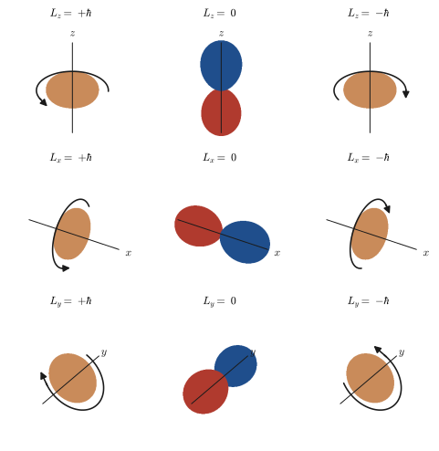
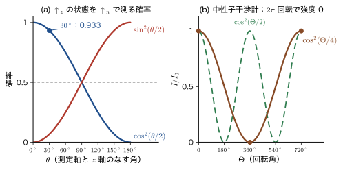

第24章昇降演算子と角運動量の行列表示
第21章では角運動量を演算子 $\hat{\bm{L}}$ にして交換関係を導き，第22章では球面調和関数 $Y_l^m$ が $\hat{L}^2$ と $\hat{L}_z$ の固有関数であることと，固有値が $l(l+1)\hbar^2$，$m\hbar$ であることを確かめた．そして第23章で，電子には軌道運動とは別の角運動量——スピン——があることを見た．この章では，これらの角運動量をひとつの道具で扱えるようにする．その道具が，磁気量子数 $m$ をちょうど 1 つだけ上げ下げする昇降演算子（ladder operator）$\hat{L}_\pm=\hat{L}_x\pm i\hat{L}_y$ である．調和振動子で，エネルギーを $\hbar\omega$ だけ上げ下げする $\hat{a}^\dagger$，$\hat{a}$（第13章 13.8）が「はしご」の役をしたのと同じ発想で，角運動量では $\hat{L}_+$，$\hat{L}_-$ が，$m=l,l-1,\dots,-l$ の $2l+1$ 段のはしごを上り下りする．
はしごの段を数えると，角運動量の量子化が，たった 1 つの交換関係から出てくることがわかる．$\hat{L}_x,\hat{L}_y,\hat{L}_z$ の交換関係だけを仮定すれば，角運動量の大きさを決める量子数 $j$ は $0,\tfrac12,1,\tfrac32,\dots$ のどれかであり，$m$ は $-j$ から $j$ まで $2j+1$ 個であることが，微分方程式を 1 つも解かずに導ける（24.3 節）．軌道では $j$ は整数だけ，スピンでは $\tfrac12$ も許される．
さらに同じ代数から，角運動量演算子を $(2l+1)\times(2l+1)$ の行列として書き下せる．$l=1$ なら $3\times3$，スピン $\tfrac12$ なら $2\times2$ である．行列にしてしまえば，固有値と固有ベクトルは行列の対角化（大学数学 第12章 12.1）で機械的に求まる（24.4–24.6 節）．こうして，$\hat{L}_x$ の固有状態が実は $\mathrm{p}_y\pm i\mathrm{p}_z$ のような重ね合わせであることがわかる．
最後に，スピン $\tfrac12$ では 2 成分ベクトルの「符号」や「虚数」の意味が相対位相（＝スピンの向きの方位角）であること，任意の向きのスピンを球面の 1 点で表す Bloch（ブロッホ）球，スピンを $2\pi$ 回転させると符号が反転すること（24.7–24.9 節）までが，一続きの計算で理解できる．
古典力学では，角運動量ベクトルの 3 成分 $L_x,L_y,L_z$ は同時にすべて決まった値をもった（AD 03 第2章 2.5）．量子力学では 3 成分が同時に確定することはなく，行列で書けば，$\hat{L}_z$ を対角にすると $\hat{L}_x,\hat{L}_y$ は対角でなくなる．この「はしご」と「行列」の言葉は，磁性イオンの磁気モーメント，NMR・ESR のスピン準位，配位子場での軌道の分裂（第VIII部），さらに群論（固体物理学 AD 06，素粒子物理学 AD 09）の出発点になる．この章で作る行列は，次章（第25章）で軌道とスピンを合わせるとき，そのまま $6\times6$，$10\times10$ の行列の部品になる．
- 昇降演算子 $\hat{L}_\pm=\hat{L}_x\pm i\hat{L}_y$ を定義し，$\comm{\hat{L}_z}{\hat{L}_\pm}=\pm\hbar\hat{L}_\pm$，$\comm{\hat{L}_+}{\hat{L}_-}=2\hbar\hat{L}_z$ を行を飛ばさずに導き，「$m$ を 1 つ上げ下げする」意味を説明できること
- $\hat{L}_\pm$ の極座標形 $\hat{L}_+=\hbar e^{i\varphi}\bigl(\partial_\theta+i\cot\theta\,\partial_\varphi\bigr)$，$\hat{L}_-=\hbar e^{-i\varphi}\bigl(-\partial_\theta+i\cot\theta\,\partial_\varphi\bigr)$ から，$\hat{L}_\pm Y_l^m=\hbar\sqrt{(l\mp m)(l\pm m+1)}\,Y_l^{m\pm1}$ を導けること
- 交換関係だけから，$j=0,\tfrac12,1,\tfrac32,\dots$，$m=-j,\dots,j$，$\hat{J}_\pm\ket{j,m}=\hbar\sqrt{j(j+1)-m(m\pm1)}\,\ket{j,m\pm1}$ を導き，軌道では整数の $j$ だけが許される理由（$e^{im\varphi}$ の一価性）を説明できること
- $\hat{L}^2$，$\hat{L}_z$，$\hat{L}_\pm$，$\hat{L}_x$，$\hat{L}_y$ を $l=1,2$（一般の $l$）の行列として書き，交換関係と $\hat{L}^2=\hat{L}_x^2+\hat{L}_y^2+\hat{L}_z^2$ を行列で検算できること
- $\hat{L}_x$，$\hat{L}_y$，$\hat{L}_z$ の固有値・固有ベクトルを行列式から求め，固有関数が実軌道 $\mathrm{p}_x,\mathrm{p}_y,\mathrm{p}_z$ とどう対応するか，測定でどの値がどんな確率で出るかを計算できること
- スピン $\tfrac12$ の $\hat{S}_x,\hat{S}_y,\hat{S}_z$ の固有ベクトル $(1,\pm1)^{\mathsf T}/\sqrt2$，$(1,\pm i)^{\mathsf T}/\sqrt2$ を求め，「符号」や「虚数」が相対位相＝向きを表すこと（振幅は打ち消し合わない）を説明し，逐次 Stern–Gerlach 実験の強度 $I_0/8$ を計算できること
- ユニタリ行列による基底変換 $A'=U^{\dagger}AU$ で交換関係と固有値が変わらないことを示し，$U^{-1}\sigma_xU=\sigma_z$ を計算できること
- 任意の向き $\bm{n}$ のスピンの固有ベクトル $(\cos\tfrac\theta2,e^{i\varphi}\sin\tfrac\theta2)^{\mathsf T}$，Bloch 球，回転演算子 $e^{-i\alpha\,\bm{n}\cdot\bm{\sigma}/2}$，$4\pi$ 周期，Larmor 歳差を扱えること
もとにしたノート：望月泰英『物理学ノート 量子力学2』 pp. 32–38，『物理学ノート 量子力学3』 pp. 8–10．
24.1 昇降演算子の定義と交換関係 — 「はしご」の演算子
24.1.1 はしごの発想
球面調和関数 $Y_l^m$ は，$l$ を 1 つ決めると $m=l,l-1,\dots,-l$ の $2l+1$ 個ある．$\hat{L}_z$ の固有値は $m\hbar$ だから，これらは $\hat{L}_z$ の値が $\hbar$ ずつ違う，$2l+1$ 段の「はしご」をなしている（図24.1）．このはしごの段を 1 つ上がる操作，1 つ下がる操作を，それぞれ演算子として作れないだろうか．もし作れれば，最上段（または最下段）を 1 つ知るだけで，残りの段がすべて作れる．調和振動子でも同じことをした：$\hat{a}^\dagger$ を作用させるとエネルギーがちょうど $\hbar\omega$ だけ上がり，$\hat{a}$ を作用させると下がった（第13章 13.8）．角運動量の場合，はしごの段は $\hat{L}_z$ の固有値であり，段の間隔は $\hbar$ である．
この節では，まず昇降演算子を定義し，その交換関係を導く．交換関係が計算の要（かなめ）である．なぜなら，「$m$ を 1 つ上げる」という性質そのものが，交換関係 $\comm{\hat{L}_z}{\hat{L}_+}=\hbar\hat{L}_+$ の言い換えだからである．計算に使う出発点は，第21章で導いた角運動量の 3 つの交換関係である．
ここで $\comm{\hat{A}}{\hat{B}}=\hat{A}\hat{B}-\hat{B}\hat{A}$ は交換子，$\hat{L}_x,\hat{L}_y,\hat{L}_z$ は Hermite 演算子である．式 \eqref{eq:24-comm3} の右辺は，添字 $x\to y\to z\to x$ と巡回する形になっている．また，$\comm{\hat{B}}{\hat{A}}=-\comm{\hat{A}}{\hat{B}}$ だから，たとえば $\comm{\hat{L}_z}{\hat{L}_y}=-i\hbar\hat{L}_x$，$\comm{\hat{L}_y}{\hat{L}_x}=-i\hbar\hat{L}_z$ である．
24.1.2 昇降演算子の定義
定義24.1 昇降演算子（上昇演算子と下降演算子）
角運動量演算子を使って，上昇演算子（raising operator）$\hat{L}_+$ と下降演算子（lowering operator）$\hat{L}_-$ を次のように定義する．
\begin{equation} \hat{L}_+\equiv\hat{L}_x+i\hat{L}_y,\qquad \hat{L}_-\equiv\hat{L}_x-i\hat{L}_y \label{eq:24-Lpm-def} \end{equation}両方をまとめて昇降演算子（ladder operator）といい，$\hat{L}_\pm$ と書く．逆に解くと，
$$ \hat{L}_x=\frac12\bigl(\hat{L}_++\hat{L}_-\bigr),\qquad \hat{L}_y=\frac{1}{2i}\bigl(\hat{L}_+-\hat{L}_-\bigr) $$である（2 式を足す・引くだけ）．
$\hat{L}_+$ と $\hat{L}_-$ は Hermite 演算子ではない．$\hat{L}_x,\hat{L}_y$ が Hermite 演算子で，虚数単位 $i$ が随伴（$\dagger$）をとると $-i$ になるから，
\begin{equation} \hat{L}_+^{\dagger}=\bigl(\hat{L}_x+i\hat{L}_y\bigr)^{\dagger}=\hat{L}_x^{\dagger}-i\hat{L}_y^{\dagger}=\hat{L}_x-i\hat{L}_y=\hat{L}_-,\qquad \hat{L}_-^{\dagger}=\hat{L}_+ \label{eq:24-Lpm-dagger} \end{equation}となる．つまり $\hat{L}_+$ と $\hat{L}_-$ は互いのエルミート共役である（複素数でいえば $z=x+iy$ と $\bar{z}=x-iy$ の関係）．Hermite 演算子でないので，$\hat{L}_\pm$ は測定できる物理量ではない．固有値が実数になる保証もない．これらはあくまで，状態を別の状態へ移す「道具」である．
24.1.3 交換関係
$\hat{L}_+$，$\hat{L}_-$ は $\hat{L}_x$，$\hat{L}_y$ で表されるので，$\hat{L}_z$ とは可換ではない（$\hat{L}_z$ は $\hat{L}_x$，$\hat{L}_y$ のどちらとも可換でないから）．どれだけ可換でないかを計算する．出発点は，交換子の定義に従って積を展開することである．
導出：$\comm{\hat{L}_z}{\hat{L}_+}=\hbar\hat{L}_+$
交換子の定義から，
$$ \comm{\hat{L}_z}{\hat{L}_+}=\hat{L}_z\bigl(\hat{L}_x+i\hat{L}_y\bigr)-\bigl(\hat{L}_x+i\hat{L}_y\bigr)\hat{L}_z =\bigl(\hat{L}_z\hat{L}_x-\hat{L}_x\hat{L}_z\bigr)+i\bigl(\hat{L}_z\hat{L}_y-\hat{L}_y\hat{L}_z\bigr) $$右辺の 2 つの括弧は，それぞれ $\comm{\hat{L}_z}{\hat{L}_x}$ と $\comm{\hat{L}_z}{\hat{L}_y}$ である．式 \eqref{eq:24-comm3} から $\comm{\hat{L}_z}{\hat{L}_x}=i\hbar\hat{L}_y$，$\comm{\hat{L}_z}{\hat{L}_y}=-i\hbar\hat{L}_x$ なので，
$$ \comm{\hat{L}_z}{\hat{L}_+}=i\hbar\hat{L}_y+i\bigl(-i\hbar\hat{L}_x\bigr)=i\hbar\hat{L}_y+\hbar\hat{L}_x=\hbar\bigl(\hat{L}_x+i\hat{L}_y\bigr)=\hbar\hat{L}_+ $$を得る．途中で $i\cdot(-i)=1$ を使った．
（導出終わり）
導出：$\comm{\hat{L}_z}{\hat{L}_-}=-\hbar\hat{L}_-$
同様に，
$$ \comm{\hat{L}_z}{\hat{L}_-}=\hat{L}_z\bigl(\hat{L}_x-i\hat{L}_y\bigr)-\bigl(\hat{L}_x-i\hat{L}_y\bigr)\hat{L}_z =\underbrace{\bigl(\hat{L}_z\hat{L}_x-\hat{L}_x\hat{L}_z\bigr)}_{\comm{\hat{L}_z}{\hat{L}_x}=i\hbar\hat{L}_y}-i\underbrace{\bigl(\hat{L}_z\hat{L}_y-\hat{L}_y\hat{L}_z\bigr)}_{\comm{\hat{L}_z}{\hat{L}_y}=-i\hbar\hat{L}_x} $$ $$ =i\hbar\hat{L}_y-i\bigl(-i\hbar\hat{L}_x\bigr)=i\hbar\hat{L}_y-\hbar\hat{L}_x=-\hbar\bigl(\hat{L}_x-i\hat{L}_y\bigr)=-\hbar\hat{L}_- $$となる（$-i\cdot(-i)=i^2=-1$ を使った）．
（導出終わり）
導出：$\comm{\hat{L}_+}{\hat{L}_-}=2\hbar\hat{L}_z$
まず，2 つの積を展開する．$\hat{L}_x$ と $\hat{L}_y$ は互いに可換でないので，順序を保ったまま展開する：
$$ \hat{L}_+\hat{L}_-=\bigl(\hat{L}_x+i\hat{L}_y\bigr)\bigl(\hat{L}_x-i\hat{L}_y\bigr)=\hat{L}_x^2-i\hat{L}_x\hat{L}_y+i\hat{L}_y\hat{L}_x+\hat{L}_y^2=\hat{L}_x^2+\hat{L}_y^2+i\bigl(\hat{L}_y\hat{L}_x-\hat{L}_x\hat{L}_y\bigr) $$ $$ \hat{L}_-\hat{L}_+=\bigl(\hat{L}_x-i\hat{L}_y\bigr)\bigl(\hat{L}_x+i\hat{L}_y\bigr)=\hat{L}_x^2+i\hat{L}_x\hat{L}_y-i\hat{L}_y\hat{L}_x+\hat{L}_y^2=\hat{L}_x^2+\hat{L}_y^2-i\bigl(\hat{L}_y\hat{L}_x-\hat{L}_x\hat{L}_y\bigr) $$差をとると，$\hat{L}_x^2$ と $\hat{L}_y^2$ は打ち消し合い，
$$ \comm{\hat{L}_+}{\hat{L}_-}=\Bigl\{\hat{L}_x^2+\hat{L}_y^2+i\bigl(\hat{L}_y\hat{L}_x-\hat{L}_x\hat{L}_y\bigr)\Bigr\}-\Bigl\{\hat{L}_x^2+\hat{L}_y^2-i\bigl(\hat{L}_y\hat{L}_x-\hat{L}_x\hat{L}_y\bigr)\Bigr\} =2i\underbrace{\bigl(\hat{L}_y\hat{L}_x-\hat{L}_x\hat{L}_y\bigr)}_{\comm{\hat{L}_y}{\hat{L}_x}=-i\hbar\hat{L}_z}=2i\cdot(-i\hbar\hat{L}_z)=2\hbar\hat{L}_z $$（導出終わり）
定理24.1 昇降演算子の交換関係
\begin{equation} \comm{\hat{L}_z}{\hat{L}_+}=\hbar\hat{L}_+,\qquad \comm{\hat{L}_z}{\hat{L}_-}=-\hbar\hat{L}_-,\qquad \comm{\hat{L}_+}{\hat{L}_-}=2\hbar\hat{L}_z \label{eq:24-zpm} \end{equation}24.1.4 「昇降」の意味 — $m$ を 1 つ上げる・下げる
式 \eqref{eq:24-zpm} の最初の 2 式が，$\hat{L}_\pm$ を「昇降演算子」とよぶ理由である．
イメージ：$\hat{L}_+$ は $\hat{L}_z$ の固有値を $\hbar$ だけ上げる
$\hat{L}_z$ の固有関数 $\psi$（固有値 $m\hbar$）があるとする：$\hat{L}_z\psi=m\hbar\psi$．これに $\hat{L}_+$ を作用させた関数 $\hat{L}_+\psi$ に，さらに $\hat{L}_z$ を作用させてみる．$\hat{L}_z\hat{L}_+=\hat{L}_+\hat{L}_z+\comm{\hat{L}_z}{\hat{L}_+}$ と書き換えて，式 \eqref{eq:24-zpm} を使うと，
$$ \hat{L}_z\bigl(\hat{L}_+\psi\bigr)=\bigl(\hat{L}_+\hat{L}_z+\hbar\hat{L}_+\bigr)\psi=\hat{L}_+\bigl(m\hbar\psi\bigr)+\hbar\hat{L}_+\psi=(m+1)\hbar\,\bigl(\hat{L}_+\psi\bigr) $$となる．つまり $\hat{L}_+\psi$ は，$\hat{L}_z$ の固有値が $(m+1)\hbar$ の固有関数である（$\hat{L}_+\psi=0$ でなければ）．同様に，$\hat{L}_z\bigl(\hat{L}_-\psi\bigr)=(m-1)\hbar\,\bigl(\hat{L}_-\psi\bigr)$ である．調和振動子で $\comm{\hat{H}}{\hat{a}^\dagger}=\hbar\omega\hat{a}^\dagger$ から「$\hat{a}^\dagger$ はエネルギーを $\hbar\omega$ だけ上げる」が出たのと，まったく同じ論法である．
もう 1 つ大事なことがある．$\hat{L}^2$ は $\hat{L}_x,\hat{L}_y,\hat{L}_z$ のどれとも可換である（第22章）から，$\hat{L}_\pm$ とも可換である：
\begin{equation} \comm{\hat{L}^2}{\hat{L}_\pm}=\comm{\hat{L}^2}{\hat{L}_x}\pm i\comm{\hat{L}^2}{\hat{L}_y}=0 \label{eq:24-L2-pm} \end{equation}ゆえに，$\hat{L}_\pm$ を作用させても $\hat{L}^2$ の固有値 $l(l+1)\hbar^2$ は変わらない．すなわち，昇降演算子は「$l$ を変えずに，$m$ だけを 1 つ動かす」演算子である．$\hat{L}_+\psi$ は，$\hat{L}^2$ の固有値 $l(l+1)\hbar^2$，$\hat{L}_z$ の固有値 $(m+1)\hbar$ をもつ．
24.1.5 $\hat{L}^2$ と昇降演算子の関係
$\hat{L}_-\hat{L}_+$ と $\hat{L}_+\hat{L}_-$ を，前項の展開の結果に，交換関係 $\comm{\hat{L}_y}{\hat{L}_x}=-i\hbar\hat{L}_z$ を代入して整理する．
導出：$\hat{L}^2$ を昇降演算子と $\hat{L}_z$ で表す
24.1.3 節の展開より，$\hat{L}_-\hat{L}_+=\hat{L}_x^2+\hat{L}_y^2-i\comm{\hat{L}_y}{\hat{L}_x}=\hat{L}_x^2+\hat{L}_y^2-i(-i\hbar\hat{L}_z)=\hat{L}_x^2+\hat{L}_y^2-\hbar\hat{L}_z$．ゆえに $\hat{L}_x^2+\hat{L}_y^2=\hat{L}_-\hat{L}_++\hbar\hat{L}_z$ で，
$$ \hat{L}^2=\hat{L}_x^2+\hat{L}_y^2+\hat{L}_z^2=\hat{L}_-\hat{L}_++\hat{L}_z^2+\hbar\hat{L}_z $$同様に $\hat{L}_+\hat{L}_-=\hat{L}_x^2+\hat{L}_y^2+i\comm{\hat{L}_y}{\hat{L}_x}=\hat{L}_x^2+\hat{L}_y^2+\hbar\hat{L}_z$ から，$\hat{L}^2=\hat{L}_+\hat{L}_-+\hat{L}_z^2-\hbar\hat{L}_z$ を得る．
（導出終わり）
公式24.1 $\hat{L}^2$ と昇降演算子
\begin{equation} \hat{L}^2=\hat{L}_-\hat{L}_++\hat{L}_z^2+\hbar\hat{L}_z=\hat{L}_+\hat{L}_-+\hat{L}_z^2-\hbar\hat{L}_z,\qquad \hat{L}_x^2+\hat{L}_y^2=\tfrac12\bigl(\hat{L}_+\hat{L}_-+\hat{L}_-\hat{L}_+\bigr) \label{eq:24-L2-ladder} \end{equation}右の式は，上の 2 つの積 $\hat{L}_+\hat{L}_-$，$\hat{L}_-\hat{L}_+$ を足すと $\hat{L}_x^2+\hat{L}_y^2$ の 2 倍になる（$\comm{\hat{L}_y}{\hat{L}_x}$ を含む項が打ち消す）ことから出る．式 \eqref{eq:24-L2-ladder} は，24.3 節で「はしごの端で止まる」条件から $\hat{L}^2$ の固有値を決めるときに，決定的な役割を果たす．
24.1.6 直交座標での昇降演算子
$\hat{L}_x=-i\hbar\bigl(y\,\partial_z-z\,\partial_y\bigr)$，$\hat{L}_y=-i\hbar\bigl(z\,\partial_x-x\,\partial_z\bigr)$（第21章）を式 \eqref{eq:24-Lpm-def} に代入すると，昇降演算子の直交座標での形が得られる．
導出：直交座標での $\hat{L}_\pm$
$$ \hat{L}_+=-i\hbar\Bigl\{y\,\partial_z-z\,\partial_y+i\bigl(z\,\partial_x-x\,\partial_z\bigr)\Bigr\} =-i\hbar\Bigl\{(y-ix)\,\partial_z+i\,z\bigl(\partial_x+i\,\partial_y\bigr)\Bigr\} $$ここで $y-ix=-i(x+iy)$ だから，$-i\hbar\cdot(-i)(x+iy)\partial_z=-\hbar(x+iy)\partial_z$，$-i\hbar\cdot i\,z(\partial_x+i\partial_y)=\hbar z(\partial_x+i\partial_y)$ となり，
$$ \hat{L}_+=\hbar\Bigl\{z\bigl(\partial_x+i\,\partial_y\bigr)-(x+iy)\,\partial_z\Bigr\} $$同様に $\hat{L}_-$ は，$y+ix=i(x-iy)$ を使って
$$ \hat{L}_-=-i\hbar\Bigl\{(y+ix)\,\partial_z-z\bigl(\partial_y+i\,\partial_x\bigr)\Bigr\}=\hbar\Bigl\{(x-iy)\,\partial_z-z\bigl(\partial_x-i\,\partial_y\bigr)\Bigr\} $$となる（$\partial_y+i\partial_x=i(\partial_x-i\partial_y)$）．
（導出終わり）
公式24.2 直交座標での昇降演算子
\begin{equation} \hat{L}_+=\hbar\Bigl\{z\bigl(\partial_x+i\,\partial_y\bigr)-(x+iy)\,\partial_z\Bigr\},\qquad \hat{L}_-=\hbar\Bigl\{(x-iy)\,\partial_z-z\bigl(\partial_x-i\,\partial_y\bigr)\Bigr\} \label{eq:24-cart} \end{equation}この形を使うと，$l=1$（p 軌道）のはしごが，微分をほとんど使わずに作れる．p 軌道の 3 つの基本関数は，$z$，$x+iy$，$x-iy$ である（第16章 16.6 の実軌道 $\mathrm{p}_x,\mathrm{p}_y,\mathrm{p}_z$ と，そこから作る複素軌道 $\mathrm{p}_x\pm i\mathrm{p}_y$）．$r=\sqrt{x^2+y^2+z^2}$ は $\hat{L}_\pm$ の作用で変わらないので（$\hat{\bm{L}}$ は角度にしか作用しない），$Y_1^m\propto(\text{上の 3 つ})/r$ に対して作用は次のようになる．
例題24.1 p 軌道のはしごと $\hat{L}^2=\hat{L}_-\hat{L}_++\hat{L}_z^2+\hbar\hat{L}_z$ の確認
(1) 式 \eqref{eq:24-cart} を使って，$\hat{L}_+z$，$\hat{L}_+(x-iy)$，$\hat{L}_+(x+iy)$，$\hat{L}_-z$，$\hat{L}_-(x+iy)$，$\hat{L}_-(x-iy)$ を求めよ．(2) $Y_1^0=\sqrt{3/4\pi}\,z/r$，$Y_1^{\pm1}=\mp\sqrt{3/8\pi}\,(x\pm iy)/r$ を用いて，(1) から $\hat{L}_+Y_1^0=\sqrt2\hbar\,Y_1^1$ を確かめよ．(3) $z$ に $\hat{L}^2=\hat{L}_-\hat{L}_++\hat{L}_z^2+\hbar\hat{L}_z$ を作用させ，$\hat{L}^2z=2\hbar^2z$ を示せ．
解答 (1) $\partial_z z=1$，$\partial_x z=\partial_y z=0$ だから $\hat{L}_+z=\hbar\{0-(x+iy)\cdot1\}=-\hbar(x+iy)$．$\hat{L}_+(x-iy)$ では $\partial_z(x-iy)=0$，$(\partial_x+i\partial_y)(x-iy)=1+i(-i)=2$ だから $\hat{L}_+(x-iy)=2\hbar z$．$\hat{L}_+(x+iy)$ では $(\partial_x+i\partial_y)(x+iy)=1+i\cdot i=0$ だから $0$（これ以上は上がらない）．同様に $\hat{L}_-z=\hbar(x-iy)$，$\hat{L}_-(x+iy)=\hbar\{0-z(1-i\cdot i)\}=-2\hbar z$，$\hat{L}_-(x-iy)=0$．
(2) $\hat{L}_+Y_1^0=\sqrt{\dfrac{3}{4\pi}}\dfrac{\hat{L}_+z}{r}=-\hbar\sqrt{\dfrac{3}{4\pi}}\dfrac{x+iy}{r}=\sqrt2\,\hbar\Bigl(-\sqrt{\dfrac{3}{8\pi}}\dfrac{x+iy}{r}\Bigr)=\sqrt2\,\hbar\,Y_1^1$．最後に $\sqrt{3/4\pi}=\sqrt2\sqrt{3/8\pi}$ を使った．
(3) $\hat{L}_+z=-\hbar(x+iy)$ に $\hat{L}_-$ を作用させると $\hat{L}_-\hat{L}_+z=-\hbar\cdot\hat{L}_-(x+iy)=-\hbar\cdot(-2\hbar z)=2\hbar^2z$．また $\hat{L}_zz=-i\hbar(x\partial_y-y\partial_x)z=0$ だから $\hat{L}_z^2z=0$，$\hbar\hat{L}_zz=0$．したがって $\hat{L}^2z=2\hbar^2z+0+0=1\cdot(1+1)\hbar^2z$ で，$l=1$ の固有値 $l(l+1)\hbar^2=2\hbar^2$ が出る．
関連シミュレーター：はしごを上り下りしながら係数を確かめるには リー群シミュレーター ③ 既約表現と多重項．
24.2 極座標での昇降演算子と球面調和関数 — $\hat{L}_\pm Y_l^m$ の計算
前節では，昇降演算子が $\hat{L}_z$ の固有値を $\hbar$ だけ動かすことを，交換関係から示した．では，球面調和関数 $Y_l^m(\theta,\varphi)$ に $\hat{L}_\pm$ を作用させると，具体的にどんな関数になるのか．この節では，$\hat{L}_\pm$ を極座標 $(\theta,\varphi)$ の微分演算子で書き，$Y_l^m$ に実際に作用させて，次の結果を導く：$\hat{L}_\pm Y_l^m=\hbar\sqrt{(l\mp m)(l\pm m+1)}\,Y_l^{m\pm1}$．はしごの各段の間の「つなぎの係数」$\sqrt{(l\mp m)(l\pm m+1)}$ が具体的に決まる．
24.2.1 昇降演算子の極座標形
第21章で，$\hat{L}_x$ と $\hat{L}_y$ を極座標で表した：
\begin{equation} \hat{L}_x=-\frac{\hbar}{i}\left(\sin\varphi\,\pdiff{}{\theta}+\frac{\cos\varphi}{\tan\theta}\,\pdiff{}{\varphi}\right),\qquad \hat{L}_y=-\frac{\hbar}{i}\left(-\cos\varphi\,\pdiff{}{\theta}+\frac{\sin\varphi}{\tan\theta}\,\pdiff{}{\varphi}\right) \label{eq:24-Lxy-polar} \end{equation}ここで $\theta$ は $z$ 軸からの角（天頂角），$\varphi$ は方位角である．係数の $-\hbar/i$ は，分母の $i$ を上に上げると $-\hbar/i=-\hbar\cdot(-i)=i\hbar$ である（$1/i=-i$）．この形を式 \eqref{eq:24-Lpm-def} に代入する．
導出：$\hat{L}_+$ の極座標形
$-\hbar/i=i\hbar$ を使って，$\hat{L}_x+i\hat{L}_y$ を $\partial_\theta$ の項と $\partial_\varphi$ の項に分けて整理する．
$$ \hat{L}_+=\hat{L}_x+i\hat{L}_y=i\hbar\Bigl\{\bigl(\sin\varphi-i\cos\varphi\bigr)\pdiff{}{\theta}+\frac{1}{\tan\theta}\bigl(\cos\varphi+i\sin\varphi\bigr)\pdiff{}{\varphi}\Bigr\} $$$\partial_\theta$ の係数は，$\sin\varphi$ と $i\cdot(-\cos\varphi)$ から来る．ここで $\sin\varphi-i\cos\varphi=-i(\cos\varphi+i\sin\varphi)=-ie^{i\varphi}$ である（Euler の公式，大学数学 第21章 21.4．実際 $-i\cos\varphi-i\cdot i\sin\varphi=-i\cos\varphi+\sin\varphi$ で一致する）．したがって $i\hbar\cdot(-i)e^{i\varphi}=\hbar e^{i\varphi}$ で，
$$ \hat{L}_+=\hbar\Bigl\{(\cos\varphi+i\sin\varphi)\pdiff{}{\theta}+i\frac{1}{\tan\theta}(\cos\varphi+i\sin\varphi)\pdiff{}{\varphi}\Bigr\}=\hbar\,e^{i\varphi}\left(\pdiff{}{\theta}+i\cot\theta\,\pdiff{}{\varphi}\right) $$（導出終わり）
導出：$\hat{L}_-$ の極座標形
$\hat{L}_-=\hat{L}_x-i\hat{L}_y$ では，$\partial_\theta$ の係数が $\sin\varphi-i(-\cos\varphi)=\sin\varphi+i\cos\varphi=i(\cos\varphi-i\sin\varphi)=ie^{-i\varphi}$ になり（$-i\cdot(-\cos\varphi)=+i\cos\varphi$ に注意），$\partial_\varphi$ の係数は $\cos\varphi-i\sin\varphi=e^{-i\varphi}$ になる：
$$ \hat{L}_-=i\hbar\Bigl\{\bigl(\sin\varphi+i\cos\varphi\bigr)\pdiff{}{\theta}+\frac{1}{\tan\theta}\bigl(\cos\varphi-i\sin\varphi\bigr)\pdiff{}{\varphi}\Bigr\} =i\hbar\Bigl\{ie^{-i\varphi}\pdiff{}{\theta}+\cot\theta\,e^{-i\varphi}\pdiff{}{\varphi}\Bigr\} $$$i\hbar\cdot i=-\hbar$ だから，
$$ \hat{L}_-=\hbar\Bigl\{-(\cos\varphi-i\sin\varphi)\pdiff{}{\theta}+i\frac{1}{\tan\theta}(\cos\varphi-i\sin\varphi)\pdiff{}{\varphi}\Bigr\}=\hbar\,e^{-i\varphi}\left(-\pdiff{}{\theta}+i\cot\theta\,\pdiff{}{\varphi}\right) $$（導出終わり）
公式24.3 昇降演算子の極座標形
\begin{equation} \hat{L}_+=\hbar\,e^{i\varphi}\left(\pdiff{}{\theta}+i\cot\theta\,\pdiff{}{\varphi}\right),\qquad \hat{L}_-=\hbar\,e^{-i\varphi}\left(-\pdiff{}{\theta}+i\cot\theta\,\pdiff{}{\varphi}\right) \label{eq:24-Lpm-polar} \end{equation}注意：$\hat{L}_-$ の $\partial_\theta$ の符号は $\hat{L}_+$ と逆
式 \eqref{eq:24-Lxy-polar} のとおり，$\hat{L}_x$ と $\hat{L}_y$ は「$i\hbar\times$（実数の係数をもつ微分演算子）」の形をしている．そのため，$\hat{L}_+$ の式の $i$ をすべて $-i$ に置き換える（複素共役をとる）と，$\hat{L}_-$ ではなく，全体の符号が逆の $-\hat{L}_-$ になる：$\hbar e^{-i\varphi}\bigl(\partial_\theta-i\cot\theta\,\partial_\varphi\bigr)=-\hat{L}_-$．式 \eqref{eq:24-Lpm-polar} の $\hat{L}_-$ では，$\partial_\theta$ の項の符号が $\hat{L}_+$ と逆になっているのが正しい．次の 24.2.5 節で $Y_l^m$ に作用させたとき，係数が正の実数になることでも確かめられる．
イメージ：$e^{\pm i\varphi}$ を掛けることが $m$ を $\pm1$ 動かすこと
式 \eqref{eq:24-Lpm-polar} の前に付いた因子 $e^{i\varphi}$ に注目しよう．$Y_l^m$ の $\varphi$ 依存性は $e^{im\varphi}$ だから，$e^{i\varphi}$ を掛けると $e^{i(m+1)\varphi}$ になり，$m\to m+1$ となる．$\hat{L}_-$ は $e^{-i\varphi}$ を掛けるので $m\to m-1$ である．括弧の中の微分は，$\theta$ 方向の依存性を，$m+1$ に見合う関数（$P_l^{m+1}$）に直す役目をする．「$m\to m+1$ になる」ことが，極座標形でも一目でわかる．
24.2.2 球面調和関数の式と $P_l^m$
$\hat{L}_\pm$ を $Y_l^m$ に作用させるために，$Y_l^m$ の式を書いておく．導出は第14章と第22章にあるので，ここでは結果を使う．
定義24.2 球面調和関数 $Y_l^m(\theta,\varphi)$
方位量子数 $l=0,1,2,\dots$，磁気量子数 $m=-l,-l+1,\dots,l$ に対して，
\begin{equation} Y_l^m(\theta,\varphi)=(-1)^{\frac{m+\abs{m}}{2}}\sqrt{\frac{2l+1}{4\pi}\,\frac{(l-\abs{m})!}{(l+\abs{m})!}}\;\frac{(1-\cos^2\theta)^{\abs{m}/2}}{2^l\,l!}\,\frac{\dd^{\,l+\abs{m}}}{\dd(\cos\theta)^{l+\abs{m}}}\bigl(\cos^2\theta-1\bigr)^l\,e^{im\varphi} \label{eq:24-Ylm} \end{equation}で定義する．$Y_l^m$ を $Y_{l,m}$ とも書く．$m\ge0$ では位相因子は $(-1)^m$，$m\le0$ では $1$ である（$(m+\abs{m})/2$ は $m\ge0$ で $m$，$m\le0$ で $0$）．これが Condon–Shortley の位相の選び方である．
階乗の比は $(l-\abs{m})!/(l+\abs{m})!$ である（分子が $l-\abs{m}$）ことに注意する．これは，$\int\abs{Y_l^m}^2\sin\theta\,\dd\theta\,\dd\varphi=1$ の規格化から決まる．
式 \eqref{eq:24-Ylm} の $\theta$ を含む部分は，Legendre 陪関数（associated Legendre function）で書ける．$x=\cos\theta$ とおくと，Legendre 多項式の Rodrigues の公式 $P_l(x)=\dfrac{1}{2^ll!}\dfrac{\dd^l}{\dd x^l}(x^2-1)^l$（大学数学 第40章 40.5）を $\abs{m}$ 回微分すれば，
\begin{equation} P_l^{m}(x)\equiv(1-x^2)^{\abs{m}/2}\,\frac{\dd^{\abs{m}}P_l(x)}{\dd x^{\abs{m}}}=\frac{(1-x^2)^{\abs{m}/2}}{2^ll!}\,\frac{\dd^{\,l+\abs{m}}}{\dd x^{\,l+\abs{m}}}(x^2-1)^l \label{eq:24-Plm} \end{equation}と書ける．$(1-x^2)^{\abs{m}/2}=\sin^{\abs{m}}\theta$ で，$(\cos^2\theta-1)^l=(x^2-1)^l$ である．本書の $P_l^m$ は，Condon–Shortley の位相 $(-1)^m$ を含まない定義である．また，指数 $m$ が $m<0$ でも $P_l^{m}=P_l^{\abs{m}}$ と約束する．さらに，$P_l^{m}$ の上付き添字が $l$ を超えると，$l+\abs{m}$ 階の微分が $2l$ 次の多項式を $2l+1$ 回以上微分することになり，$P_l^{m}=0$（$m>l$）である．すると，$Y_l^m$ は次のように書ける：
\begin{equation} Y_l^m(\theta,\varphi)=(-1)^{\frac{m+\abs{m}}{2}}N_{l\abs{m}}\,P_l^{\abs{m}}(\cos\theta)\,e^{im\varphi},\qquad N_{lk}\equiv\sqrt{\frac{2l+1}{4\pi}\,\frac{(l-k)!}{(l+k)!}} \label{eq:24-Ylm-N} \end{equation}$N_{lk}$ は規格化定数である．$l\le2$ の具体形は次のとおりである（$\sin\theta\ge0$，$0\le\theta\le\pi$）．
| $l$ | $m$ | $Y_l^m(\theta,\varphi)$ |
|---|---|---|
| 0 | 0 | $\dfrac{1}{\sqrt{4\pi}}$ |
| 1 | $0$ | $\sqrt{\dfrac{3}{4\pi}}\cos\theta$ |
| 1 | $\pm1$ | $\mp\sqrt{\dfrac{3}{8\pi}}\sin\theta\,e^{\pm i\varphi}$ |
| 2 | $0$ | $\sqrt{\dfrac{5}{16\pi}}\bigl(3\cos^2\theta-1\bigr)$ |
| 2 | $\pm1$ | $\mp\sqrt{\dfrac{15}{8\pi}}\sin\theta\cos\theta\,e^{\pm i\varphi}$ |
| 2 | $\pm2$ | $\sqrt{\dfrac{15}{32\pi}}\sin^2\theta\,e^{\pm2i\varphi}$ |
また，$Y_l^m$ は $\varphi$ に $e^{im\varphi}$ の形で依存するので，$\varphi$ での偏微分は簡単である：
\begin{equation} \pdiff{}{\varphi}Y_l^m(\theta,\varphi)=im\,Y_l^m(\theta,\varphi) \label{eq:24-dphiY} \end{equation}24.2.3 $P_l^m$ の $\theta$ 微分
$\hat{L}_\pm$ には $\partial_\theta$ が含まれるので，$P_l^m(\cos\theta)$ を $\theta$ で微分する必要がある．$m\ge0$ の場合に計算する（$m<0$ は $P_l^{\abs{m}}$ で同じ計算）．合成関数の微分により，
$$ \pdiff{}{\theta}P_l^m(\cos\theta)=\pdiff{P_l^m}{(\cos\theta)}\pdiff{(\cos\theta)}{\theta}=-\sin\theta\,\pdiff{P_l^m(x)}{x}=-\sqrt{1-x^2}\,\pdiff{P_l^m(x)}{x} $$である．$0\le\theta\le\pi$ で $\sin\theta=\sqrt{1-x^2}\ge0$ を使った．次に，$x$ による微分を積の微分の公式で行う．式 \eqref{eq:24-Plm} の右辺で，$(1-x^2)^{m/2}$ の微分は $\dfrac{m}{2}(1-x^2)^{m/2-1}(-2x)=-\dfrac{mx}{1-x^2}(1-x^2)^{m/2}$ だから，
$$ \pdiff{P_l^m}{x}=-\frac{mx}{1-x^2}P_l^m(x)+\frac{(1-x^2)^{m/2}}{2^ll!}\frac{\dd^{\,l+m+1}}{\dd x^{\,l+m+1}}(x^2-1)^l $$第 2 項の微分は 1 階増えて $l+m+1$ 階になった．式 \eqref{eq:24-Plm} の $m$ を $m+1$ にすると $P_l^{m+1}=\dfrac{(1-x^2)^{(m+1)/2}}{2^ll!}\dfrac{\dd^{\,l+m+1}}{\dd x^{\,l+m+1}}(x^2-1)^l$ だから，第 2 項は $\dfrac{1}{\sqrt{1-x^2}}P_l^{m+1}(x)$ に等しい．よって
$$ \pdiff{P_l^m}{x}=-\frac{mx}{1-x^2}P_l^m(x)+\frac{1}{\sqrt{1-x^2}}P_l^{m+1}(x) $$これに $-\sqrt{1-x^2}$ を掛けて，$x=\cos\theta$，$\sqrt{1-x^2}=\sin\theta$ に戻すと，
$$ \pdiff{}{\theta}P_l^m(\cos\theta)=\frac{m\,x}{\sqrt{1-x^2}}P_l^m-P_l^{m+1}=m\cot\theta\,P_l^m(\cos\theta)-P_l^{m+1}(\cos\theta) $$となる．整理すると次の公式が得られる．
公式24.4 $P_l^m$ の $\theta$ 微分
$m\ge0$ に対して，
\begin{equation} \left(\pdiff{}{\theta}-m\cot\theta\right)P_l^m(\cos\theta)=-P_l^{m+1}(\cos\theta) \label{eq:24-dPlm} \end{equation}である．すなわち，左辺の演算は，$P_l^m$ を $P_l^{m+1}$ へ移し，符号を反転させる．
符号は $-P_l^{m+1}$ であることに注意する（$+$ ではない）．この負号は次に見るように，$Y_l^{m+1}$ の位相因子 $(-1)^{m+1}$ と結びついて，最終結果の係数を正の実数にする．
24.2.4 上昇演算子を $Y_l^m$ に作用させる
まず $m\ge0$ とする．式 \eqref{eq:24-Ylm-N} で $\abs{m}=m$，位相 $(-1)^m$ である．式 \eqref{eq:24-Lpm-polar} の $\hat{L}_+$ に，$\partial_\varphi Y_l^m=imY_l^m$（式 \eqref{eq:24-dphiY}）を使うと，$i\cot\theta\cdot\partial_\varphi$ の部分は $i\cot\theta\cdot im=-m\cot\theta$ になる：
$$ \hat{L}_+Y_l^m=\hbar e^{i\varphi}\left(\pdiff{}{\theta}+i\cot\theta\,\pdiff{}{\varphi}\right)Y_l^m =\hbar(-1)^mN_{lm}\,e^{i(m+1)\varphi}\left\{\pdiff{P_l^m}{\theta}-m\cot\theta\,P_l^m\right\} $$（$e^{i\varphi}$ と $e^{im\varphi}$ の積が $e^{i(m+1)\varphi}$ になった：$m\to m+1$）．波括弧の中は式 \eqref{eq:24-dPlm} の左辺そのものである．
波括弧の中に，式 \eqref{eq:24-dPlm} の導出の途中の形 $\partial_\theta P_l^m=m\cot\theta\,P_l^m-P_l^{m+1}$ を代入すると，$m\cot\theta\,P_l^m$ の項が，$\theta$ 微分から出る項と $\varphi$ 微分から出る項（$-m\cot\theta\,P_l^m$）の 2 か所に現れて打ち消し合い，$-P_l^{m+1}$ だけが残る：
$$ \pdiff{P_l^m}{\theta}-m\cot\theta\,P_l^m=\bigl(m\cot\theta\,P_l^m-P_l^{m+1}\bigr)-m\cot\theta\,P_l^m=-P_l^{m+1} $$したがって，
$$ \hat{L}_+Y_l^m=-\hbar(-1)^mN_{lm}\,P_l^{m+1}(\cos\theta)\,e^{i(m+1)\varphi}=\hbar(-1)^{m+1}N_{lm}\,P_l^{m+1}(\cos\theta)\,e^{i(m+1)\varphi} $$一方，$Y_l^{m+1}=(-1)^{m+1}N_{l,m+1}P_l^{m+1}(\cos\theta)e^{i(m+1)\varphi}$ である（$m+1\ge0$）．したがって，$\hat{L}_+Y_l^m$ は $Y_l^{m+1}$ に比例し，比例係数は規格化定数の比 $N_{lm}/N_{l,m+1}$ である：
$$ \frac{N_{lm}}{N_{l,m+1}}=\sqrt{\frac{(l-m)!}{(l+m)!}\cdot\frac{(l+m+1)!}{(l-m-1)!}}=\sqrt{(l-m)(l+m+1)} $$（$(l-m)!/(l-m-1)!=l-m$，$(l+m+1)!/(l+m)!=l+m+1$ を使った）．結局，
\begin{equation} \hat{L}_+Y_l^m=\hbar\sqrt{(l-m)(l+m+1)}\;Y_l^{m+1}\qquad(m\ge0) \label{eq:24-Lp-Y} \end{equation}を得る．$m=l$ のときは $P_l^{l+1}=0$（$2l$ 次の多項式を $2l+1$ 回微分する）だから $\hat{L}_+Y_l^l=0$ で，これは係数の $\sqrt{(l-l)(2l+1)}=0$ と整合している．はしごの最上段より上には行けない．
24.2.5 下降演算子を $Y_l^m$ に作用させる
次に，$m\le0$ とする．$\abs{m}=-m$ で位相因子は $1$ だから，$Y_l^m=N_{l\abs{m}}P_l^{\abs{m}}(\cos\theta)e^{im\varphi}$ である．式 \eqref{eq:24-Lpm-polar} の $\hat{L}_-$ に作用させる．$\partial_\varphi Y_l^m=imY_l^m$ から，$i\cot\theta\cdot\partial_\varphi\to i\cot\theta\cdot im=-m\cot\theta=\abs{m}\cot\theta$ となり，
$$ \hat{L}_-Y_l^m=\hbar e^{-i\varphi}\left(-\pdiff{}{\theta}+i\cot\theta\,\pdiff{}{\varphi}\right)Y_l^m =\hbar N_{l\abs{m}}\,e^{i(m-1)\varphi}\left\{-\pdiff{P_l^{\abs{m}}}{\theta}+\abs{m}\cot\theta\,P_l^{\abs{m}}\right\} $$である（$e^{-i\varphi}e^{im\varphi}=e^{i(m-1)\varphi}$：$m\to m-1$）．式 \eqref{eq:24-dPlm} で $m\to\abs{m}$ とした $\partial_\theta P_l^{\abs{m}}=\abs{m}\cot\theta\,P_l^{\abs{m}}-P_l^{\abs{m}+1}$ を波括弧に代入すると，
$$ -\pdiff{P_l^{\abs{m}}}{\theta}+\abs{m}\cot\theta\,P_l^{\abs{m}}=-\bigl(\abs{m}\cot\theta\,P_l^{\abs{m}}-P_l^{\abs{m}+1}\bigr)+\abs{m}\cot\theta\,P_l^{\abs{m}}=+P_l^{\abs{m}+1} $$となり，ここでも $\cot\theta$ の項が打ち消し合う（$\hat{L}_+$ でも $\hat{L}_-$ でも，$\cot\theta$ の項は消える）．$\abs{m-1}=\abs{m}+1$（$m\le0$）だから，
$$ \hat{L}_-Y_l^m=\hbar N_{l\abs{m}}\,P_l^{\abs{m-1}}(\cos\theta)\,e^{i(m-1)\varphi} $$である．$Y_l^{m-1}=N_{l,\abs{m}+1}P_l^{\abs{m-1}}e^{i(m-1)\varphi}$（$m-1<0$ なので位相因子は $1$）と見比べ，係数は $N_{l\abs{m}}/N_{l,\abs{m}+1}=\sqrt{(l-\abs{m})(l+\abs{m}+1)}=\sqrt{(l+m)(l-m+1)}$ となる（$\abs{m}=-m$）．
\begin{equation} \hat{L}_-Y_l^m=\hbar\sqrt{(l+m)(l-m+1)}\;Y_l^{m-1}\qquad(m\le0) \label{eq:24-Lm-Y} \end{equation}$m=-l$ のときは係数が $\sqrt{0\cdot(2l+1)}=0$ で，はしごの最下段より下には行けない．
24.2.6 残りの範囲の $m$ — 随伴を使う
（初めて読むときは，次の定理24.2 の結果だけ読んで先へ進んでよい．$m<0$ の $\hat{L}_+$ と $m>0$ の $\hat{L}_-$ の導出は，あとで戻ってきて確かめればよい．）
式 \eqref{eq:24-Lp-Y} は $m\ge0$ で，式 \eqref{eq:24-Lm-Y} は $m\le0$ で導いた．残りの範囲 —— $m<0$ での $\hat{L}_+$，$m>0$ での $\hat{L}_-$ —— は，$\hat{L}_+^\dagger=\hat{L}_-$（式 \eqref{eq:24-Lpm-dagger}）から出る．$\hat{L}_x,\hat{L}_y$ は球面上の積分 $\braket{f}{g}=\int f^*g\sin\theta\,\dd\theta\,\dd\varphi$ について Hermite だから，$\braket{f}{\hat{L}_+g}=\braket{\hat{L}_-f}{g}$ が成り立つ．
導出：$m<0$ での $\hat{L}_+Y_l^m$
$m<0$ のとき，$m+1\le0$ である．$\hat{L}_+Y_l^m$ は，(i) $\hat{L}_z$ の固有値が $(m+1)\hbar$，(ii) $\hat{L}^2$ の固有値が $l(l+1)\hbar^2$ の関数である（24.1.4 節）．この 2 つの固有値をもつ関数は，定数倍を除いて $Y_l^{m+1}$ 1 つしかないから，$\hat{L}_+Y_l^m=c\,Y_l^{m+1}$ と書ける．定数 $c$ を，左から $Y_l^{m+1}$ との内積をとって求める．$Y_l^{m+1}$ は規格化されているので $c=\braket{Y_l^{m+1}}{\hat{L}_+Y_l^m}$，随伴を使って，
$$ c=\braket{Y_l^{m+1}}{\hat{L}_+Y_l^m}=\braket{\hat{L}_-Y_l^{m+1}}{Y_l^m} $$である．$m+1\le0$ なので，式 \eqref{eq:24-Lm-Y} が使えて $\hat{L}_-Y_l^{m+1}=\hbar\sqrt{(l+m+1)(l-m)}\,Y_l^m$．係数は実数だから，$c=\hbar\sqrt{(l+m+1)(l-m)}\,\braket{Y_l^m}{Y_l^m}=\hbar\sqrt{(l-m)(l+m+1)}$ となり，$m<0$ でも式 \eqref{eq:24-Lp-Y} が成り立つ．$m>0$ での $\hat{L}_-$ も，$\hat{L}_+$ の式 \eqref{eq:24-Lp-Y} を使って同様に示せる．
（導出終わり）
定理24.2 昇降演算子の $Y_l^m$ への作用
すべての $m=-l,\dots,l$ に対して，
\begin{equation} \hat{L}_+Y_l^m=\hbar\sqrt{(l-m)(l+m+1)}\;Y_l^{m+1},\qquad \hat{L}_-Y_l^m=\hbar\sqrt{(l+m)(l-m+1)}\;Y_l^{m-1} \label{eq:24-Lpm-Y} \end{equation}である．$m=l$ のとき $\hat{L}_+Y_l^l=0$，$m=-l$ のとき $\hat{L}_-Y_l^{-l}=0$．
係数はすべて正の実数である．Condon–Shortley の位相 $(-1)^{(m+\abs{m})/2}$ は，まさにこの性質が成り立つように $Y_l^m$ どうしの相対位相をそろえる約束であり，$\hat{L}_\pm$ の行列要素を実数にしてくれる（24.3 節，24.4 節）．図24.1 は $l=2$ の場合に，式 \eqref{eq:24-Lpm-Y} の係数をはしごとして描いたものである．
例題24.2 極座標形で $\hat{L}_+Y_1^0$ と $\hat{L}_-Y_2^1$ を直接計算する
式 \eqref{eq:24-Lpm-polar} を，表24.1 の $Y_1^0=\sqrt{3/4\pi}\cos\theta$，$Y_2^1=-\sqrt{15/8\pi}\sin\theta\cos\theta\,e^{i\varphi}$ に直接作用させて，$\hat{L}_+Y_1^0=\sqrt2\hbar\,Y_1^1$ と $\hat{L}_-Y_2^1=\sqrt6\hbar\,Y_2^0$ を確かめよ．
解答 $Y_1^0$ は $\varphi$ に依存しないから $\partial_\varphi Y_1^0=0$．$\partial_\theta\cos\theta=-\sin\theta$ より， $\hat{L}_+Y_1^0=\hbar e^{i\varphi}\sqrt{\dfrac{3}{4\pi}}\,(-\sin\theta)=\sqrt2\,\hbar\Bigl(-\sqrt{\dfrac{3}{8\pi}}\sin\theta\,e^{i\varphi}\Bigr)=\sqrt2\,\hbar\,Y_1^1$（$\sqrt{3/4\pi}=\sqrt2\sqrt{3/8\pi}$）．
$\hat{L}_-Y_2^1$：$c=\sqrt{15/8\pi}$ とおくと $Y_2^1=-c\sin\theta\cos\theta\,e^{i\varphi}$．$\partial_\theta(\sin\theta\cos\theta)=\cos^2\theta-\sin^2\theta$，$\partial_\varphi Y_2^1=iY_2^1$ だから $i\cot\theta\,\partial_\varphi Y_2^1=-\cot\theta\,Y_2^1$．よって $$ \hat{L}_-Y_2^1=\hbar e^{-i\varphi}\Bigl\{c\,(\cos^2\theta-\sin^2\theta)\,e^{i\varphi}+\cot\theta\,c\sin\theta\cos\theta\,e^{i\varphi}\Bigr\}=\hbar c\bigl(\cos^2\theta-\sin^2\theta+\cos^2\theta\bigr)=\hbar c\,\bigl(3\cos^2\theta-1\bigr) $$ ここで $\cos^2\theta-\sin^2\theta+\cos^2\theta=2\cos^2\theta-(1-\cos^2\theta)=3\cos^2\theta-1$ を使った．$Y_2^0=\sqrt{5/16\pi}\,(3\cos^2\theta-1)$ だから，$\hbar c(3\cos^2\theta-1)=\hbar\,\dfrac{c}{\sqrt{5/16\pi}}\,Y_2^0$，$\dfrac{c}{\sqrt{5/16\pi}}=\sqrt{\dfrac{15}{8\pi}\cdot\dfrac{16\pi}{5}}=\sqrt6$．ゆえに $\hat{L}_-Y_2^1=\sqrt6\hbar\,Y_2^0$．式 \eqref{eq:24-Lpm-Y} の係数 $\sqrt{(l+m)(l-m+1)}=\sqrt{3\cdot2}=\sqrt6$（$l=2$，$m=1$）と一致する．
例題24.3 $\hat{L}_+Y_2^0=\sqrt6\hbar\,Y_2^1$ — 係数は $l(l+1)-m(m+1)$ で確かめる
$l=2$，$m=0$ の上昇では，係数 $\sqrt{(l-m)(l+m+1)}$ はいくらか．$Y_2^0\propto3\cos^2\theta-1$ から直接計算して確かめよ．
解答 式 \eqref{eq:24-Lpm-Y} より $\sqrt{(2-0)(2+0+1)}=\sqrt6$．$l(l+1)-m(m+1)=6-0=6$ とも書ける（係数は，$l=1$ の $\sqrt2$ や $l=2$ の他の段の値からの連想で決めず，必ずこの式に $l,m$ を入れて求める）．直接計算：$Y_2^0$ は $\varphi$ に依存しないので $\hat{L}_+Y_2^0=\hbar e^{i\varphi}\partial_\theta Y_2^0=\hbar e^{i\varphi}\sqrt{\dfrac{5}{16\pi}}\bigl(-6\cos\theta\sin\theta\bigr)$．これを $Y_2^1=-\sqrt{\dfrac{15}{8\pi}}\sin\theta\cos\theta\,e^{i\varphi}$ の何倍かで書くと，比は $6\sqrt{\dfrac{5}{16\pi}}\Big/\sqrt{\dfrac{15}{8\pi}}=6\sqrt{\dfrac{5\cdot8}{16\cdot15}}=6\sqrt{\dfrac16}=\sqrt6$．よって $\hat{L}_+Y_2^0=\sqrt6\hbar\,Y_2^1$ である．
関連シミュレーター：球面調和関数の複素形と実数形の関係は 行列の対角化シミュレーター ① 球面調和関数．
24.3 交換関係だけから導く角運動量の一般論 — $j$ は半整数でもよい
前節では，軌道角運動量の固有関数 $Y_l^m$ に昇降演算子を作用させて，係数 $\sqrt{(l\mp m)(l\pm m+1)}$ を得た．しかし，この計算は $Y_l^m$ の具体的な形（Legendre 陪関数）を使っており，第23章で導入したスピンには使えない．スピン $\tfrac12$ の波動関数は，座標 $\theta,\varphi$ の関数ではなく，2 成分の列ベクトルだからである．しかも，スピンでは量子数が半整数（$\tfrac12$）になるが，軌道では整数だけだった．この違いはどこから来るのか．
実は，角運動量の量子化は，$\hat{L}_x,\hat{L}_y,\hat{L}_z$ の交換関係だけから導ける．座標表示も微分方程式も要らない．この節では，昇降演算子を使ってそれを示す．その結果，$j=0,\tfrac12,1,\tfrac32,\dots$ という「許される値の全リスト」と，$\hat{J}_\pm$ の係数の一般の形が得られる．軌道角運動量，スピン，そして次章で扱う軌道とスピンの合成が，すべてこの 1 つの理論の特殊例になる．
24.3.1 出発点 — 交換関係だけを仮定する
定義24.3 一般の角運動量演算子と $\ket{j,m}$
3 つの Hermite 演算子 $\hat{J}_x,\hat{J}_y,\hat{J}_z$ が，交換関係
\begin{equation} \comm{\hat{J}_x}{\hat{J}_y}=i\hbar\hat{J}_z,\qquad \comm{\hat{J}_y}{\hat{J}_z}=i\hbar\hat{J}_x,\qquad \comm{\hat{J}_z}{\hat{J}_x}=i\hbar\hat{J}_y \label{eq:24-Jcomm} \end{equation}を満たすとき，$\hat{\bm{J}}=(\hat{J}_x,\hat{J}_y,\hat{J}_z)$ を角運動量演算子という．$\hat{\bm{J}}^2=\hat{J}_x^2+\hat{J}_y^2+\hat{J}_z^2$ とし，$\hat{J}_\pm=\hat{J}_x\pm i\hat{J}_y$ を定義する．$\hat{\bm{J}}^2$ と $\hat{J}_z$ の同時固有状態を，量子数 $j$，$m$ で $\ket{j,m}$ と書く：
$$ \hat{\bm{J}}^2\ket{j,m}=j(j+1)\hbar^2\ket{j,m},\qquad \hat{J}_z\ket{j,m}=m\hbar\ket{j,m} $$（この書き方が正当であることは，以下の 24.3.3 節で示す．）
ひとつ断っておく．同じ $\hat{\bm{J}}^2$，$\hat{J}_z$ の固有値をもつ状態が，ほかの量子数（水素原子の主量子数 $n$ や，多電子系の状態の違い）によって複数あってもよい．そのときは，それらの量子数を固定した部分空間の中で以下の議論をすればよい．$\hat{J}_\pm$ は $\hat{J}^2$ と可換なので，同じ部分空間の中で働く．
$\hat{\bm{J}}^2$ を $\hat{J}^2$ と略記する．式 \eqref{eq:24-Jcomm} は，軌道角運動量 $\hat{\bm{L}}$（第21章），スピン $\hat{\bm{S}}$（第23章 23.3 節，23.6 節），そして 2 つの角運動量の和 $\hat{\bm{J}}=\hat{\bm{L}}+\hat{\bm{S}}$（第25章）のどれもが満たす共通の性質である．$\hat{\bm{L}}=\hat{\bm{r}}\times\hat{\bm{p}}$ という「軌道」の意味は，ここでは使わない．
記号：Levi-Civita 記号による書き方
式 \eqref{eq:24-Jcomm} の 3 本は，Levi-Civita（レヴィ＝チヴィタ）記号（大学数学 第8章 8.2 の置換の符号と同じ考え方）$\varepsilon_{ijk}$ を使うと，1 本 $\comm{\hat{J}_i}{\hat{J}_j}=i\hbar\sum_k\varepsilon_{ijk}\hat{J}_k$（$i,j,k\in\{x,y,z\}$）にまとまる．$\varepsilon_{xyz}=\varepsilon_{yzx}=\varepsilon_{zxy}=+1$，逆の並び（$\varepsilon_{yxz}$ など）は $-1$，添字に重複があれば $0$ である．
24.1 節の計算は，$\hat{L}$ を $\hat{J}$ に読み替えても，交換関係 \eqref{eq:24-Jcomm} だけを使っていたから，そのまま成り立つ．整理すると，次の 3 つが使える．
\begin{equation} \comm{\hat{J}_z}{\hat{J}_\pm}=\pm\hbar\hat{J}_\pm,\qquad \comm{\hat{J}^2}{\hat{J}_i}=0\ \ (i=x,y,z),\qquad \hat{J}^2=\hat{J}_-\hat{J}_++\hat{J}_z^2+\hbar\hat{J}_z=\hat{J}_+\hat{J}_-+\hat{J}_z^2-\hbar\hat{J}_z \label{eq:24-J-tools} \end{equation}2 番目の $\comm{\hat{J}^2}{\hat{J}_i}=0$ は，第22章で $\hat{L}$ について示した．念のため $\hat{J}_z$ について確かめておく（$\comm{\hat{A}^2}{\hat{C}}=\hat{A}\comm{\hat{A}}{\hat{C}}+\comm{\hat{A}}{\hat{C}}\hat{A}$ を使う）：
$$ \comm{\hat{J}^2}{\hat{J}_z}=\comm{\hat{J}_x^2}{\hat{J}_z}+\comm{\hat{J}_y^2}{\hat{J}_z} =\hat{J}_x(-i\hbar\hat{J}_y)+(-i\hbar\hat{J}_y)\hat{J}_x+\hat{J}_y(i\hbar\hat{J}_x)+(i\hbar\hat{J}_x)\hat{J}_y=0 $$（$\comm{\hat{J}_x}{\hat{J}_z}=-i\hbar\hat{J}_y$，$\comm{\hat{J}_y}{\hat{J}_z}=i\hbar\hat{J}_x$ を使った．4 項のうち $\hat{J}_x\hat{J}_y$ を含む 2 項と $\hat{J}_y\hat{J}_x$ を含む 2 項がそれぞれ打ち消し合う．）
$\hat{J}^2$ と $\hat{J}_z$ は可換なので，同時固有状態が存在する．その固有値を，$\hbar^2$，$\hbar$ を単位にして次のようにおく：
\begin{equation} \hat{J}^2\ket{a,b}=a\hbar^2\ket{a,b},\qquad \hat{J}_z\ket{a,b}=b\hbar\ket{a,b},\qquad \braket{a,b}{a,b}=1 \label{eq:24-ab} \end{equation}$a$，$b$ は実数（Hermite 演算子の固有値）である（ほかの量子数があるときは，それらを固定して $\ket{a,b}$ と略記する）．$a$ が $j(j+1)$ の形になり，$b$ が $m$ になることを，これから導く．
24.3.2 段を上がる・下がる
24.1.4 節と同じ論法で，$\hat{J}_\pm\ket{a,b}$ は $\hat{J}^2$ の固有値が同じ $a\hbar^2$ で，$\hat{J}_z$ の固有値が $(b\pm1)\hbar$ の固有状態である（$\hat{J}_\pm\ket{a,b}\ne0$ のとき）：
$$ \hat{J}_z\bigl(\hat{J}_\pm\ket{a,b}\bigr)=(b\pm1)\hbar\,\bigl(\hat{J}_\pm\ket{a,b}\bigr),\qquad \hat{J}^2\bigl(\hat{J}_\pm\ket{a,b}\bigr)=a\hbar^2\,\bigl(\hat{J}_\pm\ket{a,b}\bigr) $$$\hat{J}_\pm$ を何度も作用させれば，$b$ が $\hbar$ ずつ増える（減る）状態の列 $\cdots,\ket{a,b-1},\ket{a,b},\ket{a,b+1},\cdots$ が作れる．この列はどこまで続くのか．
24.3.3 はしごの端 — $b$ には上限がある
$\hat{J}^2-\hat{J}_z^2=\hat{J}_x^2+\hat{J}_y^2$ の期待値を $\ket{a,b}$ でとる．なお $\norm{\psi}^2=\braket{\psi}{\psi}$ は，ベクトル $\ket{\psi}$ の長さの 2 乗（ノルムの 2 乗）で，0 以上の実数である．
$$ \bigl(a-b^2\bigr)\hbar^2=\bra{a,b}\hat{J}_x^2+\hat{J}_y^2\ket{a,b}=\norm{\hat{J}_x\ket{a,b}}^2+\norm{\hat{J}_y\ket{a,b}}^2\ \ge\ 0 $$である（$\hat{J}_x$ は Hermite なので $\bra{a,b}\hat{J}_x^2\ket{a,b}=\norm{\hat{J}_x\ket{a,b}}^2\ge0$）．よって $b^2\le a$，すなわち $-\sqrt{a}\le b\le\sqrt{a}$：$b$ は有限の範囲にしか入れない．上がり続けることはできないから，$\hat{J}_+$ を作用させて $0$ になる状態が，必ずどこかに存在する．その $b$ の最大値を $j$ と書く：
$$ \hat{J}_+\ket{a,j}=0\qquad(b\text{ の最大値が }j) $$この式に左から $\hat{J}_-$ を作用させ，式 \eqref{eq:24-J-tools} の $\hat{J}_-\hat{J}_+=\hat{J}^2-\hat{J}_z^2-\hbar\hat{J}_z$ を使うと，
$$ 0=\hat{J}_-\hat{J}_+\ket{a,j}=\bigl(\hat{J}^2-\hat{J}_z^2-\hbar\hat{J}_z\bigr)\ket{a,j}=\hbar^2\bigl(a-j^2-j\bigr)\ket{a,j} $$であり，$\ket{a,j}\ne0$ だから $a=j(j+1)$ を得る．これで，$\hat{J}^2$ の固有値が $j(j+1)\hbar^2$ の形になる理由がわかった：$j(j+1)$ は「はしごの最上段が $j$」という意味である．
24.3.4 はしごの下端と量子化
下向きも同様である．$b$ の最小値を $b_{\min}$ とすると $\hat{J}_-\ket{a,b_{\min}}=0$．これに $\hat{J}_+$ を作用させ，$\hat{J}_+\hat{J}_-=\hat{J}^2-\hat{J}_z^2+\hbar\hat{J}_z$ を使うと
$$ 0=\hat{J}_+\hat{J}_-\ket{a,b_{\min}}=\hbar^2\bigl(a-b_{\min}^2+b_{\min}\bigr)\ket{a,b_{\min}}\quad\Longrightarrow\quad j(j+1)=b_{\min}(b_{\min}-1) $$となる．この 2 次方程式 $b_{\min}^2-b_{\min}-j(j+1)=0$ の解は $b_{\min}=-j$ と $b_{\min}=j+1$ である．後者は $b_{\min}\le j$ に反するので，$b_{\min}=-j$．
結局，$b$ は $-j$ から $j$ まで，$\hat{J}_\pm$ の作用で 1 ずつ変わりながら並ぶ．なぜ $2j$ が整数になるのか，順を追って確かめる．$b$ は $\hat{J}_\pm$ を 1 回作用させるたびにちょうど $\pm1$ しか変わらず，$\hat{J}_+$ を作用させ続けた列が止まる（$\hat{J}_+\ket{a,b}=0$ になる）のは $b=j$ のときだけである（$\hat{J}_+\ket{a,b}=0$ なら，上と同じ計算で $a=b(b+1)$ となる．$a=j(j+1)$ なので $b=j$ か $b=-j-1$ だが，後者は $b_{\min}=-j$ より下でありえない）．したがって，最下段 $b_{\min}=-j$ に $\hat{J}_+$ を $n$ 回作用させたものは $b=-j+n$ で，これが最上段に一致して止まるので $-j+n=j$，すなわち $2j=n$ である．ゆえに $2j$ は0 以上の整数でなければならない．
定理24.3 角運動量の量子化（交換関係だけから）
交換関係 \eqref{eq:24-Jcomm} を満たす角運動量演算子について，$\hat{J}^2$ と $\hat{J}_z$ の固有値は
\begin{equation} \hat{J}^2:\ j(j+1)\hbar^2\quad\Bigl(j=0,\tfrac12,1,\tfrac32,2,\dots\Bigr),\qquad \hat{J}_z:\ m\hbar\quad\bigl(m=-j,-j+1,\dots,j-1,j\bigr) \label{eq:24-j-values} \end{equation}である．与えられた $j$ に対して $m$ は $2j+1$ 個ある．昇降演算子の作用は，適当な位相の選び方で，
\begin{equation} \hat{J}_\pm\ket{j,m}=\hbar\sqrt{j(j+1)-m(m\pm1)}\;\ket{j,m\pm1} \label{eq:24-Jpm-ket} \end{equation}と書ける．ここで $j(j+1)-m(m+1)=(j-m)(j+m+1)$，$j(j+1)-m(m-1)=(j+m)(j-m+1)$ である．
導出：係数 $\hbar\sqrt{j(j+1)-m(m\pm1)}$
$\hat{J}_+\ket{j,m}$ は $\ket{j,m+1}$ に比例する（24.3.2 節）：$\hat{J}_+\ket{j,m}=c_m^+\ket{j,m+1}$．比例係数の大きさは，両辺のノルムの 2 乗から決まる．$\hat{J}_+^\dagger=\hat{J}_-$ なので，
$$ \bigl|c_m^+\bigr|^2=\norm{\hat{J}_+\ket{j,m}}^2=\bra{j,m}\hat{J}_-\hat{J}_+\ket{j,m}=\bra{j,m}\bigl(\hat{J}^2-\hat{J}_z^2-\hbar\hat{J}_z\bigr)\ket{j,m}=\hbar^2\bigl[j(j+1)-m^2-m\bigr]=\hbar^2\bigl[j(j+1)-m(m+1)\bigr] $$同様に，$\hat{J}_-\ket{j,m}=c_m^-\ket{j,m-1}$ について $\bigl|c_m^-\bigr|^2=\bra{j,m}\hat{J}_+\hat{J}_-\ket{j,m}=\hbar^2\bigl[j(j+1)-m^2+m\bigr]=\hbar^2\bigl[j(j+1)-m(m-1)\bigr]$．どちらも 0 以上で，$m=j$ で前者，$m=-j$ で後者が $0$ になり，はしごが端で止まることと整合している．
$c_m^\pm$ の位相（複素数の偏角）は，$\ket{j,m}$ の位相の選び方の自由度に吸収できる：はしごの最上段の位相を決め，$\ket{j,m}$ を上から順に $\hat{J}_-$ で作って，係数がすべて正の実数になるように各段の位相を選べばよい．この選び方を採ると式 \eqref{eq:24-Jpm-ket} になる．軌道角運動量の Condon–Shortley 位相（式 \eqref{eq:24-Ylm}）は，まさにこの選び方である．
（導出終わり）
式 \eqref{eq:24-Jpm-ket} で $j=l$，$\ket{l,m}\equiv Y_l^m$ とおくと，前節の結果 \eqref{eq:24-Lpm-Y} に一致する．前節では Legendre 陪関数の計算を必要としたのに，この節では交換関係と $\hat{J}^2$ の式（\eqref{eq:24-J-tools}）だけで同じ係数が出た．同じ式は，スピン $\tfrac12$（$j=\tfrac12$）にも使える：$m=\tfrac12$ の状態 $\alpha=\ket{\tfrac12,\tfrac12}$，$m=-\tfrac12$ の状態 $\beta=\ket{\tfrac12,-\tfrac12}$ について，係数 $\sqrt{\tfrac12\cdot\tfrac32-(-\tfrac12)(\tfrac12)}=\sqrt{\tfrac34+\tfrac14}=1$ だから，$\hat{S}_+\beta=\hbar\alpha$，$\hat{S}_-\alpha=\hbar\beta$ となる．これは第23章の式（$\hat{S}_\pm$ の行列）の係数が「$\hbar$（根号が 1）」であった理由である．
24.3.5 図で見る許される $(j,m)$
図24.2 のように，整数の $j$ では $m=0$ を含む奇数本，半整数の $j$ では偶数本の準位が並ぶ．$2j+1$ を「多重度」とよぶ．$j=\tfrac12$ の 2 本がスピン $\tfrac12$ の「上向き・下向き」，$j=1$ の 3 本が p 軌道の $m=1,0,-1$ に対応する．交換関係だけからは，$j=\tfrac12,\tfrac32,\dots$ も許される．
24.3.6 軌道角運動量では整数だけ — $e^{im\varphi}$ の一価性
それでは，なぜ軌道角運動量 $\hat{\bm{L}}$ には整数の $l$ しか現れないのか．答えは，波動関数が 1 価（single-valued）でなければならないことにある．$\hat{L}_z=-i\hbar\,\partial/\partial\varphi$ の固有関数は $e^{im\varphi}$ の形で，方位角 $\varphi$ が $2\pi$ 増えると空間の同じ点に戻る．したがって，波動関数は $\varphi\to\varphi+2\pi$ で同じ値をもたなければならない（第21章で環の上の粒子に課した周期境界条件と同じ）．
例題24.4 $m=\tfrac12$ の $e^{im\varphi}$ は 1 価ではない
$L_z$ が $m=\tfrac12$ に相当する固有関数 $e^{i\varphi/2}$ を，$\varphi\to\varphi+2\pi$ と動かしたとき，値はどう変わるか．これから，$j$ が半整数の軌道角運動量が存在できないことを説明せよ．
解答 $e^{i(\varphi+2\pi)/2}=e^{i\varphi/2}\,e^{i\pi}=-e^{i\varphi/2}$．$\varphi$ と $\varphi+2\pi$ は同じ点なのに，関数の値が $-1$ 倍になる．これは 1 価でない．一般に $m$ が半整数のとき $e^{i(\varphi+2\pi)m}=e^{2\pi im}e^{im\varphi}$ で，$e^{2\pi im}=-1$．$m$ が整数のときだけ $e^{2\pi im}=1$ となって 1 価になる．はしごでは $m$ が $-j,\dots,j$ を $1$ ずつとるから，1 つが整数なら全部が整数で，$j$ も整数である．半整数の $j$ では全部の $m$ が半整数になり，どれも 1 価にならない．よって軌道角運動量では，$l=0,1,2,\dots$ だけである．
なぜ？：スピンには一価性の条件が要らない
スピンの波動関数は，空間座標 $\varphi$ の関数ではなく，スピン変数 $\sigma$ の関数（列ベクトル）だから，「$\varphi\to\varphi+2\pi$ で同じ値に戻る」という条件そのものが存在しない（第23章 23.5 節）．そのため，交換関係だけが許す値のうち，$j=\tfrac12$ のような半整数も実現できる．電子，陽子，中性子はスピン $\tfrac12$，光子はスピン $1$ である．スピン $\tfrac12$ の粒子の状態は，$2\pi$ 回転で符号が反転する（24.9 節）という奇妙な性質をもつ．軌道角運動量とスピンを合わせた全角運動量 $\hat{\bm{J}}=\hat{\bm{L}}+\hat{\bm{S}}$（第25章）は，電子の数が奇数なら半整数になる．
24.3.7 $\hat{J}_x$，$\hat{J}_y$ の期待値と最小不確定性状態
（この小節は発展的な内容である．初めて読むときは，式 \eqref{eq:24-Jx2} の結果だけ読んで先へ進んでよい．）
$\ket{j,m}$ では $\hat{J}_z$ は確定値 $m\hbar$ をもつ．このとき $\hat{J}_x$，$\hat{J}_y$ はどうなっているか．$\hat{J}_x=\tfrac12(\hat{J}_++\hat{J}_-)$ は $m$ を $\pm1$ 動かすので，$\ket{j,m}$ に作用させると $\ket{j,m\pm1}$ になり，$\bra{j,m}$ との内積は 0：
$$ \expval{\hat{J}_x}=\expval{\hat{J}_y}=0\qquad(\text{状態 }\ket{j,m}\text{ で}) $$である．次に 2 乗の期待値を求める．$\hat{J}_x^2+\hat{J}_y^2=\hat{J}^2-\hat{J}_z^2$ から $\expval{\hat{J}_x^2}+\expval{\hat{J}_y^2}=\bigl[j(j+1)-m^2\bigr]\hbar^2$．一方，$\hat{J}_+^2+\hat{J}_-^2=2(\hat{J}_x^2-\hat{J}_y^2)$（展開すると $\hat{J}_x\hat{J}_y+\hat{J}_y\hat{J}_x$ の項が打ち消す）であり，$\hat{J}_\pm^2$ は $m$ を $\pm2$ 動かすから，$\expval{\hat{J}_x^2}-\expval{\hat{J}_y^2}=0$．したがって，
\begin{equation} \expval{\hat{J}_x^2}=\expval{\hat{J}_y^2}=\frac{j(j+1)-m^2}{2}\,\hbar^2 \label{eq:24-Jx2} \end{equation}である．$\Delta J_x=\Delta J_y=\hbar\sqrt{[j(j+1)-m^2]/2}$ だから，積は $\Delta J_x\,\Delta J_y=\dfrac{j(j+1)-m^2}{2}\hbar^2$ となる．他方，Robertson の不等式（第8章 8.6）は $\Delta J_x\,\Delta J_y\ge\tfrac12\abs{\expval{\comm{\hat{J}_x}{\hat{J}_y}}}=\tfrac12\hbar\abs{\expval{\hat{J}_z}}=\dfrac{\abs{m}}{2}\hbar^2$ を与える．等号が成り立つ条件は $j(j+1)-m^2=\abs{m}$，すなわち $(j-\abs{m})(j+\abs{m}+1)=0$，$\abs{m}=j$ である．
イメージ：ベクトル模型と最小不確定性状態
$\ket{j,\pm j}$ では，$\hat{J}_x$ と $\hat{J}_y$ の不確定さの積が，不確定性原理の下限 $j\hbar^2/2$ にちょうど達している．つまり，$\hat{J}_z$ が最大値 $j\hbar$ をとる状態は，$\hat{J}_x$，$\hat{J}_y$ が「もっとも揃った」状態である．ベクトル模型（第22章）では，角運動量ベクトルの大きさは $\sqrt{j(j+1)}\,\hbar$ で，$z$ 成分は最大でも $j\hbar$ だから，ベクトルは $z$ 軸に完全には揃えられない．ベクトルと $z$ 軸のなす角の余弦は $j/\sqrt{j(j+1)}$ で，$j=1$ で $0.707$（$45^\circ$），$j=\tfrac12$ で $0.577$（約 $54.7^\circ$）になる．$j\to\infty$ で余弦 $\to1$ となり，古典力学の「ベクトルが $z$ 軸に一致できる」状態に近づく．
例題24.5 核スピン $I=\tfrac32$（$^7\mathrm{Li}$）— 磁場中の 4 準位と NMR
$^7\mathrm{Li}$ の核スピンは $I=\tfrac32$ である．磁場 $B=9.4\ \mathrm{T}$ の中での準位を求めよ．核磁気モーメントを $\bm{\mu}=\gamma\hbar\hat{\bm{I}}$（$\gamma$ は磁気回転比，$\gamma/2\pi\approx16.546\ \mathrm{MHz/T}$，$\gamma>0$）とし，$\bm{B}$ は $z$ 方向とする．(1) 準位の数と $m$，(2) エネルギー $E_m$ と準位の間隔（$\mathrm{MHz}$ と $\mu\mathrm{eV}$），(3) $\Delta m=\pm1$ の遷移の周波数，(4) $300\ \mathrm{K}$ での準位の分布の偏り．
解答 (1) $I=\tfrac32$ だから $2I+1=4$ 個で，$m=\tfrac32,\tfrac12,-\tfrac12,-\tfrac32$．(2) $\hat{H}=-\bm{\mu}\cdot\bm{B}=-\gamma B\hbar\hat{I}_z$ の固有値は $E_m=-\gamma\hbar B\,m$．したがって $E=-\tfrac32,-\tfrac12,+\tfrac12,+\tfrac32$ に $\gamma\hbar B$ を掛けた値で，4 準位は等間隔で，間隔は $\gamma\hbar B=h\cdot(\gamma/2\pi)B=h\times16.546\ \mathrm{MHz/T}\times9.4\ \mathrm{T}=h\times155.5\ \mathrm{MHz}$．エネルギーにすると $6.626\times10^{-34}\ \mathrm{J\,s}\times1.555\times10^{8}\ \mathrm{Hz}=1.03\times10^{-25}\ \mathrm{J}=0.64\ \mu\mathrm{eV}$．(3) $\hat{I}_\pm$ は $m$ を 1 つだけ動かすので，$\Delta m=\pm1$ の遷移は 3 本あり（$\tfrac32\leftrightarrow\tfrac12$，$\tfrac12\leftrightarrow-\tfrac12$，$-\tfrac12\leftrightarrow-\tfrac32$），間隔が等しいので，3 本とも同じ周波数 $155.5\ \mathrm{MHz}$ で起こる（これは，磁場だけとの相互作用しかない理想化した場合の結果である．実際の固体では，核の電気四極子モーメントと電場勾配の相互作用で等間隔が崩れ，3 本の線に分かれる．リチウムイオン電池材料の $^7\mathrm{Li}$ 固体 NMR では，この分裂も構造の情報になる）．(4) $300\ \mathrm{K}$ で $k_{\mathrm B}T=25.9\ \mathrm{meV}$ だから，$\Delta E/k_{\mathrm B}T=0.64\times10^{-6}/25.9\times10^{-3}\approx2.5\times10^{-5}$．4 準位の占有率は $0.25$ から $10^{-5}$ 程度しかずれない．NMR の信号が弱い理由である．
関連シミュレーター：$j$ の異なる多重項（$j=\tfrac12,1,\tfrac32,\dots$）のはしごと，$\hat{J}_\pm$ の係数は リー群シミュレーター ③ 既約表現と多重項，交換関係から $j$ が決まる仕組みの詳しい説明は リー群とリー代数（導出） にある．
24.4 角運動量の行列表示 — $l=1$ の $3\times3$ 行列
ここまで，$\hat{L}_\pm$ は「関数を関数へ移す」微分演算子として扱った．しかし，$\hat{L}_z$，$\hat{L}_\pm$ を $Y_l^m$ に作用させた結果（式 \eqref{eq:24-Lpm-Y}）を見ると，作用の結果はいつも $Y_l^m$ たちの定数倍である．$l$ を 1 つ固定すると，関数は $2l+1$ 個の $Y_l^m$ だけで閉じている．そこで，$Y_l^m$ を「基底ベクトル」，演算子を「基底ベクトルへの作用のしかたを並べた表」と見れば，演算子は $(2l+1)\times(2l+1)$ の行列になる．微分の計算を，行列の掛け算に置き換えられるのである．この見方は，1925 年に Heisenberg，Born，Jordan が作った「行列力学」の出発点でもある．
24.4.1 演算子を行列で表す
$l$ を固定し，基底として $Y_l^m$（$m=l,l-1,\dots,-l$）の $2l+1$ 個をとる．演算子 $\hat{A}$（$\hat{L}^2$，$\hat{L}_z$，$\hat{L}_\pm$ など）を $Y_l^m$ に作用させた結果は，$Y_l^{m'}$ の 1 次結合になる．展開係数は，正規直交性 $\braket{Y_l^{m'}}{Y_l^{m}}=\delta_{m'm}$ を使って，$Y_l^{m'}$ との内積として取り出せる．その係数を並べたものが行列要素である：
\begin{equation} A_{m'm}\equiv\mel{l,m'}{\hat{A}}{l,m}=\int Y_l^{m'*}\,\bigl(\hat{A}Y_l^m\bigr)\sin\theta\,\dd\theta\,\dd\varphi,\qquad \hat{A}\,Y_l^m=\sum_{m'}Y_l^{m'}\,A_{m'm} \label{eq:24-Amat} \end{equation}ここで $\ket{l,m}\equiv Y_l^m$ である．行列 $A$ の第 $m$ 列は，$\hat{A}Y_l^m$ を基底で展開したときの係数を縦に並べたものである（大学数学 第11章 11.4 の表現行列と同じ）．以下では，表現行列を演算子と同じ記号 $\hat{L}_z$ などで書く．
イメージ：行列は「基底を選んだときの演算子の顔つき」
同じ演算子でも，どの基底で表すかによって行列の見た目（成分）は変わる．基底 $Y_l^m$ は $\hat{L}_z$ の固有関数なので，$\hat{L}_z$ を表す行列は対角行列になる（下記）．基底を取り替えれば（たとえば $\hat{L}_x$ の固有関数を基底にとれば）$\hat{L}_x$ が対角になり，$\hat{L}_z$ は対角でなくなる．行列の成分そのものに物理的な意味があるのではなく，「基底を決めたときの顔つき」である，という見方を，この章の最後まで使う．詳しい説明は 「なぜ観測できる量を得るには対角化が要るのか」 の第 1 節にもある．
$Y_l^m$ は $\hat{L}_z$ の固有関数で，異なる固有値に属する固有関数は直交する（Hermite 演算子の一般的な性質．第9章 9.6 節）．すなわち $Y_l^m$（$m=0,\pm1,\dots,\pm l$）は，異なる $m$ で互いに直交する．この性質を使って，次のように列ベクトルを割り当てる．
なぜ？：行列で表せる 2 つの前提
$Y_l^m$ を「互いに独立な単位ベクトル」，演算子を行列とみなしてよいのは，次の 2 点が成り立つからである．
- (i) $Y_l^m$（$m=l,\dots,-l$）は直交・規格化されている：$\braket{Y_l^{m'}}{Y_l^m}=\delta_{m'm}$．だから，$2l+1$ 個の関数を，空間の直交する $2l+1$ 本の単位ベクトル（列ベクトルの内積が $\delta_{m'm}$）に 1 対 1 に対応させられ，展開係数が内積で一意に取り出せる．
- (ii) $\hat{L}^2$，$\hat{L}_z$，$\hat{L}_\pm$ を作用させても，結果は同じ $l$ の $Y_l^m$ の 1 次結合に閉じている（式 \eqref{eq:24-Lpm-Y}）．外の関数が出てこないので，$(2l+1)\times(2l+1)$ の有限の行列で演算子が完全に表せる．
公式24.5 基底の列ベクトル表示
$Y_l^m$（$m=l,l-1,\dots,-l$）を，第 $k$ 成分だけが $1$ の $2l+1$ 成分の列ベクトルに対応させる：
\begin{equation} Y_l^l=\begin{pmatrix}1\\0\\\vdots\\0\end{pmatrix},\quad Y_l^{l-1}=\begin{pmatrix}0\\1\\\vdots\\0\end{pmatrix},\quad\cdots,\quad Y_l^{-l}=\begin{pmatrix}0\\0\\\vdots\\1\end{pmatrix} \label{eq:24-basis-vec} \end{equation}行番号・列番号は，上から下へ $m=l,l-1,\dots,-l$ の順に付ける．
24.4.2 $\hat{L}^2$ と $\hat{L}_z$ の行列
まず，$\hat{L}^2Y_l^m=l(l+1)\hbar^2Y_l^m$ は，すべての $m$ について係数が同じ $l(l+1)\hbar^2$ である．これを行列で表すと，対角成分がすべて $l(l+1)\hbar^2$ の対角行列，すなわち単位行列の定数倍になる：
\begin{equation} \hat{L}^2=\begin{pmatrix}l(l+1)\hbar^2&0&\cdots&0\\0&l(l+1)\hbar^2&\cdots&0\\\vdots&&\ddots&\vdots\\0&0&\cdots&l(l+1)\hbar^2\end{pmatrix}=l(l+1)\hbar^2\,E_{2l+1} \label{eq:24-L2-mat} \end{equation}ここで $E_{2l+1}$ は $(2l+1)\times(2l+1)$ の単位行列である．基底ベクトルの割り当て \eqref{eq:24-basis-vec} のもとで，行列 \eqref{eq:24-L2-mat} を各列ベクトルに掛けると $l(l+1)\hbar^2$ 倍になるから，$\hat{L}^2Y_l^m=l(l+1)\hbar^2Y_l^m$ が表現できている．
次に，$\hat{L}_zY_l^m=m\hbar\,Y_l^m$ だから，$\hat{L}_z$ は対角成分に $m\hbar$ を上から並べた対角行列で表される：
\begin{equation} \hat{L}_z=\begin{pmatrix}l\hbar&0&\cdots&0\\0&(l-1)\hbar&\cdots&0\\\vdots&&\ddots&\vdots\\0&0&\cdots&-l\hbar\end{pmatrix}=\hbar\,\mathrm{diag}(l,l-1,\dots,-l) \label{eq:24-Lz-mat} \end{equation}$\hat{L}_zY_l^m=m\hbar\,Y_l^m$ が成り立つことは，$\hat{L}_z$ の第 $k$ 対角成分（$m=l-k+1$ に対応）を，第 $k$ 成分だけが $1$ の列ベクトルに掛けると，$m\hbar$ 倍されることからわかる．
24.4.3 昇降演算子の行列と $l=1$
昇降演算子は少し複雑なので，$l=1$ の場合を先に考えてから一般化する．基底は $Y_1^1,Y_1^0,Y_1^{-1}$ の 3 個で，式 \eqref{eq:24-Lpm-Y} より係数は $\sqrt{(1-m)(1+m+1)}$，$\sqrt{(1+m)(1-m+1)}$ である．
公式24.6 昇降演算子の行列要素
式 \eqref{eq:24-Lpm-Y} を，行列要素 \eqref{eq:24-Amat} の言葉で言い直すと，
\begin{equation} \mel{l,m+1}{\hat{L}_+}{l,m}=\hbar\sqrt{(l-m)(l+m+1)},\qquad \mel{l,m-1}{\hat{L}_-}{l,m}=\hbar\sqrt{(l+m)(l-m+1)} \label{eq:24-Lpm-elem} \end{equation}で，これら以外の行列要素は $0$ である．$\hbar$ を含み，根号の中は $(l\mp m)(l\pm m+1)$ である．
$l=1$ のとき，$m=1,0,-1$ に対する 6 つの式は次のとおりである：
\begin{equation} \begin{cases}\hat{L}_+Y_1^1=0\\ \hat{L}_+Y_1^0=\sqrt2\hbar\,Y_1^1\\ \hat{L}_+Y_1^{-1}=\sqrt2\hbar\,Y_1^0\end{cases}\qquad \begin{cases}\hat{L}_-Y_1^1=\sqrt2\hbar\,Y_1^0\\ \hat{L}_-Y_1^0=\sqrt2\hbar\,Y_1^{-1}\\ \hat{L}_-Y_1^{-1}=0\end{cases} \label{eq:24-l1-six} \end{equation}（$m=0$ で $\sqrt{(1-0)(1+0+1)}=\sqrt2$，$m=-1$ で $\sqrt{(1+1)(1-1+1)}=\sqrt2$，$m=1$ で $\sqrt{(1-1)(3)}=0$，$\hat{L}_-$ では $m=1$ で $\sqrt{(1+1)(1-1+1)}=\sqrt2$，$m=0$ で $\sqrt{1\cdot2}=\sqrt2$，$m=-1$ で $0$．）基底の列ベクトルは
$$ Y_1^1=\begin{pmatrix}1\\0\\0\end{pmatrix},\qquad Y_1^0=\begin{pmatrix}0\\1\\0\end{pmatrix},\qquad Y_1^{-1}=\begin{pmatrix}0\\0\\1\end{pmatrix} $$である．これらの式を満たす行列は，$\hat{L}_+Y_1^0=\sqrt2\hbar\,Y_1^1$ から第 2 列が $(\sqrt2\hbar,0,0)^{\mathsf T}$，$\hat{L}_+Y_1^{-1}=\sqrt2\hbar\,Y_1^0$ から第 3 列が $(0,\sqrt2\hbar,0)^{\mathsf T}$，第 1 列は $0$ とわかるから，
\begin{equation} \hat{L}_+=\begin{pmatrix}0&\sqrt2\hbar&0\\0&0&\sqrt2\hbar\\0&0&0\end{pmatrix},\qquad \hat{L}_-=\begin{pmatrix}0&0&0\\\sqrt2\hbar&0&0\\0&\sqrt2\hbar&0\end{pmatrix} \label{eq:24-l1-pm} \end{equation}である．$\hat{L}_+$ は対角線のすぐ上の斜めだけに，$\hat{L}_-$ はすぐ下の斜めだけに成分をもつ．$\hat{L}_-=\hat{L}_+^\dagger$（転置して複素共役）が確かめられる．
例24.1 $l=1$ の 6 つの式を行列の積で確かめる
行列 \eqref{eq:24-l1-pm} が，式 \eqref{eq:24-l1-six} をすべて満たすことを確かめる．$\hat{L}_+$ について：
$$ \hat{L}_+Y_1^1=\begin{pmatrix}0&\sqrt2\hbar&0\\0&0&\sqrt2\hbar\\0&0&0\end{pmatrix}\begin{pmatrix}1\\0\\0\end{pmatrix}=\begin{pmatrix}0\\0\\0\end{pmatrix}=\bm{0},\qquad \hat{L}_+Y_1^0=\begin{pmatrix}0&\sqrt2\hbar&0\\0&0&\sqrt2\hbar\\0&0&0\end{pmatrix}\begin{pmatrix}0\\1\\0\end{pmatrix}=\begin{pmatrix}\sqrt2\hbar\\0\\0\end{pmatrix}=\sqrt2\hbar\,Y_1^1 $$ $$ \hat{L}_+Y_1^{-1}=\begin{pmatrix}0&\sqrt2\hbar&0\\0&0&\sqrt2\hbar\\0&0&0\end{pmatrix}\begin{pmatrix}0\\0\\1\end{pmatrix}=\begin{pmatrix}0\\\sqrt2\hbar\\0\end{pmatrix}=\sqrt2\hbar\,Y_1^0 $$$\hat{L}_-$ について：
$$ \hat{L}_-Y_1^1=\begin{pmatrix}0&0&0\\\sqrt2\hbar&0&0\\0&\sqrt2\hbar&0\end{pmatrix}\begin{pmatrix}1\\0\\0\end{pmatrix}=\begin{pmatrix}0\\\sqrt2\hbar\\0\end{pmatrix}=\sqrt2\hbar\,Y_1^0,\qquad \hat{L}_-Y_1^0=\begin{pmatrix}0&0&0\\\sqrt2\hbar&0&0\\0&\sqrt2\hbar&0\end{pmatrix}\begin{pmatrix}0\\1\\0\end{pmatrix}=\begin{pmatrix}0\\0\\\sqrt2\hbar\end{pmatrix}=\sqrt2\hbar\,Y_1^{-1} $$ $$ \hat{L}_-Y_1^{-1}=\begin{pmatrix}0&0&0\\\sqrt2\hbar&0&0\\0&\sqrt2\hbar&0\end{pmatrix}\begin{pmatrix}0\\0\\1\end{pmatrix}=\begin{pmatrix}0\\0\\0\end{pmatrix}=\bm{0} $$となり，6 つの条件がすべて満たされる（$\bm{0}$ はゼロベクトルで，はしごの端で $0$ になることを表す）．
例題24.6 $\psi=(Y_1^1+Y_1^{-1})/\sqrt2$ への $\hat{L}_z$，$\hat{L}_\pm$ の作用と期待値
$\psi=\dfrac{1}{\sqrt2}\bigl(Y_1^1+Y_1^{-1}\bigr)$ に，$\hat{L}_z$，$\hat{L}_+$，$\hat{L}_-$ を作用させ，$\expval{\hat{L}_z}$ と $\expval{\hat{L}_z^2}$，$\hat{L}_z$ の不確定さ $\Delta L_z$ を求めよ．$\psi$ は $\hat{L}_z$ の固有状態か．
解答 列ベクトルで $\psi=\dfrac{1}{\sqrt2}(1,0,1)^{\mathsf T}$．$\hat{L}_z=\hbar\,\mathrm{diag}(1,0,-1)$ を掛けると $\hat{L}_z\psi=\dfrac{\hbar}{\sqrt2}(1,0,-1)^{\mathsf T}=\dfrac{\hbar}{\sqrt2}\bigl(Y_1^1-Y_1^{-1}\bigr)$．これは $\psi$ の定数倍ではない（第 3 成分の符号が違う）ので，$\psi$ は $\hat{L}_z$ の固有状態ではない．$\hat{L}_+\psi=\dfrac{1}{\sqrt2}\begin{pmatrix}0&\sqrt2\hbar&0\\0&0&\sqrt2\hbar\\0&0&0\end{pmatrix}\begin{pmatrix}1\\0\\1\end{pmatrix}=\dfrac{1}{\sqrt2}\begin{pmatrix}0\\\sqrt2\hbar\\0\end{pmatrix}=\hbar\,Y_1^0$，同様に $\hat{L}_-\psi=\hbar\,Y_1^0$．期待値は $\expval{\hat{L}_z}=\psi^\dagger\hat{L}_z\psi=\dfrac12(1,0,1)\cdot\hbar(1,0,-1)^{\mathsf T}=\dfrac{\hbar}{2}(1-1)=0$，$\expval{\hat{L}_z^2}=\psi^\dagger\hat{L}_z^2\psi=\dfrac12\hbar^2(1+1)=\hbar^2$（$\hat{L}_z^2=\hbar^2\mathrm{diag}(1,0,1)$）．したがって $\Delta L_z=\sqrt{\expval{\hat{L}_z^2}-\expval{\hat{L}_z}^2}=\hbar$．測れば $+\hbar$ か $-\hbar$ が確率 $\tfrac12$ ずつ出る状態である（$\hat{L}_z=0$ は決して出ない）．ちなみにこの $\psi$ は，表24.1 を使うと $\psi=-i\sqrt{3/4\pi}\,y/r$ で，位相因子 $-i$ を除けば実数の $\mathrm{p}_y$ 軌道である．実数の $\mathrm{p}_x$，$\mathrm{p}_y$ 軌道は $\hat{L}_z$ の固有状態ではなく，$m=+1$ と $m=-1$ の重ね合わせなのである（24.6 節）．
24.5 $l=2$ の行列と $\hat{L}_x$，$\hat{L}_y$ — 一般の $l$ へ
24.5.1 $l=2$ の昇降演算子の行列
$l=1$ で行列の作り方がわかったので，$l=2$（d 軌道，5 個の基底 $Y_2^2,Y_2^1,Y_2^0,Y_2^{-1},Y_2^{-2}$）で同じことをする．式 \eqref{eq:24-Lpm-Y} の係数 $\sqrt{(l-m)(l+m+1)}$ を $l=2$ で各 $m$ について計算すると，$m=1$：$\sqrt{1\cdot4}=2$，$m=0$：$\sqrt{2\cdot3}=\sqrt6$，$m=-1$：$\sqrt{3\cdot2}=\sqrt6$，$m=-2$：$\sqrt{4\cdot1}=2$，$m=2$：$\sqrt{0\cdot5}=0$．$\hat{L}_-$ の係数 $\sqrt{(l+m)(l-m+1)}$ は，$m=2$：$\sqrt{4\cdot1}=2$，$m=1$：$\sqrt{3\cdot2}=\sqrt6$，$m=0$：$\sqrt{2\cdot3}=\sqrt6$，$m=-1$：$\sqrt{1\cdot4}=2$，$m=-2$：$0$ である．したがって，$l=2$ の作用は次の 10 個の式になる．
\begin{equation} \begin{cases}\hat{L}_+Y_2^2=0\\ \hat{L}_+Y_2^1=2\hbar\,Y_2^2\\ \hat{L}_+Y_2^0=\sqrt6\hbar\,Y_2^1\\ \hat{L}_+Y_2^{-1}=\sqrt6\hbar\,Y_2^0\\ \hat{L}_+Y_2^{-2}=2\hbar\,Y_2^{-1}\end{cases}\qquad \begin{cases}\hat{L}_-Y_2^2=2\hbar\,Y_2^1\\ \hat{L}_-Y_2^1=\sqrt6\hbar\,Y_2^0\\ \hat{L}_-Y_2^0=\sqrt6\hbar\,Y_2^{-1}\\ \hat{L}_-Y_2^{-1}=2\hbar\,Y_2^{-2}\\ \hat{L}_-Y_2^{-2}=0\end{cases} \label{eq:24-l2-ten} \end{equation}行列は，第 $m$ 列に $\hat{L}_\pm Y_2^m$ の展開係数を並べて作る．$\hat{L}_+$ は $m\to m+1$，つまり列 $m$ の 1 つ上の行に成分が入るので，対角線のすぐ上の斜めに $2\hbar,\sqrt6\hbar,\sqrt6\hbar,2\hbar$ が並ぶ：
\begin{equation} \hat{L}_+=\begin{pmatrix}0&2\hbar&0&0&0\\0&0&\sqrt6\hbar&0&0\\0&0&0&\sqrt6\hbar&0\\0&0&0&0&2\hbar\\0&0&0&0&0\end{pmatrix},\qquad \hat{L}_-=\begin{pmatrix}0&0&0&0&0\\2\hbar&0&0&0&0\\0&\sqrt6\hbar&0&0&0\\0&0&\sqrt6\hbar&0&0\\0&0&0&2\hbar&0\end{pmatrix} \label{eq:24-l2-pm} \end{equation}この行列を式 \eqref{eq:24-basis-vec}（$l=2$ で 5 成分）の列ベクトルに掛けると，式 \eqref{eq:24-l2-ten} がすべて再現される．たとえば $\hat{L}_+Y_2^0$ は，$Y_2^0=(0,0,1,0,0)^{\mathsf T}$ を掛けると $\hat{L}_+$ の第 3 列がそのまま取り出されて $(0,\sqrt6\hbar,0,0,0)^{\mathsf T}=\sqrt6\hbar\,Y_2^1$ となる．
注意：昇降演算子の係数は $l(l+1)-m(m\pm1)$ に代入して確かめる
$l=2$，$m=0$ の係数 $\sqrt{(l\mp m)(l\pm m+1)}$ は $\sqrt{2\cdot3}=\sqrt6$ である．$l=1$ の $\sqrt2,\sqrt2$ からの連想で，「$\sqrt{2},\sqrt{3},\sqrt{4},\dots$ のような整数の平方根が並ぶ」と決めつけてはいけない．毎回 $l(l+1)-m(m\pm1)$ に $l,m$ を代入して求める．係数の 2 乗を並べると $4,6,6,4$ となり，これは $l(l+1)-m(m+1)$（$m=1,0,-1,-2$）にほかならない．係数を 1 つでも違う値にすると，24.5.3 節の $\hat{L}^2=\hat{L}_x^2+\hat{L}_y^2+\hat{L}_z^2$ が成り立たなくなる（例題24.7）．
$l=1$ と $l=2$ の行列のパターンを図24.3 に示す．
24.5.2 $\hat{L}_x$ と $\hat{L}_y$ の行列
定義 \eqref{eq:24-Lpm-def} の逆，$\hat{L}_x=\tfrac12(\hat{L}_++\hat{L}_-)$，$\hat{L}_y=\tfrac{1}{2i}(\hat{L}_+-\hat{L}_-)$ を使うと，$\hat{L}_x$，$\hat{L}_y$ の行列は，$\hat{L}_\pm$ の行列の和と差から作れる．
イメージ：Euler の公式に似ている
$\hat{L}_x=\tfrac12(\hat{L}_++\hat{L}_-)$，$\hat{L}_y=\tfrac{1}{2i}(\hat{L}_+-\hat{L}_-)$ は，Euler の公式から得られる $\cos\theta=\tfrac12\bigl(e^{i\theta}+e^{-i\theta}\bigr)$，$\sin\theta=\tfrac{1}{2i}\bigl(e^{i\theta}-e^{-i\theta}\bigr)$（大学数学 第21章 21.4）と形がそっくりである．$\hat{L}_\pm$ が $e^{\pm i\theta}$ に，$\hat{L}_x,\hat{L}_y$ が $\cos\theta,\sin\theta$ に対応する．これは偶然ではない．24.2.1 節で見たとおり，$\hat{L}_\pm$ は $e^{\pm i\varphi}$ を掛けることに対応していた．$x$ 成分と $y$ 成分を作るために，$e^{\pm i\theta}$ の重ね合わせから $\cos\theta,\sin\theta$ を作るのと同じ構造で，$\hat{L}_\pm$ の重ね合わせが使われているのである．
まず $\hat{L}_z$ の行列を $l=1,2$ について書いておく（式 \eqref{eq:24-Lz-mat} で $l=1,2$）：
\begin{equation} \hat{L}_z\ (l=1)=\hbar\begin{pmatrix}1&0&0\\0&0&0\\0&0&-1\end{pmatrix},\qquad \hat{L}_z\ (l=2)=\hbar\begin{pmatrix}2&0&0&0&0\\0&1&0&0&0\\0&0&0&0&0\\0&0&0&-1&0\\0&0&0&0&-2\end{pmatrix} \label{eq:24-Lz-l12} \end{equation}対角成分の下半分は負（$-\hbar$，$-2\hbar$）であることに注意する．次に $l=1$ の $\hat{L}_x,\hat{L}_y$ は，式 \eqref{eq:24-l1-pm} から，$\hat{L}_x=\dfrac12\begin{pmatrix}0&\sqrt2\hbar&0\\\sqrt2\hbar&0&\sqrt2\hbar\\0&\sqrt2\hbar&0\end{pmatrix}$，$\hat{L}_y=\dfrac{1}{2i}\begin{pmatrix}0&\sqrt2\hbar&0\\-\sqrt2\hbar&0&\sqrt2\hbar\\0&-\sqrt2\hbar&0\end{pmatrix}$ であり，$\dfrac{\sqrt2}{2}=\dfrac{1}{\sqrt2}$ で括り出すと，
\begin{equation} \hat{L}_x=\frac{\hbar}{\sqrt2}\begin{pmatrix}0&1&0\\1&0&1\\0&1&0\end{pmatrix},\qquad \hat{L}_y=\frac{\hbar}{\sqrt2\,i}\begin{pmatrix}0&1&0\\-1&0&1\\0&-1&0\end{pmatrix}\qquad(l=1) \label{eq:24-Lxy-l1} \end{equation}を得る．$l=2$ では，式 \eqref{eq:24-l2-pm} から，$\hat{L}_x=\dfrac{\hbar}{2}\bigl(\text{対称三重対角}\bigr)$，$\hat{L}_y=\dfrac{\hbar}{2i}\bigl(\text{反対称三重対角}\bigr)$ で（三重対角行列とは，対角成分とそのすぐ隣の斜めの成分だけが $0$ でない行列），成分は $2,\sqrt6,\sqrt6,2$ である：
\begin{equation} \hat{L}_x=\frac{\hbar}{2}\begin{pmatrix}0&2&0&0&0\\2&0&\sqrt6&0&0\\0&\sqrt6&0&\sqrt6&0\\0&0&\sqrt6&0&2\\0&0&0&2&0\end{pmatrix},\qquad \hat{L}_y=\frac{\hbar}{2i}\begin{pmatrix}0&2&0&0&0\\-2&0&\sqrt6&0&0\\0&-\sqrt6&0&\sqrt6&0\\0&0&-\sqrt6&0&2\\0&0&0&-2&0\end{pmatrix}\qquad(l=2) \label{eq:24-Lxy-l2} \end{equation}$\hat{L}_x$ は実対称行列である．$\hat{L}_y$ は，実の反対称行列に純虚数 $1/i=-i$ を掛けたものである．たとえば $l=1$ で $(\hat{L}_y)_{12}=-\dfrac{i\hbar}{\sqrt2}$，$(\hat{L}_y)_{21}=+\dfrac{i\hbar}{\sqrt2}$ で，互いに複素共役である（$(\hat{L}_y)_{21}=(\hat{L}_y)_{12}^*$）．どちらも Hermite 行列（$A^\dagger=A$）になっている．物理量を表す演算子が Hermite 演算子であることの，行列での現れである．
24.5.3 $\hat{L}^2=\hat{L}_x^2+\hat{L}_y^2+\hat{L}_z^2$ は行列でも成り立つか
演算子で成り立つ関係式は，行列にしても成り立つはずである．実際に確かめてみよう．$\hat{L}_x^2+\hat{L}_y^2+\hat{L}_z^2$ が $l(l+1)\hbar^2E_{2l+1}$（式 \eqref{eq:24-L2-mat}）になるか．
例24.2 $l=1$ で $\hat{L}_x^2+\hat{L}_y^2+\hat{L}_z^2=2\hbar^2E$ を行列で確かめる
式 \eqref{eq:24-Lxy-l1} の行列を，$A=\begin{pmatrix}0&1&0\\1&0&1\\0&1&0\end{pmatrix}$，$B=\begin{pmatrix}0&1&0\\-1&0&1\\0&-1&0\end{pmatrix}$ として，$\hat{L}_x=\dfrac{\hbar}{\sqrt2}A$，$\hat{L}_y=\dfrac{\hbar}{\sqrt2\,i}B$ と書く．行列の積を計算すると，
$$ A^2=\begin{pmatrix}1&0&1\\0&2&0\\1&0&1\end{pmatrix},\qquad B^2=\begin{pmatrix}-1&0&1\\0&-2&0\\1&0&-1\end{pmatrix} $$である（$A^2$ の $(1,1)$ 成分は $0\cdot0+1\cdot1+0\cdot0=1$，$(2,2)$ 成分は $1\cdot1+0\cdot0+1\cdot1=2$，$B^2$ の $(1,1)$ 成分は $0\cdot0+1\cdot(-1)+0\cdot0=-1$ など）．よって
$$ \hat{L}_x^2=\frac{\hbar^2}{2}\begin{pmatrix}1&0&1\\0&2&0\\1&0&1\end{pmatrix},\qquad \hat{L}_y^2=\frac{\hbar^2}{2\,i^2}B^2=-\frac{\hbar^2}{2}\begin{pmatrix}-1&0&1\\0&-2&0\\1&0&-1\end{pmatrix},\qquad \hat{L}_z^2=\hbar^2\begin{pmatrix}1&0&0\\0&0&0\\0&0&1\end{pmatrix} $$そこで 3 つを足すと，
$$ \hat{L}_x^2+\hat{L}_y^2+\hat{L}_z^2=\frac{\hbar^2}{2}\begin{pmatrix}2&0&0\\0&4&0\\0&0&2\end{pmatrix}+\hbar^2\begin{pmatrix}1&0&0\\0&0&0\\0&0&1\end{pmatrix}=\hbar^2\begin{pmatrix}2&0&0\\0&2&0\\0&0&2\end{pmatrix}=2\hbar^2\,E_3 $$となる．右辺は $l(l+1)\hbar^2E_3=2\hbar^2E_3$（$l=1$）で，$\hat{L}^2$ の行列 \eqref{eq:24-L2-mat} と一致する．3 つの行列の対角成分を成分ごとに足すと $\bigl(\tfrac12+\tfrac12+1,\ 1+1+0,\ \tfrac12+\tfrac12+1\bigr)\hbar^2=(2,2,2)\hbar^2$ である．右辺が $\hbar^2E_3$ ではなく $2\hbar^2E_3$ になる点に注意する（$l(l+1)=2$）．
この関係は，$l=2,3,\dots$ でも成り立つ．一般の $l$ での理由は次のとおりである．式 \eqref{eq:24-L2-ladder} により $\hat{L}_x^2+\hat{L}_y^2=\tfrac12(\hat{L}_+\hat{L}_-+\hat{L}_-\hat{L}_+)$．行列 \eqref{eq:24-Lpm-elem} を使うと，$\hat{L}_+\hat{L}_-$ と $\hat{L}_-\hat{L}_+$ はどちらも対角行列になる（$\hat{L}_-$ で $m\to m-1$ と下がり，$\hat{L}_+$ で $m-1\to m$ と元に戻るから）．対角成分（第 $m$ 成分）はそれぞれ
$$ \bigl(\hat{L}_+\hat{L}_-\bigr)_{mm}=\hbar^2(l+m)(l-m+1),\qquad \bigl(\hat{L}_-\hat{L}_+\bigr)_{mm}=\hbar^2(l-m)(l+m+1) $$である．平均をとると $\dfrac{\hbar^2}{2}\bigl[(l^2+l-m^2+m)+(l^2+l-m^2-m)\bigr]=\hbar^2\bigl[l(l+1)-m^2\bigr]$．これに $\hat{L}_z^2$ の対角成分 $m^2\hbar^2$ を足すと，$l(l+1)\hbar^2$ で，$m$ によらない．これで，$\hat{L}_x^2+\hat{L}_y^2+\hat{L}_z^2=l(l+1)\hbar^2E_{2l+1}$ が一般の $l$ で示された．
ちなみに：交換関係も行列で成り立つ
交換関係 $\comm{\hat{L}_x}{\hat{L}_y}=i\hbar\hat{L}_z$，$\comm{\hat{L}_y}{\hat{L}_z}=i\hbar\hat{L}_x$，$\comm{\hat{L}_z}{\hat{L}_x}=i\hbar\hat{L}_y$ も，行列の積で成り立つ．たとえば $l=1$ で，例24.2 の $A,B$ の積は $AB=\begin{pmatrix}-1&0&1\\0&0&0\\-1&0&1\end{pmatrix}$，$BA=\begin{pmatrix}1&0&1\\0&0&0\\-1&0&-1\end{pmatrix}$ で，$AB-BA=\begin{pmatrix}-2&0&0\\0&0&0\\0&0&2\end{pmatrix}$．よって $\comm{\hat{L}_x}{\hat{L}_y}=\dfrac{\hbar^2}{2i}(AB-BA)=\dfrac{\hbar^2}{i}\begin{pmatrix}-1&0&0\\0&0&0\\0&0&1\end{pmatrix}=i\hbar\cdot\hbar\begin{pmatrix}1&0&0\\0&0&0\\0&0&-1\end{pmatrix}=i\hbar\hat{L}_z$（$1/i=-i$ を使った）．ほかの 2 本も同様である．まず $l=1$ で $\comm{\hat{L}_z}{\hat{L}_+}$ を計算する．$\hat{L}_z=\hbar\,\mathrm{diag}(1,0,-1)$ と $\hat{L}_+=\sqrt2\hbar\begin{pmatrix}0&1&0\\0&0&1\\0&0&0\end{pmatrix}$ の積は $\hat{L}_z\hat{L}_+=\sqrt2\hbar^2\begin{pmatrix}0&1&0\\0&0&0\\0&0&0\end{pmatrix}$（第 $i$ 行を $m_i$ 倍），$\hat{L}_+\hat{L}_z=\sqrt2\hbar^2\begin{pmatrix}0&0&0\\0&0&-1\\0&0&0\end{pmatrix}$（第 $j$ 列を $m_j$ 倍）だから，差は $\sqrt2\hbar^2\begin{pmatrix}0&1&0\\0&0&1\\0&0&0\end{pmatrix}=\hbar\hat{L}_+$ で，$\comm{\hat{L}_z}{\hat{L}_+}=\hbar\hat{L}_+$ が成り立つ（一般には $(\comm{\hat{L}_z}{\hat{L}_+})_{m+1,m}=\hbar\bigl[(m+1)-m\bigr](\hat{L}_+)_{m+1,m}$）．同様に $\comm{\hat{L}_z}{\hat{L}_-}=-\hbar\hat{L}_-$ である．すると，$\hat{L}_x=\tfrac12(\hat{L}_++\hat{L}_-)$，$\hat{L}_y=\tfrac{1}{2i}(\hat{L}_+-\hat{L}_-)$ から $\comm{\hat{L}_z}{\hat{L}_x}=\tfrac\hbar2(\hat{L}_+-\hat{L}_-)=i\hbar\hat{L}_y$，$\comm{\hat{L}_z}{\hat{L}_y}=\tfrac{\hbar}{2i}(\hat{L}_++\hat{L}_-)=-i\hbar\hat{L}_x$（すなわち $\comm{\hat{L}_y}{\hat{L}_z}=i\hbar\hat{L}_x$）が従い，3 本とも行列で確かめられた．一般の $l$ では，$\comm{\hat{L}_+}{\hat{L}_-}$ の対角成分 $\hbar^2\bigl[(l+m)(l-m+1)-(l-m)(l+m+1)\bigr]=2m\hbar^2$ が $2\hbar\cdot(m\hbar)=2\hbar\hat{L}_z$ の対角成分に等しいことなどから確かめられる．
24.5.4 一般の $j$ の行列とトレース
（トレースの計算は初めて読むときは飛ばしてよい．$j=\tfrac12$ の行列と，式 \eqref{eq:24-Jpm-ket} から一般の $j$ の行列が作れることだけを押さえて先へ進めばよい．）
式 \eqref{eq:24-Jpm-ket} は $j$ が半整数でもそのまま使えるから，$l$ を $j$ に，$Y_l^m$ を $\ket{j,m}$ に置き換えれば，どんな $j$ でも $(2j+1)\times(2j+1)$ の行列が作れる．基底の並びは $m=j,j-1,\dots,-j$，$\hat{J}_z=\hbar\,\mathrm{diag}(j,j-1,\dots,-j)$，$\hat{J}_+$ は対角線の 1 つ上に $\hbar\sqrt{j(j+1)-m(m+1)}$ を並べた行列，$\hat{J}_-=\hat{J}_+^\dagger$ である．$j=\tfrac12$ なら，基底 $\ket{\tfrac12,\tfrac12}=\alpha$，$\ket{\tfrac12,-\tfrac12}=\beta$ で，式 \eqref{eq:24-Jpm-ket} の係数は $\sqrt{\tfrac34-(-\tfrac12)(\tfrac12)}=1$ だから， $$ \hat{J}_+=\hbar\begin{pmatrix}0&1\\0&0\end{pmatrix},\quad \hat{J}_-=\hat{J}_+^\dagger=\hbar\begin{pmatrix}0&0\\1&0\end{pmatrix},\quad \hat{J}_x=\tfrac12(\hat{J}_++\hat{J}_-)=\frac\hbar2\begin{pmatrix}0&1\\1&0\end{pmatrix},\quad \hat{J}_y=\tfrac{1}{2i}(\hat{J}_+-\hat{J}_-)=\frac{\hbar}{2i}\begin{pmatrix}0&1\\-1&0\end{pmatrix}=\frac\hbar2\begin{pmatrix}0&-i\\i&0\end{pmatrix} $$ となり，第23章の Pauli 行列（$\hat{S}_x=\tfrac\hbar2\sigma_x$，$\hat{S}_y=\tfrac\hbar2\sigma_y$，$\hat{S}_z=\tfrac\hbar2\sigma_z$）に一致する．$j=1$ なら式 \eqref{eq:24-l1-pm}，\eqref{eq:24-Lxy-l1} である．対角成分の 2 乗の和（トレース）は，$\displaystyle\sum_{m=-j}^{j}m^2=\frac{j(j+1)(2j+1)}{3}$ から次のとおりになる：
\begin{equation} \Tr\hat{J}_z^2=\hbar^2\sum_{m=-j}^{j}m^2=\frac{j(j+1)(2j+1)}{3}\hbar^2 \label{eq:24-trace} \end{equation}$j=1$ で $2\hbar^2$，$j=2$ で $10\hbar^2$，$j=\tfrac12$ で $\tfrac12\hbar^2$ である．また $\Tr\hat{J}^2=j(j+1)(2j+1)\hbar^2$ で，$\hat{J}_x,\hat{J}_y,\hat{J}_z$ は対等だから $\Tr\hat{J}_x^2=\Tr\hat{J}_y^2=\Tr\hat{J}_z^2=\tfrac13\Tr\hat{J}^2$ でもある．
例題24.7 $l=2$ の行列の検算 — トレース，$\hat{L}^2$，$\expval{\hat{L}_x^2}$
式 \eqref{eq:24-l2-pm}，\eqref{eq:24-Lxy-l2} の $l=2$ の行列について，(1) $\Tr\hat{L}_z^2$，(2) $\hat{L}_x^2+\hat{L}_y^2+\hat{L}_z^2$ の対角成分，(3) $\ket{2,1}$ での $\expval{\hat{L}_x^2}$ を求めよ．(4) 係数の 1 か所を $l(l+1)-m(m+1)$ とは違う値にすると何が起こるか．
解答 (1) $\hat{L}_z^2=\hbar^2\mathrm{diag}(4,1,0,1,4)$ だから $\Tr\hat{L}_z^2=(4+1+0+1+4)\hbar^2=10\hbar^2$．式 \eqref{eq:24-trace} の $2\cdot3\cdot5/3=10$ と一致する．(2) 24.5.3 節の式で，$\bigl(\hat{L}_+\hat{L}_-\bigr)_{mm}=\hbar^2(4,6,6,4,0)$（$m=2,1,0,-1,-2$ の順．$(l+m)(l-m+1)=(2+m)(3-m)$ から），$\bigl(\hat{L}_-\hat{L}_+\bigr)_{mm}=\hbar^2(0,4,6,6,4)$．平均は $\hbar^2(2,5,6,5,2)$，これに $\hat{L}_z^2$ の $\hbar^2(4,1,0,1,4)$ を足すと $\hbar^2(6,6,6,6,6)$．すなわち $\hat{L}^2=6\hbar^2E_5$ で，$l(l+1)=6$ と一致する．(3) $\hat{L}_x=\dfrac\hbar2M$（$M$ は式 \eqref{eq:24-Lxy-l2} の行列）の $(2,2)$ 成分（$m=1$）は，$\bigl(\hat{L}_x^2\bigr)_{22}=\dfrac{\hbar^2}{4}\sum_kM_{2k}M_{k2}=\dfrac{\hbar^2}{4}\bigl(M_{21}M_{12}+M_{23}M_{32}\bigr)=\dfrac{\hbar^2}{4}(2\cdot2+\sqrt6\cdot\sqrt6)=\dfrac{\hbar^2}{4}\cdot10=\dfrac52\hbar^2$．これは式 \eqref{eq:24-Jx2} の $[l(l+1)-m^2]\hbar^2/2=(6-1)\hbar^2/2$ と一致する．(4) たとえば $m=0\to m=1$ の係数だけを $\sqrt6\hbar$ から $\sqrt5\hbar$ に変える．$\hat{L}_+$ の $(2,3)$ 成分と，そのエルミート共役である $\hat{L}_-$ の $(3,2)$ 成分を，どちらも $\sqrt5\hbar$ にするのである．すると $\bigl(\hat{L}_+\hat{L}_-\bigr)_{11}=(\hat{L}_+)_{23}(\hat{L}_-)_{32}=5\hbar^2$（$6\hbar^2$ から減る．$m=1$ を下げて戻す積），$\bigl(\hat{L}_-\hat{L}_+\bigr)_{00}=5\hbar^2$（$m=0$ を上げて戻す積）となる．$\bigl(\hat{L}_-\hat{L}_+\bigr)_{11}=4\hbar^2$ などほかの成分は変わらない．したがって $m=1$ の平均は $\tfrac12(5+4)\hbar^2=4.5\hbar^2$，これに $\hat{L}_z^2$ の $\hbar^2$ を足して $5.5\hbar^2$，$m=0$ の平均は $\tfrac12(6+5)\hbar^2=5.5\hbar^2$ で $\hat{L}_z^2$ の寄与は $0$ だから $5.5\hbar^2$．$\hat{L}_x^2+\hat{L}_y^2+\hat{L}_z^2$ の対角成分は $\hbar^2(6,\,5.5,\,5.5,\,6,\,6)$ となり，$m=1$ と $m=0$ の 2 か所で $6\hbar^2$ からずれて $\hat{L}^2=6\hbar^2E_5$ が成り立たない．係数は $l(l+1)-m(m\pm1)$ の平方根でなければならない．
例題24.8 $j=\tfrac32$ の行列 — 交換関係と $\hat{J}_x$ の固有値
$j=\tfrac32$（4 準位．たとえば核スピン $I=\tfrac32$）の行列を作り，(1) $\hat{J}_+$ の成分，(2) $\comm{\hat{J}_+}{\hat{J}_-}=2\hbar\hat{J}_z$，(3) $\hat{J}_x$ の固有値を求めよ．
解答 (1) $\hat{J}_z=\hbar\,\mathrm{diag}\bigl(\tfrac32,\tfrac12,-\tfrac12,-\tfrac32\bigr)$．$\hat{J}_+$ の成分は式 \eqref{eq:24-Jpm-ket} より $\hbar\sqrt{j(j+1)-m(m+1)}=\hbar\sqrt{\tfrac{15}{4}-m(m+1)}$：$m=\tfrac12$：$\sqrt{\tfrac{15}4-\tfrac34}=\sqrt3$，$m=-\tfrac12$：$\sqrt{\tfrac{15}4+\tfrac14}=2$，$m=-\tfrac32$：$\sqrt{\tfrac{15}4-\tfrac34}=\sqrt3$．よって $\hat{J}_+=\hbar\begin{pmatrix}0&\sqrt3&0&0\\0&0&2&0\\0&0&0&\sqrt3\\0&0&0&0\end{pmatrix}$，$\hat{J}_-=\hat{J}_+^\dagger$．(2) $\bigl(\hat{J}_+\hat{J}_-\bigr)_{mm}=\hbar^2(3,4,3,0)$，$\bigl(\hat{J}_-\hat{J}_+\bigr)_{mm}=\hbar^2(0,3,4,3)$ で，差は $\hbar^2(3,1,-1,-3)=2\hbar\cdot\hbar\bigl(\tfrac32,\tfrac12,-\tfrac12,-\tfrac32\bigr)=2\hbar\hat{J}_z$．(3) $\hat{J}_x=\tfrac12\bigl(\hat{J}_++\hat{J}_-\bigr)=\dfrac\hbar2\begin{pmatrix}0&\sqrt3&0&0\\\sqrt3&0&2&0\\0&2&0&\sqrt3\\0&0&\sqrt3&0\end{pmatrix}$．行列 $M=\begin{pmatrix}0&\sqrt3&0&0\\\sqrt3&0&2&0\\0&2&0&\sqrt3\\0&0&\sqrt3&0\end{pmatrix}$ の固有値 $\lambda$ は，$\det(\lambda E-M)=0$ から求める．行列 $\lambda E-M$ の第 1 行は $(\lambda,-\sqrt3,0,0)$ なので，第 1 行で展開すると 2 項だけが残る： $$ \det(\lambda E-M)=\lambda\begin{vmatrix}\lambda&-2&0\\-2&\lambda&-\sqrt3\\0&-\sqrt3&\lambda\end{vmatrix}+(-1)^{1+2}(-\sqrt3)\begin{vmatrix}-\sqrt3&-2&0\\0&\lambda&-\sqrt3\\0&-\sqrt3&\lambda\end{vmatrix} $$ $3\times3$ の行列式は，第 1 行で展開して $\lambda(\lambda^2-3)-(-2)(-2\lambda)=\lambda^3-7\lambda$，2 つ目は，第 1 列で展開して $-\sqrt3(\lambda^2-3)$ である．よって $$ \det(\lambda E-M)=\lambda\bigl(\lambda^3-7\lambda\bigr)+\sqrt3\cdot\bigl(-\sqrt3\bigr)(\lambda^2-3)=\lambda^4-7\lambda^2-3\lambda^2+9=\lambda^4-10\lambda^2+9=(\lambda^2-1)(\lambda^2-9)=0 $$ （対角と，そのすぐ隣の斜めだけに成分をもつ三重対角行列の行列式の展開）から $\lambda=\pm1,\pm3$．したがって $\hat{J}_x$ の固有値は $\dfrac\hbar2\lambda=\pm\tfrac32\hbar,\pm\tfrac12\hbar$ で，$\hat{J}_z$ と同じ値が並ぶ（どの向きの成分も同じ $m\hbar$ の値をとるという，空間の等方性の現れ）．
関連シミュレーター：行列の見た目（基底の選び方）と対角化は 行列の対角化シミュレーター ① 球面調和関数．
24.6 $\hat{L}_x$，$\hat{L}_y$，$\hat{L}_z$ の固有値と固有ベクトル — $l=1$
行列にした最大の利点は，固有値問題が「行列式を 0 とおく」という機械的な計算になることである．$\hat{L}_z$ の固有関数は $Y_l^m$ だとわかっているが，では $\hat{L}_x$ や $\hat{L}_y$ の固有値・固有関数はどうなるか．3 つの成分は互いに可換でないので，同時に確定はできない．しかし，1 つの成分だけなら測れる．$\hat{L}_x$ を測ったとき，どんな値が，どんな確率で出るのか．この節では，$l=1$（p 軌道）の $3\times3$ 行列で，この問いに答える．
24.6.1 固有値の求め方
演算子（行列）$A$ の固有値を $\lambda$，固有ベクトルを $\psi$ とすれば $A\psi=\lambda\psi$，すなわち
$$ A\psi-\lambda\psi=(A-\lambda E)\psi=\bm{0} $$である．固有ベクトル $\psi$ は零ベクトルであってはならない（$\psi\ne\bm{0}$）．もし行列 $A-\lambda E$ に逆行列があれば，左から掛けて $\psi=\bm{0}$ となってしまうから，$A-\lambda E$ には逆行列が存在しない．逆行列が存在しないことは，行列式が $0$ であることと同値である（大学数学 第12章 12.1）．したがって，
\begin{equation} \det(A-\lambda E)=0 \label{eq:24-secular} \end{equation}が，固有値 $\lambda$ を決める条件（永年方程式，特性方程式）である．$\det(\lambda E-A)=0$ としてもよい．$\lambda E-A=-(A-\lambda E)$ で，$n\times n$ 行列では行列式が $(-1)^n$ 倍になるだけだから，方程式の解は同じである．固有値が求まれば，それぞれの固有値を $A\psi=\lambda\psi$ に代入して，固有ベクトルを決める．固有ベクトルは定数倍の自由度があるので，長さ $1$ に規格化する．
24.6.2 $\hat{L}_x$ の固有値と固有ベクトル（$l=1$）
式 \eqref{eq:24-Lxy-l1} の $\hat{L}_x$ に対して，固有値を $l_x$ と書く．式 \eqref{eq:24-secular} は，$a=\hbar/\sqrt2$ とおいて，
$$ \det\bigl(l_xE-\hat{L}_x\bigr)=\begin{vmatrix}l_x&-a&0\\-a&l_x&-a\\0&-a&l_x\end{vmatrix}=0 $$である．第 1 行で展開する（大学数学 第8章 8.4）：
$$ l_x\begin{vmatrix}l_x&-a\\-a&l_x\end{vmatrix}-(-a)\begin{vmatrix}-a&-a\\0&l_x\end{vmatrix}=l_x\bigl(l_x^2-a^2\bigr)+a\bigl(-a\,l_x\bigr)=l_x^3-2a^2l_x=l_x\bigl(l_x^2-\hbar^2\bigr) $$（$2a^2=\hbar^2$ を使った）．したがって $l_x\bigl(l_x^2-\hbar^2\bigr)=0$ で，$\hat{L}_x$ の固有値は
$$ l_x=0,\ \pm\hbar $$である．$\hat{L}_z$ の固有値 $m\hbar=\hbar,0,-\hbar$ と同じ 3 つの値が，$\hat{L}_x$ にも現れた．3 つの軸に区別はない（空間の等方性）ので，当然である．次に，固有ベクトル $\alpha$（$l_x=\hbar$），$\beta$（$l_x=0$），$\gamma$（$l_x=-\hbar$）を求める（この節の $\alpha,\beta,\gamma$ は 3 つの固有ベクトルの名前であって，スピン関数の $\alpha,\beta$ とは別のものである）．
導出：$\hat{L}_x$ の固有ベクトル
[i] $l_x=\hbar$．$\hat{L}_x\alpha=\hbar\alpha$，$\alpha=(\alpha_1,\alpha_2,\alpha_3)^{\mathsf T}$ とおくと，
$$ \begin{cases}\dfrac{\hbar}{\sqrt2}\alpha_2=\hbar\alpha_1\\[2mm]\dfrac{\hbar}{\sqrt2}\bigl(\alpha_1+\alpha_3\bigr)=\hbar\alpha_2\\[2mm]\dfrac{\hbar}{\sqrt2}\alpha_2=\hbar\alpha_3\end{cases} $$第 1 式から $\alpha_2=\sqrt2\,\alpha_1$，第 3 式から $\alpha_3=\alpha_2/\sqrt2=\alpha_1$．第 2 式は $\tfrac{1}{\sqrt2}(\alpha_1+\alpha_1)=\sqrt2\,\alpha_1=\alpha_2$ となり，自動的に成り立つ．$\alpha_1=t$（$t\ne0$）とおくと $(\alpha_1,\alpha_2,\alpha_3)=(t,\sqrt2\,t,t)$．規格化 $\abs{\alpha}^2=t^2(1+2+1)=4t^2=1$ より $t=\tfrac12$（正の実数に選ぶ）：
$$ \alpha=\begin{pmatrix}\frac12\\[1mm]\frac{\sqrt2}{2}\\[1mm]\frac12\end{pmatrix} $$[ii] $l_x=0$．$\hat{L}_x\beta=0\cdot\beta$ より $\dfrac{\hbar}{\sqrt2}\beta_2=0$，$\dfrac{\hbar}{\sqrt2}(\beta_1+\beta_3)=0$，$\dfrac{\hbar}{\sqrt2}\beta_2=0$．よって $\beta_2=0$，$\beta_3=-\beta_1$．$\beta_1=t$ とおくと $(t,0,-t)$，規格化 $2t^2=1$ より $t=\tfrac{1}{\sqrt2}$：
$$ \beta=\begin{pmatrix}\frac{1}{\sqrt2}\\0\\-\frac{1}{\sqrt2}\end{pmatrix} $$[iii] $l_x=-\hbar$．$\hat{L}_x\gamma=-\hbar\gamma$ より
$$ \begin{cases}\dfrac{\hbar}{\sqrt2}\gamma_2=-\hbar\gamma_1\\[2mm]\dfrac{\hbar}{\sqrt2}\bigl(\gamma_1+\gamma_3\bigr)=-\hbar\gamma_2\\[2mm]\dfrac{\hbar}{\sqrt2}\gamma_2=-\hbar\gamma_3\end{cases} $$第 1 式から $\gamma_2=-\sqrt2\,\gamma_1$，第 3 式から $\gamma_3=-\gamma_2/\sqrt2=\gamma_1$．$\gamma_1=-t$ とおけば $(\gamma_1,\gamma_2,\gamma_3)=(-t,\sqrt2\,t,-t)$．規格化 $4t^2=1$ より $t=\tfrac12$：
$$ \gamma=\begin{pmatrix}-\frac12\\[1mm]\frac{\sqrt2}{2}\\[1mm]-\frac12\end{pmatrix} $$（導出終わり）
基底 $Y_1^1,Y_1^0,Y_1^{-1}$ に対応させて関数の形に戻すと，$\hat{L}_x$ の固有値 $+\hbar,0,-\hbar$ に対応する，$x$ 方向の角運動量演算子の正規直交基底の関数が得られる：
\begin{equation} \begin{aligned} \psi_{x,+}&=\tfrac12Y_1^1+\tfrac{\sqrt2}{2}Y_1^0+\tfrac12Y_1^{-1},\\ \psi_{x,0}&=\tfrac{1}{\sqrt2}Y_1^1-\tfrac{1}{\sqrt2}Y_1^{-1},\\ \psi_{x,-}&=-\tfrac12Y_1^1+\tfrac{\sqrt2}{2}Y_1^0-\tfrac12Y_1^{-1} \end{aligned} \label{eq:24-Lx-eigfun} \end{equation}固有値の異なる固有ベクトルは直交する．たとえば $\alpha\cdot\beta=\tfrac12\cdot\tfrac1{\sqrt2}+0+\tfrac12\cdot\bigl(-\tfrac1{\sqrt2}\bigr)=0$，$\alpha\cdot\gamma=-\tfrac14+\tfrac12-\tfrac14=0$，$\beta\cdot\gamma=-\tfrac{1}{2\sqrt2}+0+\tfrac{1}{2\sqrt2}=0$（成分がすべて実数なので複素共役は不要）．$\hat{L}_x$ が Hermite 行列であることの帰結である．
24.6.3 $\hat{L}_y$ の固有値と固有ベクトル（$l=1$）
式 \eqref{eq:24-Lxy-l1} の $\hat{L}_y=\dfrac{\hbar}{\sqrt2\,i}\begin{pmatrix}0&1&0\\-1&0&1\\0&-1&0\end{pmatrix}$ を，$\dfrac1i=-i$ を使って成分で書くと，$\hat{L}_y=\dfrac{\hbar}{\sqrt2}\begin{pmatrix}0&-i&0\\i&0&-i\\0&i&0\end{pmatrix}$ である．$\hat{L}_y$ を一般のベクトルに作用させると
$$ \hat{L}_y\begin{pmatrix}\alpha_1\\\alpha_2\\\alpha_3\end{pmatrix}=\frac{\hbar}{\sqrt2}\begin{pmatrix}-i\alpha_2\\i\alpha_1-i\alpha_3\\i\alpha_2\end{pmatrix} $$となる．固有値は，$\det\bigl(l_yE-\hat{L}_y\bigr)$ から求める．$b=i\hbar/\sqrt2$ とおくと $\hat{L}_y$ の $(1,2)$，$(2,3)$ 成分は $-b$，$(2,1)$，$(3,2)$ 成分は $+b$ だから，
$$ \det\bigl(l_yE-\hat{L}_y\bigr)=\begin{vmatrix}l_y&b&0\\-b&l_y&b\\0&-b&l_y\end{vmatrix} =l_y\begin{vmatrix}l_y&b\\-b&l_y\end{vmatrix}-b\begin{vmatrix}-b&b\\0&l_y\end{vmatrix} =l_y\bigl(l_y^2+b^2\bigr)+b^2l_y=l_y^3+2b^2\,l_y $$（第 1 行で展開した）．$b^2=-\hbar^2/2$（隣り合う成分の積 $(\hat{L}_y)_{12}(\hat{L}_y)_{21}=(-b)(b)=\hbar^2/2$ が 2 か所）だから，$\hat{L}_x$ の場合と同じく $l_y^3-\hbar^2l_y=l_y\bigl(l_y^2-\hbar^2\bigr)=0$ となり，$l_y=0,\pm\hbar$ である．
導出：$\hat{L}_y$ の固有ベクトル
[i] $l_y=\hbar$．$\hat{L}_y\alpha=\hbar\alpha$ より
$$ \begin{cases}-i\dfrac{\hbar}{\sqrt2}\alpha_2=\hbar\alpha_1\\[2mm] i\dfrac{\hbar}{\sqrt2}\bigl(\alpha_1-\alpha_3\bigr)=\hbar\alpha_2\\[2mm] i\dfrac{\hbar}{\sqrt2}\alpha_2=\hbar\alpha_3\end{cases} $$第 1 式から $\alpha_2=\dfrac{\sqrt2}{-i}\alpha_1=i\sqrt2\,\alpha_1$（$1/(-i)=i$），第 3 式から $\alpha_3=\dfrac{i}{\sqrt2}\alpha_2=\dfrac{i}{\sqrt2}\cdot i\sqrt2\,\alpha_1=-\alpha_1$．第 2 式は $\dfrac{i}{\sqrt2}\bigl(\alpha_1+\alpha_1\bigr)=i\sqrt2\,\alpha_1=\alpha_2$ で確かに成り立つ．$\alpha_1=t$ とおくと $(t,\,i\sqrt2\,t,\,-t)$，規格化 $t^2(1+2+1)=1$ より $t=\tfrac12$：
$$ \alpha=\begin{pmatrix}\frac12\\[1mm]\frac{i}{\sqrt2}\\[1mm]-\frac12\end{pmatrix} $$[ii] $l_y=0$．$-i\dfrac{\hbar}{\sqrt2}\beta_2=0$，$i\dfrac{\hbar}{\sqrt2}(\beta_1-\beta_3)=0$，$i\dfrac{\hbar}{\sqrt2}\beta_2=0$ から $\beta_2=0$，$\beta_3=\beta_1$．規格化して
$$ \beta=\begin{pmatrix}\frac{1}{\sqrt2}\\0\\\frac{1}{\sqrt2}\end{pmatrix} $$[iii] $l_y=-\hbar$．$\hat{L}_y\gamma=-\hbar\gamma$ より $-i\dfrac{\hbar}{\sqrt2}\gamma_2=-\hbar\gamma_1$，$i\dfrac{\hbar}{\sqrt2}(\gamma_1-\gamma_3)=-\hbar\gamma_2$，$i\dfrac{\hbar}{\sqrt2}\gamma_2=-\hbar\gamma_3$．第 1 式から $\gamma_2=\dfrac{\sqrt2}{i}\gamma_1=-i\sqrt2\,\gamma_1$，第 3 式から $\gamma_3=-\dfrac{i}{\sqrt2}\gamma_2=-\dfrac{i}{\sqrt2}\cdot(-i\sqrt2)\gamma_1=-\gamma_1$．$\gamma_1=t=\tfrac12$ として
$$ \gamma=\begin{pmatrix}\frac12\\[1mm]-\frac{i}{\sqrt2}\\[1mm]-\frac12\end{pmatrix} $$（導出終わり）
$y$ 方向の角運動量演算子に対応する正規直交基底の関数は，次のようになる．
\begin{equation} \begin{aligned} \psi_{y,+}&=\tfrac12Y_1^1+\tfrac{i}{\sqrt2}Y_1^0-\tfrac12Y_1^{-1},\\ \psi_{y,0}&=\tfrac{1}{\sqrt2}Y_1^1+\tfrac{1}{\sqrt2}Y_1^{-1},\\ \psi_{y,-}&=\tfrac12Y_1^1-\tfrac{i}{\sqrt2}Y_1^0-\tfrac12Y_1^{-1} \end{aligned} \label{eq:24-Ly-eigfun} \end{equation}注意：$i$ の位置と符号は連立方程式から機械的に決める
$\hat{L}_y$ の固有ベクトルでは，虚数単位 $i$ の位置と符号を取り違えやすい．たとえば，$i$ を第 2 成分でなく第 3 成分に置いた $\bigl(\tfrac12,\,\tfrac{1}{\sqrt2},\,-\tfrac{i}{2}\bigr)^{\mathsf T}$ は，規格化された長さ 1 のベクトルだが，$\hat{L}_y$ の固有ベクトルではない．連立方程式の第 1 式から，成分の比は $\alpha_2/\alpha_1=i\sqrt2$ でなければならないが，この候補の比は $\sqrt2$ で，$i$ を含まない．規格化の条件は固有ベクトルであることの証拠にならない．答えを出したら，必ず $\hat{L}_y\alpha=\hbar\alpha$ に代入して確かめる（例題24.10）．
24.6.4 $\hat{L}_z$ の固有値と固有ベクトル（$l=1$）
$\hat{L}_z=\hbar\,\mathrm{diag}(1,0,-1)$ は最初から対角行列である：
$$ \det\bigl(l_zE-\hat{L}_z\bigr)=\begin{vmatrix}l_z-\hbar&0&0\\0&l_z&0\\0&0&l_z+\hbar\end{vmatrix}=l_z\bigl(l_z-\hbar\bigr)\bigl(l_z+\hbar\bigr)=0\quad\Longrightarrow\quad l_z=0,\ \pm\hbar $$固有ベクトルは，$\hat{L}_z\alpha=\hbar\alpha$ から $\hbar\alpha_1=\hbar\alpha_1$，$0=\hbar\alpha_2$，$-\hbar\alpha_3=\hbar\alpha_3$ となり $\alpha_2=\alpha_3=0$，$\alpha=(1,0,0)^{\mathsf T}$（$\alpha_1=t=1$）．$\hat{L}_z\beta=0$ から $\hbar\beta_1=0$，$0=0$，$-\hbar\beta_3=0$（第 3 式は $\hat{L}_z$ の $(3,3)$ 成分が $-\hbar$ だから $-\hbar\beta_3=0\cdot\beta_3$）で $\beta=(0,1,0)^{\mathsf T}$．$\hat{L}_z\gamma=-\hbar\gamma$ から $\hbar\gamma_1=-\hbar\gamma_1$，$0\cdot\gamma_2=-\hbar\gamma_2$，$-\hbar\gamma_3=-\hbar\gamma_3$ で $\gamma_1=\gamma_2=0$，$\gamma=(0,0,1)^{\mathsf T}$．3 つは，$Y_1^1,Y_1^0,Y_1^{-1}$ そのものである．$\hat{L}_z$ については，基底として選んだ $Y_l^m$ が固有関数だから，最初から互いに直交している．
24.6.5 固有関数は実軌道の何か — p 軌道との対応
$\hat{L}_x$ や $\hat{L}_y$ の固有関数は，見た目は複雑だが，実数の p 軌道で書くと簡単な形になる．表24.1 の $Y_1^m$ を，デカルト座標で $\mathrm{p}_x=\sqrt{\tfrac{3}{4\pi}}\dfrac{x}{r}$，$\mathrm{p}_y=\sqrt{\tfrac{3}{4\pi}}\dfrac{y}{r}$，$\mathrm{p}_z=\sqrt{\tfrac{3}{4\pi}}\dfrac{z}{r}$ と書くと（第16章 16.6），$Y_1^1=-\dfrac{\mathrm{p}_x+i\mathrm{p}_y}{\sqrt2}$，$Y_1^0=\mathrm{p}_z$，$Y_1^{-1}=\dfrac{\mathrm{p}_x-i\mathrm{p}_y}{\sqrt2}$ である（$\sqrt{3/8\pi}=\tfrac{1}{\sqrt2}\sqrt{3/4\pi}$）．これを式 \eqref{eq:24-Lx-eigfun}，\eqref{eq:24-Ly-eigfun} に代入して整理すると，表24.2 が得られる．
| 固有値 | $\hat{L}_x$ の固有関数 | $\hat{L}_y$ の固有関数 | $\hat{L}_z$ の固有関数 |
|---|---|---|---|
| $+\hbar$ | $\dfrac{\mathrm{p}_z-i\,\mathrm{p}_y}{\sqrt2}$ | $\dfrac{i\,\mathrm{p}_z-\mathrm{p}_x}{\sqrt2}$ | $-\dfrac{\mathrm{p}_x+i\,\mathrm{p}_y}{\sqrt2}$ |
| $0$ | $-\mathrm{p}_x$ | $-i\,\mathrm{p}_y$ | $\mathrm{p}_z$ |
| $-\hbar$ | $\dfrac{\mathrm{p}_z+i\,\mathrm{p}_y}{\sqrt2}$ | $-\dfrac{\mathrm{p}_x+i\,\mathrm{p}_z}{\sqrt2}$ | $\dfrac{\mathrm{p}_x-i\,\mathrm{p}_y}{\sqrt2}$ |
たとえば $\psi_{x,0}=\dfrac{1}{\sqrt2}\bigl(Y_1^1-Y_1^{-1}\bigr)=\dfrac{1}{\sqrt2}\Bigl(-\dfrac{\mathrm{p}_x+i\mathrm{p}_y}{\sqrt2}-\dfrac{\mathrm{p}_x-i\mathrm{p}_y}{\sqrt2}\Bigr)=\dfrac{1}{\sqrt2}\cdot\dfrac{-2\mathrm{p}_x}{\sqrt2}=-\mathrm{p}_x$ である．この表から，次のことが読み取れる．
- $\hat{L}_z$ の固有値 $0$ の状態は $\mathrm{p}_z$，$\hat{L}_x$ の固有値 $0$ の状態は $\mathrm{p}_x$，$\hat{L}_y$ の固有値 $0$ の状態は $\mathrm{p}_y$（それぞれ全体の位相因子を除く）．実数の p 軌道 $\mathrm{p}_x,\mathrm{p}_y,\mathrm{p}_z$ は，「その軸のまわりの角運動量が 0」の状態で，軸のまわりを回っていない．
- 固有値 $\pm\hbar$ の状態は，軸に垂直な 2 つの p 軌道を $\pm i$ の位相で組み合わせたもの（たとえば $\hat{L}_z=\pm\hbar$ は $\mathrm{p}_x\pm i\mathrm{p}_y$）で，軸のまわりを $\pm$ の向きに回る（位相 $e^{\pm i\varphi}$ が軸のまわりに 1 周で $2\pi$ 回る）．
- 3 つの軸の結果は，添字を $x\to y\to z\to x$ と巡回させれば互いに移り合う（$\mathrm{p}_x,\mathrm{p}_y,\mathrm{p}_z$ が等価であることの反映）．
数学の道具：固有ベクトルの位相の任意性
固有ベクトルは定数倍しても固有ベクトルなので，規格化した後にも複素数の位相因子 $e^{i\delta}$（$\abs{e^{i\delta}}=1$）が自由に残る．たとえば $\gamma_x=(-\tfrac12,\tfrac{\sqrt2}{2},-\tfrac12)^{\mathsf T}$ は，全体を $-1$ 倍した $(\tfrac12,-\tfrac{\sqrt2}{2},\tfrac12)^{\mathsf T}$ と同じ状態である．全体の位相は測定結果（確率や期待値）に現れないので，どれを選んでもよい（第8章 8.1）．表24.2 では，見やすさで位相を選んでいる（たとえば $\hat{L}_x=0$ を $-\mathrm{p}_x$ とした）．

図24.4 の中段と下段は，上段を $90^\circ$ 回したものになっている．$\hat{L}_x$ の固有状態は，「量子化軸を $z$ から $x$ に取り替えた」状態にほかならない．ただし，1 つの状態で $\hat{L}_z$ と $\hat{L}_x$ を同時に確定させることはできない（$\comm{\hat{L}_z}{\hat{L}_x}\ne0$）．実際，どの固有ベクトルも，別の軸の固有ベクトルとは一致しない．
24.6.6 測定してどの値がどんな確率で出るか
状態 $\psi$ で $\hat{L}_x$ を測ったとき，固有値 $l_x$ が得られる確率は，$\psi$ を $\hat{L}_x$ の固有ベクトルで展開したときの係数の 2 乗 $\abs{\braket{\psi_{x,l_x}}{\psi}}^2$ である（第8章 8.3 節）．行列と列ベクトルでは，それは固有ベクトルと $\psi$ の内積の絶対値の 2 乗である．
例題24.9 $\mathrm{p}_z$（$Y_1^0$）と $Y_1^1$ で $\hat{L}_x$ を測る
(1) $\mathrm{p}_z$ 軌道（$Y_1^0$）の状態で $\hat{L}_x$ を測ったとき，$+\hbar,0,-\hbar$ が得られる確率と $\expval{\hat{L}_x}$，$\expval{\hat{L}_x^2}$ を求めよ．(2) $Y_1^1$ の状態ではどうか．
解答 $\hat{L}_x$ の固有ベクトルは $\alpha=(\tfrac12,\tfrac{\sqrt2}2,\tfrac12)^{\mathsf T}$（$+\hbar$），$\beta=(\tfrac{1}{\sqrt2},0,-\tfrac{1}{\sqrt2})^{\mathsf T}$（$0$），$\gamma=(-\tfrac12,\tfrac{\sqrt2}2,-\tfrac12)^{\mathsf T}$（$-\hbar$）．(1) $Y_1^0=(0,1,0)^{\mathsf T}$ との内積は $\alpha\cdot Y_1^0=\tfrac{\sqrt2}{2}$，$\beta\cdot Y_1^0=0$，$\gamma\cdot Y_1^0=\tfrac{\sqrt2}{2}$ だから，確率は $\bigl(\tfrac{\sqrt2}{2}\bigr)^2=\tfrac12$，$0$，$\tfrac12$．$+\hbar$ と $-\hbar$ が半々で，$0$ は決して出ない．$\expval{\hat{L}_x}=\hbar\cdot\tfrac12+0-\hbar\cdot\tfrac12=0$，$\expval{\hat{L}_x^2}=\hbar^2\cdot\tfrac12+\hbar^2\cdot\tfrac12=\hbar^2$（式 \eqref{eq:24-Jx2} の $[l(l+1)-m^2]\hbar^2/2=\hbar^2$ と一致）．$0$ が出ないのは，$\hat{L}_x=0$ の状態が $\mathrm{p}_x$ 軌道で，$\mathrm{p}_z$ と直交しているからである．(2) $Y_1^1=(1,0,0)^{\mathsf T}$ との内積は $\alpha_1=\tfrac12$，$\beta_1=\tfrac{1}{\sqrt2}$，$\gamma_1=-\tfrac12$．確率は $\tfrac14$，$\tfrac12$，$\tfrac14$（和は $1$）．$\expval{\hat{L}_x}=\hbar(\tfrac14-\tfrac14)=0$，$\expval{\hat{L}_x^2}=\hbar^2(\tfrac14+\tfrac14)=\tfrac12\hbar^2$（式 \eqref{eq:24-Jx2} の $(2-1)/2=\tfrac12$ と一致）．
例題24.10 固有ベクトルの検算 — 代入して確かめる
$\hat{L}_y$（$l=1$）について，(1) $\alpha=(\tfrac12,\tfrac{i}{\sqrt2},-\tfrac12)^{\mathsf T}$ が $\hat{L}_y\alpha=\hbar\alpha$ を満たすこと，(2) $a=\bigl(\tfrac12,\tfrac{1}{\sqrt2},-\tfrac{i}{2}\bigr)^{\mathsf T}$ は規格化されているが固有ベクトルではないことを，成分で確かめよ．
解答 $\hat{L}_y=\dfrac{\hbar}{\sqrt2}\begin{pmatrix}0&-i&0\\i&0&-i\\0&i&0\end{pmatrix}$ を掛ける．(1) 第 1 成分：$\dfrac{\hbar}{\sqrt2}(-i)\cdot\dfrac{i}{\sqrt2}=\dfrac{\hbar}{2}=\hbar\alpha_1$．第 2 成分：$\dfrac{\hbar}{\sqrt2}\bigl(i\cdot\tfrac12-i\cdot(-\tfrac12)\bigr)=\dfrac{\hbar}{\sqrt2}\,i=\hbar\cdot\dfrac{i}{\sqrt2}=\hbar\alpha_2$．第 3 成分：$\dfrac{\hbar}{\sqrt2}\,i\cdot\dfrac{i}{\sqrt2}=-\dfrac\hbar2=\hbar\alpha_3$．3 成分とも $\hbar\alpha$ に等しい．(2) $\abs{a}^2=\tfrac14+\tfrac12+\tfrac14=1$ で規格化されている．$\hat{L}_ya$ の第 1 成分：$\dfrac{\hbar}{\sqrt2}(-i)\cdot\dfrac{1}{\sqrt2}=-\dfrac{i\hbar}{2}$．固有ベクトルなら $\hbar a_1=\dfrac\hbar2$ でなければならないが，一致しない．第 2 成分は $\dfrac{\hbar}{\sqrt2}\bigl(i\cdot\tfrac12-i\cdot(-\tfrac{i}{2})\bigr)=\dfrac{\hbar}{\sqrt2}\cdot\dfrac{i-1}{2}=\dfrac{(i-1)\hbar}{2\sqrt2}$（$\hbar a_2=\dfrac{\hbar}{\sqrt2}$ と不一致），第 3 成分は $\dfrac{\hbar}{\sqrt2}\,i\cdot\dfrac{1}{\sqrt2}=\dfrac{i\hbar}{2}$（$\hbar a_3=-\dfrac{i\hbar}{2}$ と不一致）．差 $\hat{L}_ya-\hbar a$ の成分は $\hbar\bigl(-\tfrac{1+i}{2},\ \tfrac{i-3}{2\sqrt2},\ i\bigr)$ で，大きさの 2 乗は $\hbar^2\bigl(\tfrac12+\tfrac{10}{8}+1\bigr)=2.75\hbar^2$，固有ベクトルなら $0$ になるはずである．（第 1 成分だけからも $\hat{L}_ya=\lambda a$ とすると $\lambda=-i\hbar$ が必要で，実数の固有値にならないので，どの固有値についても固有ベクトルではない．）
関連シミュレーター：スピン 1/2 の場合の固有ベクトルは 行列の対角化シミュレーター ② Pauli 行列 で，球面調和関数の場合は ① 球面調和関数 で，基底の取り替えにともなって行列の非対角成分が消える様子を確かめられる．
24.7 スピン $\tfrac12$ の固有値問題 — 符号と虚数の意味
前節では $j=l=1$ の $3\times3$ 行列を扱った．最も簡単な角運動量は，$j=\tfrac12$ のスピンである．第23章で，スピン角運動量の成分は $2\times2$ 行列（24.5.4 節で $j=\tfrac12$ として式 \eqref{eq:24-Jpm-ket} から作った行列と同じもの）
\begin{equation} \hat{S}_x=\frac\hbar2\begin{pmatrix}0&1\\1&0\end{pmatrix},\qquad \hat{S}_y=\frac\hbar2\begin{pmatrix}0&-i\\i&0\end{pmatrix},\qquad \hat{S}_z=\frac\hbar2\begin{pmatrix}1&0\\0&-1\end{pmatrix} \label{eq:24-S-mat} \end{equation}で表されることを見た（第23章 23.6，23.7）．基底は $\alpha=\ket{\uparrow}=(1,0)^{\mathsf T}$（$\hat{S}_z=+\tfrac\hbar2$，上向き），$\beta=\ket{\downarrow}=(0,1)^{\mathsf T}$（$\hat{S}_z=-\tfrac\hbar2$，下向き）である．この節では，これら 3 つの行列の固有値と固有ベクトルを求める．行列が $2\times2$ なので，$l=1$ より計算はずっと簡単だが，得られる固有ベクトルの「符号」や「虚数」に，重要な意味がある．
24.7.1 $\hat{S}_x$ の固有値と固有ベクトル
$\hat{S}_x\eta=\lambda\eta$ を満たす $\lambda$ と 2 成分の列ベクトル $\eta=(a,b)^{\mathsf T}$（スピン関数．記号 $\chi$ は第VII部でスピン軌道に使うので，固有ベクトルには $\eta$ を使う）を求める．成分で書くと
$$ \begin{pmatrix}0&\hbar/2\\\hbar/2&0\end{pmatrix}\begin{pmatrix}a\\b\end{pmatrix}=\lambda\begin{pmatrix}a\\b\end{pmatrix} \quad\Longleftrightarrow\quad \begin{pmatrix}-\lambda&\hbar/2\\\hbar/2&-\lambda\end{pmatrix}\begin{pmatrix}a\\b\end{pmatrix}=\begin{pmatrix}0\\0\end{pmatrix} $$$\eta\ne\bm{0}$ の条件は，係数行列の行列式が $0$ であることである（式 \eqref{eq:24-secular}）：
$$ \begin{vmatrix}-\lambda&\hbar/2\\\hbar/2&-\lambda\end{vmatrix}=\lambda^2-\frac{\hbar^2}{4}=0\quad\therefore\quad\lambda=\pm\frac\hbar2 $$である（$\hat{S}_z$ の固有値と同じ値で，どの軸でも $\pm\tfrac\hbar2$ の 2 通りである）．
- [i] $\lambda=\tfrac\hbar2$：第 1 行は $-\tfrac\hbar2a+\tfrac\hbar2b=0$，すなわち $b=a$．$a=t$ とおいて $\begin{cases}a=t\\b=t\end{cases}$．規格化 $\abs{\eta}^2=2t^2=1$ より $t=1/\sqrt2$：$\ \eta_{+x}=\dfrac{1}{\sqrt2}\begin{pmatrix}1\\1\end{pmatrix}$．
- [ii] $\lambda=-\tfrac\hbar2$：第 1 行は $\tfrac\hbar2a+\tfrac\hbar2b=0$，すなわち $b=-a$．$\begin{cases}a=t\\b=-t\end{cases}$，$2t^2=1$ より $\eta_{-x}=\dfrac{1}{\sqrt2}\begin{pmatrix}1\\-1\end{pmatrix}$．
24.7.2 $\hat{S}_y$ の固有値と固有ベクトル
$\hat{S}_y\psi=\lambda\psi$，$\psi=(a,b)^{\mathsf T}$．
$$ \begin{pmatrix}-\lambda&-i\hbar/2\\i\hbar/2&-\lambda\end{pmatrix}\begin{pmatrix}a\\b\end{pmatrix}=\begin{pmatrix}0\\0\end{pmatrix},\qquad \begin{vmatrix}-\lambda&-i\hbar/2\\i\hbar/2&-\lambda\end{vmatrix}=\lambda^2-\Bigl(-\frac{i\hbar}{2}\Bigr)\Bigl(\frac{i\hbar}{2}\Bigr)=\lambda^2-\frac{\hbar^2}{4}=0 $$（$(-i)(i)=-i^2=1$ より $\bigl(-\tfrac{i\hbar}2\bigr)\bigl(\tfrac{i\hbar}2\bigr)=\tfrac{\hbar^2}{4}$）．よって $\lambda=\pm\dfrac\hbar2$．
- [i] $\lambda=\tfrac\hbar2$：第 2 行は $i\tfrac\hbar2a-\tfrac\hbar2b=0$，すなわち $b=i\,a$．$\begin{cases}a=t\\b=it\end{cases}$，規格化 $\abs{a}^2+\abs{b}^2=t^2+t^2=1$ より $t=1/\sqrt2$：$\ \eta_{+y}=\dfrac{1}{\sqrt2}\begin{pmatrix}1\\i\end{pmatrix}$．（第 1 行は $-\tfrac\hbar2a-i\tfrac\hbar2b=-\tfrac\hbar2a-i\tfrac\hbar2\cdot ia=-\tfrac\hbar2a+\tfrac\hbar2a=0$ で整合している．）
- [ii] $\lambda=-\tfrac\hbar2$：第 2 行は $i\tfrac\hbar2a+\tfrac\hbar2b=0$，すなわち $b=-i\,a$．$\eta_{-y}=\dfrac{1}{\sqrt2}\begin{pmatrix}1\\-i\end{pmatrix}$．
複素数の列ベクトルでは，長さの 2 乗は $\abs{a}^2+\abs{b}^2$（複素共役をとって掛ける）であることに注意する．$\abs{1}^2+\abs{i}^2=2$ だから，$1/\sqrt2$ で規格化される．
24.7.3 $\hat{S}_z$ の固有値と固有ベクトル
$\hat{S}_z\zeta=\lambda\zeta$：$\begin{pmatrix}\hbar/2-\lambda&0\\0&-\hbar/2-\lambda\end{pmatrix}\begin{pmatrix}a\\b\end{pmatrix}=\bm{0}$．行列式 $\bigl(\tfrac\hbar2-\lambda\bigr)\bigl(-\tfrac\hbar2-\lambda\bigr)=\bigl(\lambda-\tfrac\hbar2\bigr)\bigl(\lambda+\tfrac\hbar2\bigr)=0$ より $\lambda=\pm\tfrac\hbar2$．
- [i] $\lambda=\tfrac\hbar2$：第 2 行は $-\hbar b=0$，すなわち $b=0$．規格化して $a=1$：$\ \zeta=\begin{pmatrix}1\\0\end{pmatrix}=\alpha$．
- [ii] $\lambda=-\tfrac\hbar2$：第 1 行は $\hbar a=0$，すなわち $a=0$，$b=1$：$\ \zeta=\begin{pmatrix}0\\1\end{pmatrix}=\beta$．
この $\alpha$，$\beta$ が，前章までの $\hat{S}_z$ の固有関数（上向き，下向き）である．結果を表にまとめる（すべて全体の位相を除く）．
| 成分 | 固有値 | 固有ベクトル | Bloch ベクトル |
|---|---|---|---|
| $\hat{S}_x$ | $+\tfrac\hbar2$ | $\eta_{+x}=\dfrac{1}{\sqrt2}(1,\ 1)^{\mathsf T}$ | $(1,0,0)$ |
| $\hat{S}_x$ | $-\tfrac\hbar2$ | $\eta_{-x}=\dfrac{1}{\sqrt2}(1,-1)^{\mathsf T}$ | $(-1,0,0)$ |
| $\hat{S}_y$ | $+\tfrac\hbar2$ | $\eta_{+y}=\dfrac{1}{\sqrt2}(1,\ i)^{\mathsf T}$ | $(0,1,0)$ |
| $\hat{S}_y$ | $-\tfrac\hbar2$ | $\eta_{-y}=\dfrac{1}{\sqrt2}(1,-i)^{\mathsf T}$ | $(0,-1,0)$ |
| $\hat{S}_z$ | $+\tfrac\hbar2$ | $\eta_{+z}=\alpha=(1,\ 0)^{\mathsf T}$ | $(0,0,1)$ |
| $\hat{S}_z$ | $-\tfrac\hbar2$ | $\eta_{-z}=\beta=(0,\ 1)^{\mathsf T}$ | $(0,0,-1)$ |
24.7.4 符号と虚数の意味 — 問いに答える
問い：$(1,1)/\sqrt2$ は「上向きと下向きが打ち消し合う」のか？ 符号 $-$ や $i$ は何を表すか
$\eta_{+x}=(1,1)^{\mathsf T}/\sqrt2$ は，上向き（$\alpha$）と下向き（$\beta$）の成分が同じ大きさで含まれている．これは「上向きと下向きが同じだけ存在するから，打ち消し合ってスピンが 0 になる」ということだろうか．また $\eta_{-x}=(1,-1)^{\mathsf T}/\sqrt2$ は，「上向き $1/\sqrt2$ と下向き $-1/\sqrt2$ だから，上向きの成分が $2/\sqrt2$ に強め合う」のだろうか．答えは，どちらも否である．次の 3 点で整理する．
(1) 成分は「量」ではなく「確率振幅」である．列ベクトルの成分 $(a,b)$ は，上向きスピンの量と下向きスピンの量ではなく，状態 $a\alpha+b\beta$ を $z$ 方向で測ったとき，「上向きが得られる確率振幅 $a$」と「下向きが得られる確率振幅 $b$」である．確率は $\abs{a}^2$，$\abs{b}^2$ で，$\eta_{+x}$ でも $\eta_{-x}$ でも $\abs{1/\sqrt2}^2=\tfrac12$ ずつ．$z$ 方向の測定結果の確率に符号は現れない．1 回の測定では上向きか下向きのどちらかが得られ，「打ち消し合って 0」にも「強め合って $2/\sqrt2$」にもならない．
(2) 振幅どうしが足し算や打ち消しをするのは，同じ結果に至る複数の経路があるときだけ．「上向き $1/\sqrt2$ と下向き $-1/\sqrt2$ を足して $2/\sqrt2$」は，別々の結果（上向き，下向き）の振幅を足してしまっていて，意味がない．振幅が干渉するのは，別の状態に測定基準を替えたとき（たとえば $x$ 方向で測るとき）である．$\eta_{+x}$ を $x$ 方向で測るとき，$+\hbar/2$ が得られる振幅は $\eta_{+x}^\dagger\eta_{+x}=\tfrac12(1\cdot1+1\cdot1)=1$ で，$\alpha$ 成分の寄与と $\beta$ 成分の寄与が強め合い，確率 $1$ になる．$-\hbar/2$ が得られる振幅は $\eta_{-x}^\dagger\eta_{+x}=\tfrac12\bigl(1\cdot1+(-1)\cdot1\bigr)=0$ で，2 つの寄与が打ち消し合い，$-\hbar/2$ は決して得られない．
(3) 符号と虚数は，上向き成分と下向き成分の「相対位相」で，スピンの向きを決める．$z$ 方向の確率が同じ $(1,e^{i\varphi})/\sqrt2$ の形の状態を考える（相対位相 $\varphi$）．期待値は $\expval{\sigma_x}=\tfrac12(1,e^{-i\varphi})\begin{pmatrix}e^{i\varphi}\\1\end{pmatrix}=\tfrac12\bigl(e^{i\varphi}+e^{-i\varphi}\bigr)=\cos\varphi$，$\expval{\sigma_y}=\tfrac12(1,e^{-i\varphi})\begin{pmatrix}-ie^{i\varphi}\\i\end{pmatrix}=\tfrac12\bigl(-ie^{i\varphi}+ie^{-i\varphi}\bigr)=\sin\varphi$，$\expval{\sigma_z}=\tfrac12\bigl(1-1\bigr)=0$．したがって，スピンの向きは $xy$ 面内の方位角 $\varphi$ の方向を向く．$\varphi=0$ が $+x$，$\varphi=\tfrac\pi2$（$e^{i\pi/2}=i$）が $+y$，$\varphi=\pi$（$e^{i\pi}=-1$）が $-x$，$\varphi=\tfrac{3\pi}2$（$e^{i3\pi/2}=-i$）が $-y$ である．「符号 $-$」は方位角 $\pi$（$x$ 軸の負の向き），「虚数 $i$」は方位角 $\tfrac\pi2$（$y$ 軸の正の向き）を表す．
| $\varphi$ | $e^{i\varphi}$ | 状態 | $\expval{\bm{\sigma}}$ | 向き |
|---|---|---|---|---|
| $0$ | $1$ | $\eta_{+x}$ | $(1,0,0)$ | $+x$ |
| $\pi/2$ | $i$ | $\eta_{+y}$ | $(0,1,0)$ | $+y$ |
| $\pi$ | $-1$ | $\eta_{-x}$ | $(-1,0,0)$ | $-x$ |
| $3\pi/2$ | $-i$ | $\eta_{-y}$ | $(0,-1,0)$ | $-y$ |
「上向き」と「下向き」の 2 つの状態に，複素数の相対位相をつけて重ね合わせるだけで，$z$ 軸以外のあらゆる向きのスピンが表せる．これは，光の偏光（直線偏光 $(1,\pm1)/\sqrt2$ と円偏光 $(1,\pm i)/\sqrt2$）とまったく同じ数学である．一般の向きは 24.9 節で扱う．
24.7.5 逐次 Stern–Gerlach 実験
固有ベクトルの意味を，Stern–Gerlach 装置（第23章 23.2 節）を続けて並べた思考実験で確かめよう．$z$ 方向の不均一な磁場をかけた装置 SG$_z$ は，スピンを $\hat{S}_z$ で測って，上向き（$+\tfrac\hbar2$）のビームと下向き（$-\tfrac\hbar2$）のビームに分ける．$x$ 方向の磁場の装置 SG$_x$ は，$\hat{S}_x$ で測って $\pm\tfrac\hbar2$ に分ける．そして，各装置で一方のビームだけを取り出すことにする．
この思考実験を図24.5 に示す．
例題24.11 逐次 Stern–Gerlach の強度 — $I_0/8$ と，途中を外すと $0$
強度 $I_0$ の無偏極のスピン $\tfrac12$ 粒子のビームに，(a) SG$_z$（$\uparrow$ を通す）→ SG$_x$（$+x$ を通す）→ SG$_z$（$\downarrow$ を通す）を通す．(b) 途中の SG$_x$ を外して SG$_z$（$\uparrow$）→ SG$_z$（$\downarrow$）とする．それぞれ検出器に届く強度を求めよ．
解答 (a) 無偏極ビームは，各粒子が上向き・下向きになる確率が $\tfrac12$ ずつだから，最初の SG$_z$（$\uparrow$）を通るのは $\tfrac12I_0$．通過後の状態は $\alpha=(1,0)^{\mathsf T}$．次に SG$_x$ で $+x$ が得られる確率は $\abs{\eta_{+x}^\dagger\alpha}^2=\bigl|\tfrac{1}{\sqrt2}(1\cdot1+1\cdot0)\bigr|^2=\tfrac12$ で，強度は $\tfrac12\cdot\tfrac12I_0=\tfrac14I_0$．通過後の状態は $\eta_{+x}=(1,1)^{\mathsf T}/\sqrt2$．最後の SG$_z$ で下向き $\beta$ が得られる確率は $\abs{\beta^\dagger\eta_{+x}}^2=\bigl|\tfrac{1}{\sqrt2}\bigr|^2=\tfrac12$ で，強度は $\tfrac12\cdot\tfrac14I_0=\tfrac18I_0$．(b) 最初の SG$_z$（$\uparrow$）通過後は $\alpha$ で，これに SG$_z$ で下向き $\beta$ が得られる確率は $\abs{\beta^\dagger\alpha}^2=\abs{0\cdot1+1\cdot0}^2=0$．したがって $0$．同じ 2 台の SG$_z$ の間に SG$_x$ を挟むだけで，何も通らなかったものが $I_0/8$ 通るようになる．SG$_x$ による $x$ 成分の測定が，先に確定していた $z$ 成分の情報を消してしまう（$\comm{\hat{S}_x}{\hat{S}_z}\ne0$ で，同時に確定できない）ことの表れである．
例題24.12 $+x$ 向きの状態の期待値と分散
$\eta_{+x}=(\alpha+\beta)/\sqrt2$ について，$\expval{\hat{S}_x}$，$\expval{\hat{S}_y}$，$\expval{\hat{S}_z}$ と，それぞれの標準偏差 $\Delta S_x,\Delta S_y,\Delta S_z$ を求め，$\Delta S_y\,\Delta S_z$ が不確定性原理の下限に等しいことを示せ．
解答 $\hat{S}_x\eta_{+x}=\tfrac\hbar2\eta_{+x}$ だから $\expval{\hat{S}_x}=\tfrac\hbar2$．$\expval{\hat{S}_y}=\tfrac12(1,1)\cdot\tfrac\hbar2\begin{pmatrix}-i\\i\end{pmatrix}=\tfrac\hbar4(-i+i)=0$（$\hat{S}_y(1,1)^{\mathsf T}/\sqrt2=\tfrac{\hbar}{2\sqrt2}(-i,i)^{\mathsf T}$），$\expval{\hat{S}_z}=\tfrac12(1,1)\cdot\tfrac\hbar2\begin{pmatrix}1\\-1\end{pmatrix}=0$．Pauli 行列の 2 乗は $\sigma_i^2=E$ だから $\hat{S}_i^2=\tfrac{\hbar^2}{4}E$ で，どの成分でも $\expval{\hat{S}_i^2}=\tfrac{\hbar^2}{4}$．したがって $\Delta S_x=\sqrt{\tfrac{\hbar^2}{4}-\tfrac{\hbar^2}{4}}=0$（$\eta_{+x}$ は $\hat{S}_x$ の固有状態），$\Delta S_y=\Delta S_z=\sqrt{\tfrac{\hbar^2}{4}-0}=\tfrac\hbar2$．積は $\Delta S_y\,\Delta S_z=\tfrac{\hbar^2}{4}$．一方，Robertson の不等式の下限は $\tfrac12\abs{\expval{\comm{\hat{S}_y}{\hat{S}_z}}}=\tfrac12\abs{\expval{i\hbar\hat{S}_x}}=\tfrac\hbar2\cdot\tfrac\hbar2=\tfrac{\hbar^2}{4}$ で，等号が成り立つ（最小不確定性状態）．
24.8 基底変換と Pauli 行列
前節で求めた $\hat{S}_x$ の固有ベクトル $\eta_{\pm x}$ は，$z$ 軸を量子化軸とする表現（$\hat{S}_z$ が対角になる表現）では，成分が $(1,\pm1)/\sqrt2$ という「斜めの」形をしていた．では，「$x$ 軸を量子化軸として，$\hat{S}_x$ が対角に見える表現」に乗り換えるには，どうすればよいか．この節では，Pauli 行列 $\sigma_x,\sigma_y,\sigma_z$ を使って，基底の取り替え（基底変換）を具体的に行う．行列が「基底を選んだときの顔つき」であることを，$2\times2$ の例で体験しよう．
24.8.1 $\sigma_x$ を対角にする行列 $U$
$x$ 方向のスピンを表す Pauli 行列 $\sigma_x=\begin{pmatrix}0&1\\1&0\end{pmatrix}$（$\hat{S}_x=\tfrac\hbar2\sigma_x$）の固有値と固有ベクトルは，24.7.1 節より
$$ \lambda=1:\ \eta_{+x}=\frac{1}{\sqrt2}\begin{pmatrix}1\\1\end{pmatrix},\qquad \lambda=-1:\ \eta_{-x}=\frac{1}{\sqrt2}\begin{pmatrix}1\\-1\end{pmatrix} $$である．この 2 つの固有ベクトルを列に並べた行列 $U$ を作る：
\begin{equation} U=\frac{1}{\sqrt2}\begin{pmatrix}1&1\\1&-1\end{pmatrix} \label{eq:24-U} \end{equation}$U$ の第 1 列が $\eta_{+x}$，第 2 列が $\eta_{-x}$ である．これは，行列の対角化で「固有ベクトルを並べた行列」（大学数学 第12章 12.3）にほかならない．この $U$ の逆行列を求める．行列式は $\det U=\tfrac12\bigl(1\cdot(-1)-1\cdot1\bigr)=-1$，2 次の行列 $\begin{pmatrix}p&q\\r&s\end{pmatrix}$ の逆行列は $\dfrac{1}{ps-qr}\begin{pmatrix}s&-q\\-r&p\end{pmatrix}$ だから（余因子行列を使った公式，大学数学 第9章 9.1），
$$ U^{-1}=\frac{1}{-1}\cdot\frac{1}{\sqrt2}\begin{pmatrix}-1&-1\\-1&1\end{pmatrix}=\frac{1}{\sqrt2}\begin{pmatrix}1&1\\1&-1\end{pmatrix}=U $$となる．$U^{-1}=U$（$U^2=E$）で，$U$ は実対称なので，$U^\dagger=U^{\mathsf T}=U$ でもある．
例24.3 $U^{-1}\sigma_xU=\sigma_z$ の計算
基底を取り替えた後の $\sigma_x$ の行列 $U^{-1}\sigma_xU$ を計算する．まず，右の 2 つを先に掛ける（結合法則）と，$\begin{pmatrix}1&1\\1&-1\end{pmatrix}\begin{pmatrix}0&1\\1&0\end{pmatrix}=\begin{pmatrix}1&1\\-1&1\end{pmatrix}$（第 1 行 $(1\cdot0+1\cdot1,\ 1\cdot1+1\cdot0)=(1,1)$，第 2 行 $(1\cdot0+(-1)\cdot1,\ 1\cdot1+(-1)\cdot0)=(-1,1)$）．したがって，
$$ U^{-1}\sigma_xU=\frac{1}{\sqrt2}\begin{pmatrix}1&1\\1&-1\end{pmatrix}\begin{pmatrix}0&1\\1&0\end{pmatrix}\cdot\frac{1}{\sqrt2}\begin{pmatrix}1&1\\1&-1\end{pmatrix} =\frac12\begin{pmatrix}1&1\\-1&1\end{pmatrix}\begin{pmatrix}1&1\\1&-1\end{pmatrix}=\frac12\begin{pmatrix}2&0\\0&-2\end{pmatrix}=\begin{pmatrix}1&0\\0&-1\end{pmatrix}=\sigma_z $$（最後の行列の積は $\begin{pmatrix}1\cdot1+1\cdot1&1\cdot1+1\cdot(-1)\\-1\cdot1+1\cdot1&-1\cdot1+1\cdot(-1)\end{pmatrix}=\begin{pmatrix}2&0\\0&-2\end{pmatrix}$）．固有値 $1,-1$ が対角に並んだ．
次に，固有ベクトルそのものを新しい基底で表す．$\eta_{+x},\eta_{-x}$ に $U$ を掛けると，
$$ U\eta_{+x}=\frac{1}{\sqrt2}\begin{pmatrix}1&1\\1&-1\end{pmatrix}\cdot\frac{1}{\sqrt2}\begin{pmatrix}1\\1\end{pmatrix}=\frac12\begin{pmatrix}2\\0\end{pmatrix}=\begin{pmatrix}1\\0\end{pmatrix},\qquad U\eta_{-x}=\frac{1}{\sqrt2}\begin{pmatrix}1&1\\1&-1\end{pmatrix}\cdot\frac{1}{\sqrt2}\begin{pmatrix}1\\-1\end{pmatrix}=\frac12\begin{pmatrix}0\\2\end{pmatrix}=\begin{pmatrix}0\\1\end{pmatrix} $$となる．これはまさに，新しい基底で表した「$x$ 方向のスピンの固有ベクトル」である．新しい表現では，$x$ 向きのスピンの固有ベクトルが，$z$ 向きのスピンで $\alpha=(1,0)^{\mathsf T}$，$\beta=(0,1)^{\mathsf T}$ が果たしていた役割を担う．表現が変わっても物理的な状態は同じで，見え方（成分）が変わっただけである．
24.8.2 一般のユニタリ基底変換
この操作を一般化しておく．基底を別の正規直交基底に取り替える行列 $U$（列が新しい基底ベクトル）はユニタリ行列，すなわち $U^\dagger U=E$（$U^{-1}=U^\dagger$）である．状態と演算子の表現は次のように変わる：
\begin{equation} \psi'=U^{\dagger}\psi=U^{-1}\psi,\qquad A'=U^{\dagger}AU=U^{-1}AU \label{eq:24-basis-change} \end{equation}本節の $U$ は実対称で $U^{-1}=U^\dagger=U$ なので，$\psi'=U\psi$ とも書ける（上の $U\eta_{+x}$ の計算）．変換 \eqref{eq:24-basis-change} で，物理的な内容は変わらない：
- 固有値問題の保存：$A\psi=\lambda\psi$ なら，左から $U^\dagger$ を掛けて $U^\dagger A\psi=\lambda U^\dagger\psi$．$UU^\dagger=E$ を挟むと $\bigl(U^\dagger AU\bigr)\bigl(U^\dagger\psi\bigr)=\lambda\bigl(U^\dagger\psi\bigr)$，すなわち $A'\psi'=\lambda\psi'$．固有値 $\lambda$ は変わらない．
- 期待値と内積の保存：$\psi'^\dagger A'\phi'=\psi^\dagger UU^\dagger AUU^\dagger\phi=\psi^\dagger A\phi$．測定で出る確率・期待値は基底の取り方によらない．
- 交換関係の保存：$\comm{A'}{B'}=U^\dagger AUU^\dagger BU-U^\dagger BUU^\dagger AU=U^\dagger\comm{A}{B}U$．$\comm{A}{B}=i\hbar C$ なら $\comm{A'}{B'}=i\hbar C'$ である．
$A'$ が対角行列になるように $U$ を選ぶことが「対角化」である．本節の $U$ は，$\sigma_x$ を対角にする $U$ である．
24.8.3 $\sigma_y$ と $\sigma_z$ は何に変わるか
基底を取り替えると，$\sigma_x$ だけでなく $\sigma_y,\sigma_z$ の表現も変わる．新しい基底で 3 つの Pauli 行列がどうなるかを計算しておく．
例題24.13 Hadamard 変換 $U$ による $\sigma_y,\sigma_z$ の変換
式 \eqref{eq:24-U} の $U$ に対し，$U^{-1}\sigma_yU$ と $U^{-1}\sigma_zU$ を求めよ．さらに，新しい 3 つの行列 $(\sigma_x',\sigma_y',\sigma_z')=(U^{-1}\sigma_xU,\ U^{-1}\sigma_yU,\ U^{-1}\sigma_zU)$ が，Pauli 行列と同じ交換関係 $\comm{\sigma_x'}{\sigma_y'}=2i\sigma_z'$ を満たすことを示せ．
解答 $U^{-1}=U$ なので $U\sigma U$ を計算する．$\sigma_y=\begin{pmatrix}0&-i\\i&0\end{pmatrix}$：$\begin{pmatrix}1&1\\1&-1\end{pmatrix}\begin{pmatrix}0&-i\\i&0\end{pmatrix}=\begin{pmatrix}i&-i\\-i&-i\end{pmatrix}$（第 1 行 $(0+i,\ -i+0)$，第 2 行 $(0-i,\ -i-0)$）．続けて右から $\begin{pmatrix}1&1\\1&-1\end{pmatrix}$ を掛けて $\begin{pmatrix}i-i&i+i\\-i-i&-i+i\end{pmatrix}=\begin{pmatrix}0&2i\\-2i&0\end{pmatrix}$，$\tfrac12$ 倍して $U^{-1}\sigma_yU=\begin{pmatrix}0&i\\-i&0\end{pmatrix}=-\sigma_y$．$\sigma_z=\begin{pmatrix}1&0\\0&-1\end{pmatrix}$：$\begin{pmatrix}1&1\\1&-1\end{pmatrix}\begin{pmatrix}1&0\\0&-1\end{pmatrix}=\begin{pmatrix}1&-1\\1&1\end{pmatrix}$，右から $\begin{pmatrix}1&1\\1&-1\end{pmatrix}$ を掛けて $\begin{pmatrix}0&2\\2&0\end{pmatrix}$，$\tfrac12$ 倍して $U^{-1}\sigma_zU=\sigma_x$．以上より $(\sigma_x',\sigma_y',\sigma_z')=(\sigma_z,\,-\sigma_y,\,\sigma_x)$．交換関係は $\comm{\sigma_x'}{\sigma_y'}=\comm{\sigma_z}{-\sigma_y}=-\comm{\sigma_z}{\sigma_y}=\comm{\sigma_y}{\sigma_z}=2i\sigma_x=2i\sigma_z'$（$\comm{\sigma_y}{\sigma_z}=2i\sigma_x$ を使った）．$\comm{\sigma_y'}{\sigma_z'}=\comm{-\sigma_y}{\sigma_x}=\comm{\sigma_x}{\sigma_y}=2i\sigma_z=2i\sigma_x'$，$\comm{\sigma_z'}{\sigma_x'}=\comm{\sigma_x}{\sigma_z}=-2i\sigma_y=2i\sigma_y'$ も同様に成り立つ．
24.8.4 幾何学的な意味 — $x$ 軸と $z$ 軸の入れ替え
$U^{-1}\sigma_xU=\sigma_z$，$U^{-1}\sigma_zU=\sigma_x$，$U^{-1}\sigma_yU=-\sigma_y$ という結果は，「$x$ 軸と $z$ 軸を入れ替え，$y$ 軸を裏返す」変換である（図24.6）．これは，$x$ 軸と $z$ 軸の間の $45^\circ$ の方向 $\bm{n}=(\bm{e}_x+\bm{e}_z)/\sqrt2$ の軸のまわりに空間を $180^\circ$ 回すことにほかならない．実際，$U=\dfrac{\sigma_x+\sigma_z}{\sqrt2}=\bm{n}\cdot\bm{\sigma}$ で，24.9 節で導く回転演算子の式で回転角を $\Theta=\pi$ とおくと $e^{-i\pi\bm{n}\cdot\bm{\sigma}/2}=-i\,\bm{n}\cdot\bm{\sigma}=-iU$ なので，$U$ は $\bm{n}$ のまわりの $\pi$ 回転（に位相因子 $i$ を掛けたもの）である．
応用：量子ビットの Hadamard ゲート
2 準位系を量子ビット（qubit）として使う量子計算では，$\alpha,\beta$ に相当する状態 $\ket{0},\ket{1}$ を基底とする．式 \eqref{eq:24-U} の $U$ は，量子計算で最も基本的な 1 ビットの操作の 1 つである Hadamard（アダマール）ゲート $H$ とよばれる行列そのものである．$H\ket{0}=(\ket{0}+\ket{1})/\sqrt2$，$H\ket{1}=(\ket{0}-\ket{1})/\sqrt2$ と，$z$ 軸の 2 状態を $x$ 軸の 2 状態に移す．物理的には，本節で見たとおり $(\bm{e}_x+\bm{e}_z)/\sqrt2$ の軸のまわりの $\pi$ 回転（に全体の位相を掛けたもの）で，2 準位系にマイクロ波や光のパルスを当てて回す（Rabi 振動，第IX部）ことで実現する．電子スピン，超伝導回路，半導体量子ドット，ダイヤモンドの窒素–空孔（NV）中心などが，量子ビットの候補として研究されている．
関連シミュレーター：基底を取り替えて非対角成分が消える様子は 行列の対角化シミュレーター ② Pauli 行列 — 量子化軸を変える（本節と同じ内容）で動かして確かめられる．
24.9 任意の向きのスピンと Bloch 球 — 回転演算子と $4\pi$ 周期
ここまでで，スピン $\tfrac12$ の 3 つの軸 $x,y,z$ の固有ベクトルが求まった．では，$z$ 軸からも $x$ 軸からも斜めの，任意の向き $\bm{n}$ を向いたスピンの状態は，どんな 2 成分ベクトルで表されるか．答えは，状態を球面上の点として表す Bloch 球の言葉で，きれいにまとまる．そして，その球面上でスピンを回す演算子（回転演算子）を作ると，スピンには「$2\pi$ 回転すると符号が反転する」という奇妙な性質があることがわかる．
24.9.1 任意の向き $\bm{n}$ のスピンの固有ベクトル
向きを表す単位ベクトルを，天頂角 $\theta$（$z$ 軸からの角）と方位角 $\varphi$ で $\bm{n}=(\sin\theta\cos\varphi,\ \sin\theta\sin\varphi,\ \cos\theta)$ とする．この方向のスピン成分の演算子は $\hat{S}_n=\bm{n}\cdot\hat{\bm{S}}=\dfrac\hbar2\,\bm{n}\cdot\bm{\sigma}$ で，行列は
\begin{equation} \bm{n}\cdot\bm{\sigma}=\sin\theta\cos\varphi\,\sigma_x+\sin\theta\sin\varphi\,\sigma_y+\cos\theta\,\sigma_z =\begin{pmatrix}\cos\theta&\sin\theta\,e^{-i\varphi}\\\sin\theta\,e^{i\varphi}&-\cos\theta\end{pmatrix} \label{eq:24-sigma-n} \end{equation}である（右辺の $(1,2)$ 成分は $\sin\theta\cos\varphi-i\sin\theta\sin\varphi=\sin\theta\,e^{-i\varphi}$）．固有値は，$\det\bigl(\bm{n}\cdot\bm{\sigma}-\lambda E\bigr)=(\cos\theta-\lambda)(-\cos\theta-\lambda)-\sin^2\theta=\lambda^2-\cos^2\theta-\sin^2\theta=\lambda^2-1=0$ から $\lambda=\pm1$，すなわち $\hat{S}_n=\pm\dfrac\hbar2$ である．どの向きの成分を測っても，値は $\pm\tfrac\hbar2$ の 2 通りだけである（第23章の $(\bm{\sigma}\cdot\bm{n})^2=E$ と同じ結果）．
導出：$\bm{n}\cdot\bm{\sigma}$ の固有ベクトル
固有値 $+1$ の固有ベクトルを $(a,b)^{\mathsf T}$ とおくと，$\bigl(\bm{n}\cdot\bm{\sigma}-E\bigr)\binom{a}{b}=\bm{0}$ の第 1 行は
$$ (\cos\theta-1)\,a+\sin\theta\,e^{-i\varphi}\,b=0\quad\Longrightarrow\quad b=\frac{1-\cos\theta}{\sin\theta}\,e^{i\varphi}\,a=\tan\frac\theta2\,e^{i\varphi}\,a $$である．最後に半角の公式 $1-\cos\theta=2\sin^2\tfrac\theta2$，$\sin\theta=2\sin\tfrac\theta2\cos\tfrac\theta2$ を使った（第 2 行の $\sin\theta\,e^{i\varphi}a-(1+\cos\theta)b=2\sin\tfrac\theta2\cos\tfrac\theta2\,e^{i\varphi}a-2\cos^2\tfrac\theta2\tan\tfrac\theta2\,e^{i\varphi}a=0$ も成り立つ）．$a=\cos\tfrac\theta2$ とおくと $b=e^{i\varphi}\sin\tfrac\theta2$ で，$\abs{a}^2+\abs{b}^2=\cos^2\tfrac\theta2+\sin^2\tfrac\theta2=1$ と自動的に規格化される．固有値 $-1$ の固有ベクトルは，これと直交するベクトル $\bigl(-e^{-i\varphi}\sin\tfrac\theta2,\ \cos\tfrac\theta2\bigr)^{\mathsf T}$ で，実際に $\bm{n}\cdot\bm{\sigma}$ を掛けると第 1 成分が $e^{-i\varphi}\sin\tfrac\theta2\,\bigl(2\cos^2\tfrac\theta2-\cos\theta\bigr)=e^{-i\varphi}\sin\tfrac\theta2$（$2\cos^2\tfrac\theta2-\cos\theta=1$）となって，$-1$ 倍した値と一致する．
（導出終わり）
定理24.4 任意の向き $\bm{n}$ のスピンの固有ベクトル
\begin{equation} \ket{+\bm{n}}=\begin{pmatrix}\cos\dfrac\theta2\\[2mm]e^{i\varphi}\sin\dfrac\theta2\end{pmatrix}\ \ (\hat{S}_n=+\tfrac\hbar2),\qquad \ket{-\bm{n}}=\begin{pmatrix}-e^{-i\varphi}\sin\dfrac\theta2\\[2mm]\cos\dfrac\theta2\end{pmatrix}\ \ (\hat{S}_n=-\tfrac\hbar2) \label{eq:24-spinor-n} \end{equation}特別な場合を確かめておく．$\theta=0$（$+z$）：$(1,0)^{\mathsf T}=\alpha$．$\theta=\pi$（$-z$）：$(0,e^{i\varphi})^{\mathsf T}$．位相因子 $e^{i\varphi}$ を除いて $\beta=(0,1)^{\mathsf T}$．$\theta=\tfrac\pi2$（赤道）で $\varphi=0,\tfrac\pi2,\pi,\tfrac{3\pi}2$：$(1,e^{i\varphi})/\sqrt2=\eta_{+x},\eta_{+y},\eta_{-x},\eta_{-y}$（表24.4）．24.7 節の結果がすべて含まれる．
24.9.2 Bloch 球
スピン $\tfrac12$ の任意の状態は $a\alpha+b\beta=(a,b)^{\mathsf T}$（$\abs{a}^2+\abs{b}^2=1$）である．全体の位相因子は物理的な意味がないので，$a$ を正の実数にとると，$a=\cos\tfrac\theta2$（$0\le\theta\le\pi$），$b=e^{i\varphi}\sin\tfrac\theta2$ と書ける（$\varphi$ は $b$ の位相）．つまり，どんな状態も式 \eqref{eq:24-spinor-n} の $\ket{+\bm{n}}$ の形で，ある向き $\bm{n}$ を向いたスピンの状態である．スピンの向き $\bm{n}$ は，単位球面上の 1 点で表される．この球を Bloch（ブロッホ）球（Bloch sphere）という（図24.7）．
- 球面上の点 ⟷ 向き：状態 $\ket{+\bm{n}}$ の期待値は $\expval{\bm{\sigma}}=\bm{n}$（Bloch ベクトル）．表24.3 の最右列のとおり，$\alpha$ は $(0,0,1)$，$\eta_{+x}$ は $(1,0,0)$ である．
- 直交する状態 ⟷ 球の反対側の点：$\ket{+\bm{n}}$ と $\ket{-\bm{n}}$ は直交（$\braket{+\bm{n}}{-\bm{n}}=0$）で，球面の正反対の点に対応する．$\alpha\perp\beta$，$\eta_{+x}\perp\eta_{-x}$ である．
- 角度が半分になる：状態ベクトルの角 $\tfrac\theta2$ は，球の上の角 $\theta$ の半分である．たとえば $\alpha$ と $\beta$ は，球の上では $180^\circ$ 離れているが，状態ベクトルとしては（複素 2 次元空間で）$90^\circ$ で直交している．
2 つの状態のあいだの確率は，球面上の角だけで決まる．状態 $\ket{\psi}$ の Bloch ベクトルを $\bm{m}$ とする（$\expval{\bm{\sigma}}=\bm{m}$）．$\bm{n}\cdot\bm{\sigma}$ の固有値は $\pm1$ なので，$\bm{n}$ 方向で測って $+1$ が得られる確率を $P_+$，$-1$ の確率を $P_-$ とすると $\expval{\bm{n}\cdot\bm{\sigma}}=P_+-P_-=2P_+-1$．一方 $\expval{\bm{n}\cdot\bm{\sigma}}=\bm{n}\cdot\bm{m}=\cos\Omega$（$\Omega$ は $\bm{n}$ と $\bm{m}$ のなす角）だから，
\begin{equation} P_+=\abs{\braket{+\bm{n}}{\psi}}^2=\frac{1+\bm{n}\cdot\bm{m}}{2}=\cos^2\frac\Omega2 \label{eq:24-Pplus} \end{equation}である．とくに $\ket{\psi}=\alpha$（$\bm{m}=\bm{e}_z$）を，$z$ 軸から角 $\theta$ の方向 $\bm{n}$ で測ると，$\Omega=\theta$ で $P(\uparrow_{\bm{n}}\,|\,\alpha)=\cos^2\dfrac\theta2$，$P(\downarrow_{\bm{n}}\,|\,\alpha)=\sin^2\dfrac\theta2$ となる（図24.8(a)）．$\theta=0$ で $1$，$\theta=90^\circ$ で $\tfrac12$（$x$ 方向で測ると $+x$ と $-x$ が半々．24.7 節の結果），$\theta=180^\circ$ で $0$ である．
例題24.14 $30^\circ$ 傾けた軸で測る確率
上向きスピン $\alpha$ の粒子を，$z$ 軸から $30^\circ$ 傾いた軸 $\bm{n}$ に沿って測る．上向き（$+\tfrac\hbar2$）が得られる確率と，下向きの確率を求めよ．
解答 式 \eqref{eq:24-Pplus}．$\theta=30^\circ$ で，$P(\uparrow_{\bm{n}})=\cos^2\dfrac{30^\circ}{2}=\cos^2 15^\circ=\dfrac{1+\cos30^\circ}{2}=\dfrac{1+0.8660}{2}=0.933$．下向きは $\sin^215^\circ=1-0.933=0.067$．わずか $30^\circ$ の傾きでも，下向きが $6.7\ \%$ の確率で現れる．
24.9.3 回転演算子と $4\pi$ 周期
スピンの向きを，軸 $\bm{n}$ のまわりに角 $\Theta$ だけ回す演算子は，角運動量が回転を生み出す演算子であることから，
\begin{equation} \hat{R}_{\bm{n}}(\Theta)=\exp\!\Bigl(-\frac{i\Theta}{\hbar}\,\bm{n}\cdot\hat{\bm{S}}\Bigr)=\exp\!\Bigl(-\frac{i\Theta}{2}\,\bm{n}\cdot\bm{\sigma}\Bigr) \label{eq:24-Rdef} \end{equation}と書ける（軌道角運動量では $\exp(-i\Theta\hat{L}_z/\hbar)Y_l^m=e^{-im\Theta}Y_l^m$ と同じ形）．行列の指数関数は，べき級数 $e^X=\sum_kX^k/k!$ で定義される．$(\bm{n}\cdot\bm{\sigma})^2=E$ なので，偶数次のべきは $E$，奇数次のべきは $\bm{n}\cdot\bm{\sigma}$ になり，$\cos$ と $\sin$ の級数にまとまる：
$$ \exp\!\Bigl(-\frac{i\Theta}{2}\bm{n}\cdot\bm{\sigma}\Bigr)=\sum_{k=0}^\infty\frac{1}{k!}\Bigl(-\frac{i\Theta}{2}\Bigr)^k\bigl(\bm{n}\cdot\bm{\sigma}\bigr)^k =\underbrace{\sum_{k\ \text{偶}}\frac{(-1)^{k/2}}{k!}\Bigl(\frac\Theta2\Bigr)^k}_{\cos(\Theta/2)}E-i\,\bm{n}\cdot\bm{\sigma}\underbrace{\sum_{k\ \text{奇}}\frac{(-1)^{(k-1)/2}}{k!}\Bigl(\frac\Theta2\Bigr)^k}_{\sin(\Theta/2)} $$（$(-i)^k$ は偶数 $k=2p$ で $(-1)^p$，奇数 $k=2p+1$ で $(-1)^p(-i)$ になる．これは $\cos x=\sum(-1)^px^{2p}/(2p)!$，$\sin x=\sum(-1)^px^{2p+1}/(2p+1)!$ の級数）．よって，次の結果を得る．
公式24.7 スピン $\tfrac12$ の回転演算子
\begin{equation} \hat{R}_{\bm{n}}(\Theta)=\cos\frac\Theta2\,E-i\,\sin\frac\Theta2\;\bm{n}\cdot\bm{\sigma} \label{eq:24-Rformula} \end{equation}特に $\bm{n}=\bm{e}_z$ では $\hat{R}_z(\Theta)=\begin{pmatrix}e^{-i\Theta/2}&0\\0&e^{i\Theta/2}\end{pmatrix}$ である．
$\hat{R}_z(\Theta)$ を状態 $(1,e^{i\varphi})^{\mathsf T}/\sqrt2$ に作用させると，$e^{-i\Theta/2}(1,\ e^{i(\varphi+\Theta)})^{\mathsf T}/\sqrt2$．全体の位相 $e^{-i\Theta/2}$ を除けば，相対位相が $\varphi\to\varphi+\Theta$ となる．24.7 節の結果（相対位相 ＝ 方位角）から，これはスピンの向きを $z$ 軸のまわりに角 $\Theta$ だけ回したことにほかならない．一般に，$\hat{R}_{\bm{n}}(\Theta)$ は Bloch ベクトルを $\bm{n}$ のまわりに（右ねじの向きに）角 $\Theta$ だけ回す．たとえば $y$ 軸まわりの $\pi/2$ 回転は $\hat{R}_y(\tfrac\pi2)=\dfrac{1}{\sqrt2}\bigl(E-i\sigma_y\bigr)=\dfrac{1}{\sqrt2}\begin{pmatrix}1&-1\\1&1\end{pmatrix}$ で，$\alpha=(1,0)^{\mathsf T}$ に作用させると $(1,1)^{\mathsf T}/\sqrt2=\eta_{+x}$ になる（$z$ 向きが $x$ 向きに回る）．
注意：$2\pi$ 回転で符号が反転し，$4\pi$ で元に戻る
式 \eqref{eq:24-Rformula} で $\Theta=2\pi$ とおくと，$\cos\pi=-1$，$\sin\pi=0$ から
$$ \hat{R}_{\bm{n}}(2\pi)=-E,\qquad \hat{R}_{\bm{n}}(4\pi)=+E $$である．スピン $\tfrac12$ の状態ベクトルは，軸のまわりに $360^\circ$ 回すと $-1$ 倍になり，$720^\circ$ 回してはじめて元に戻る．ベクトル（たとえばスピンの向き $\expval{\bm{\sigma}}$）は $360^\circ$ で元に戻るが，状態ベクトルは $4\pi$ 周期なのである．この符号は，全体を掛ける位相因子なので，1 つの状態だけを見ている限り，測定結果（確率）には影響しない．しかし，2 つの状態の相対的な符号は，干渉によって観測できる．なお，$\hat{R}_{\bm{n}}(\Theta)$ と $-\hat{R}_{\bm{n}}(\Theta)$ は，Bloch ベクトルを同じ回転で動かす（空間の回転としては同じ操作）．行列 $\hat{R}$ の集まり（群 SU(2)．$2\times2$ のユニタリ行列で行列式が $1$ のもの全体）が，空間の回転の集まり（群 SO(3)．3 次元の回転全体）を「2 回ずつ」覆っているのである（詳しくは固体物理学 AD 06 と，リー群シミュレーター ② SU(2) と SO(3)）．
応用：中性子干渉計でスピンの符号を観測する（1975 年）
完全結晶のシリコンを使った中性子干渉計では，中性子のビームが 2 本の経路に分かれ，再び重ね合わされる．一方の経路にだけ磁場をかけて，中性子スピンを磁場のまわりに角 $\Theta$ だけ回す（Larmor（ラーモア）歳差，24.9.4 節）．重ね合わせた強度は，2 つの経路のスピン状態を $\ket{\psi}$，$\hat{R}\ket{\psi}$ として，
$$ \frac{I}{I_0}=\frac14\norm{\ket{\psi}+\hat{R}\ket{\psi}}^2=\frac14\bigl(2+2\Real\bra{\psi}\hat{R}\ket{\psi}\bigr)=\frac12\Bigl(1+\cos\frac\Theta2\Bigr)=\cos^2\frac\Theta4 $$となる．ここで，$\bra{\psi}\hat{R}\ket{\psi}=\cos\tfrac\Theta2-i\sin\tfrac\Theta2\expval{\bm{n}\cdot\bm{\sigma}}$ で，$\bm{n}\cdot\bm{\sigma}$ は Hermite だから $\expval{\bm{n}\cdot\bm{\sigma}}$ は実数，したがって $\Real\bra{\psi}\hat{R}\ket{\psi}=\cos\tfrac\Theta2$ である（スピンがどの向きでも同じ）．強度は $\Theta=0$ で最大，$\Theta=2\pi$ で $0$（暗い），$\Theta=4\pi$ で再び最大になる（図24.8(b)）．$2\pi$ 回転で干渉の明暗が反転することは，1975 年に Rauch，Zeilinger，Badurek，Wilfing，Bauspiess，Bonse のグループと，Werner，Colella，Overhauser，Eagen のグループが，それぞれ実験で確かめた．粒子のスピンを回して元に戻した（$360^\circ$）だけでは元の状態に戻らないという，量子力学の奇妙な性質の直接の証拠である．

関連シミュレーター：スピノルの符号と $4\pi$ 周期，中性子干渉計の強度 $I=\cos^2(\theta/4)$ は リー群シミュレーター ② SU(2) と SO(3) で動かして確かめられる．
24.9.4 磁場中の電子スピン — Larmor 歳差
回転演算子は，磁場中のスピンの時間発展そのものである．電子スピンの磁気モーメントは $\hat{\bm{\mu}}=-g_s\mu_{\mathrm B}\hat{\bm{S}}/\hbar$（第23章）で，磁場 $\bm{B}=B\,\bm{n}$ の中でのエネルギーは $\hat{H}=-\hat{\bm{\mu}}\cdot\bm{B}=\dfrac{g_s\mu_{\mathrm B}B}{\hbar}\,\bm{n}\cdot\hat{\bm{S}}=\dfrac{\hbar\omega_{\mathrm L}}{2}\,\bm{n}\cdot\bm{\sigma}$ である．ここで
\begin{equation} \omega_{\mathrm L}\equiv\frac{g_s\mu_{\mathrm B}B}{\hbar} \label{eq:24-Larmor} \end{equation}とおいた．時間発展演算子は $e^{-i\hat{H}t/\hbar}=\exp\!\bigl(-\tfrac{i\omega_{\mathrm L}t}{2}\,\bm{n}\cdot\bm{\sigma}\bigr)=\hat{R}_{\bm{n}}(\omega_{\mathrm L}t)$ で，式 \eqref{eq:24-Rdef} で $\Theta=\omega_{\mathrm L}t$ とした回転演算子である．すなわち，スピンは磁場の向きの軸のまわりを角速度 $\omega_{\mathrm L}$ で歳差運動する．これを Larmor 歳差（Larmor precession），$\omega_{\mathrm L}$ を Larmor 角振動数という．周波数は $\nu_{\mathrm L}=\omega_{\mathrm L}/2\pi=g_s\mu_{\mathrm B}B/h$ で，$g_s=2.0023$，$\mu_{\mathrm B}/h=13.996\ \mathrm{GHz/T}$ から，約 $28.02\ \mathrm{GHz/T}$ である．これは第23章の ESR の共鳴周波数（$\hbar\omega_{\mathrm L}$ が Zeeman 分裂の大きさ）と同じものである．また，$2\pi/\omega_{\mathrm L}$ の時間で状態が $-1$ 倍になり，$4\pi/\omega_{\mathrm L}$ で元に戻る．
例題24.15 $B=0.339\ \mathrm{T}$ の電子スピンの Larmor 歳差
(1) $B=0.339\ \mathrm{T}$ の磁場中の電子スピンの Larmor 周波数 $\nu_{\mathrm L}$ と周期 $T$ を求めよ．(2) 磁場の向きを $y$ 軸として，$z$ 向きスピン $\alpha$ が $\hat{R}_y(\pi/2)$ で $x$ 向きスピンに変わることを確かめ，その所要時間を求めよ．
解答 (1) $\nu_{\mathrm L}=\dfrac{g_s\mu_{\mathrm B}B}{h}=\dfrac{2.0023\times9.274\times10^{-24}\ \mathrm{J/T}\times0.339\ \mathrm{T}}{6.626\times10^{-34}\ \mathrm{J\,s}}=\dfrac{6.295\times10^{-24}\ \mathrm{J}}{6.626\times10^{-34}\ \mathrm{J\,s}}=9.50\times10^{9}\ \mathrm{Hz}=9.50\ \mathrm{GHz}$．周期は $T=1/\nu_{\mathrm L}=1.05\times10^{-10}\ \mathrm{s}=105\ \mathrm{ps}$．(2) $\hat{R}_y(\tfrac\pi2)=\dfrac{1}{\sqrt2}\begin{pmatrix}1&-1\\1&1\end{pmatrix}$（式 \eqref{eq:24-Rformula} で $\cos\tfrac\pi4=\sin\tfrac\pi4=\tfrac{1}{\sqrt2}$，$-i\sigma_y=\begin{pmatrix}0&-1\\1&0\end{pmatrix}$）に $\alpha=(1,0)^{\mathsf T}$ を掛けると $\dfrac{1}{\sqrt2}(1,1)^{\mathsf T}=\eta_{+x}$．回転角 $\pi/2$ に必要な時間は $t=\dfrac{\pi/2}{\omega_{\mathrm L}}=\dfrac{T}{4}=26\ \mathrm{ps}$．電子スピンの向きは，$0.34\ \mathrm{T}$ の磁場で 1 ナノ秒に約 $10$ 回転する．
例題24.16 中性子干渉計の強度 — 周期 $4\pi$ を数値で確かめる
中性子干渉計の強度比 $I/I_0=\cos^2(\Theta/4)$（24.9.3 節）を使って，一方の経路のスピンを $\Theta=0,\ \tfrac\pi2,\ \pi,\ 2\pi,\ 4\pi$ だけ回したときの強度比を求めよ．また，スピンが普通のベクトルのように $2\pi$ で元に戻るとしたときの強度比 $\cos^2(\Theta/2)$ と比べよ．
解答 $\Theta=0$：$\cos^20=1$．$\Theta=\tfrac\pi2$：$\cos^2\tfrac\pi8=\dfrac{1+\cos(\pi/4)}{2}=\dfrac{1+0.7071}{2}=0.854$．$\Theta=\pi$：$\cos^2\tfrac\pi4=\tfrac12$．$\Theta=2\pi$：$\cos^2\tfrac\pi2=0$．$\Theta=4\pi$：$\cos^2\pi=1$．一方，$\cos^2(\Theta/2)$ では $\Theta=\tfrac\pi2,\pi,2\pi,4\pi$ でそれぞれ $\tfrac12,\ 0,\ 1,\ 1$．$\Theta=2\pi$ で，前者は $0$（暗），後者は $1$（明）と食い違う．実験で観測されるのは前者で，$2\pi$ の回転でスピンの状態が $-1$ 倍になり干渉が打ち消し合うことの直接の証拠である．周期は $2\pi$ ではなく $4\pi$ である．
発展：2 準位系一般と量子ビット
ここまでの議論は，スピン $\tfrac12$ に特有のものではなく，2 つの状態だけで記述される系——2 準位系——すべてに成り立つ．たとえば，2 つの原子軌道の重ね合わせ（水素分子イオン，第31章 31.7，第39章 39.3），2 つの偏光状態をもつ光子（Poincaré 球），光で駆動される 2 準位原子，量子ビットである．$\alpha,\beta$ を任意の 2 つの状態 $\ket{0},\ket{1}$ に読み替えれば，Bloch 球と回転演算子がそのまま使える．このような 2 準位系の時間発展は，Bloch 球の上の回転として見える．時間に依存する摂動で 2 準位を行き来する Rabi 振動（第IX部）も，同じ図の上で理解できる．
24.10 まとめと演習
24.10.1 まとめ
- 昇降演算子：$\hat{L}_\pm=\hat{L}_x\pm i\hat{L}_y$（$\hat{L}_+^\dagger=\hat{L}_-$）．交換関係 $\comm{\hat{L}_z}{\hat{L}_\pm}=\pm\hbar\hat{L}_\pm$，$\comm{\hat{L}_+}{\hat{L}_-}=2\hbar\hat{L}_z$ から，$\hat{L}_\pm$ は $\hat{L}_z$ の固有値を $\pm\hbar$ だけ動かす（$m\to m\pm1$）．$\comm{\hat{L}^2}{\hat{L}_\pm}=0$ なので $l$ は変わらない．$\hat{L}^2=\hat{L}_-\hat{L}_++\hat{L}_z^2+\hbar\hat{L}_z=\hat{L}_+\hat{L}_-+\hat{L}_z^2-\hbar\hat{L}_z$．
- 極座標形：$\hat{L}_+=\hbar e^{i\varphi}(\partial_\theta+i\cot\theta\,\partial_\varphi)$，$\hat{L}_-=\hbar e^{-i\varphi}(-\partial_\theta+i\cot\theta\,\partial_\varphi)$．直交座標では $\hat{L}_+=\hbar\{z(\partial_x+i\partial_y)-(x+iy)\partial_z\}$．
- 球面調和関数への作用：$\hat{L}_\pm Y_l^m=\hbar\sqrt{(l\mp m)(l\pm m+1)}\,Y_l^{m\pm1}$（係数は正の実数．Condon–Shortley 位相の意味）．$m=l$ で $\hat{L}_+$，$m=-l$ で $\hat{L}_-$ が $0$．
- 一般論：交換関係だけから $j=0,\tfrac12,1,\tfrac32,\dots$，$m=-j,\dots,j$（$2j+1$ 個），$\hat{J}_\pm\ket{j,m}=\hbar\sqrt{j(j+1)-m(m\pm1)}\,\ket{j,m\pm1}$．軌道では $e^{im\varphi}$ の一価性から整数のみ，スピンでは半整数も可．$\ket{j,m}$ で $\expval{\hat{J}_x}=\expval{\hat{J}_y}=0$，$\expval{\hat{J}_x^2}=\expval{\hat{J}_y^2}=[j(j+1)-m^2]\hbar^2/2$，$\ket{j,\pm j}$ は最小不確定性状態．
- 行列表示：$Y_l^m$（$m=l,\dots,-l$）を基底に，$\hat{L}^2=l(l+1)\hbar^2E_{2l+1}$，$\hat{L}_z=\hbar\,\mathrm{diag}(l,\dots,-l)$，$\hat{L}_+$ は対角線の 1 つ上に $\hbar\sqrt{(l-m)(l+m+1)}$（$l=1$：$\sqrt2,\sqrt2$；$l=2$：$2,\sqrt6,\sqrt6,2$），$\hat{L}_-=\hat{L}_+^\dagger$．$\hat{L}_x=(\hat{L}_++\hat{L}_-)/2$，$\hat{L}_y=(\hat{L}_+-\hat{L}_-)/2i$．$\hat{L}_x^2+\hat{L}_y^2+\hat{L}_z^2=l(l+1)\hbar^2E$ と交換関係は行列でも成り立つ．
- 固有値と固有ベクトル（$l=1$）：$\det(A-\lambda E)=0$ から $\hat{L}_x,\hat{L}_y,\hat{L}_z$ ともに $0,\pm\hbar$．$\hat{L}_x$：$(\tfrac12,\tfrac{\sqrt2}2,\tfrac12)$，$(\tfrac1{\sqrt2},0,-\tfrac1{\sqrt2})$，$(-\tfrac12,\tfrac{\sqrt2}2,-\tfrac12)$．$\hat{L}_y$：$(\tfrac12,\tfrac{i}{\sqrt2},-\tfrac12)$，$(\tfrac1{\sqrt2},0,\tfrac1{\sqrt2})$，$(\tfrac12,-\tfrac{i}{\sqrt2},-\tfrac12)$．固有値 $0$ の固有関数は $\mathrm{p}_x,\mathrm{p}_y,\mathrm{p}_z$，$\pm\hbar$ は軸に垂直な 2 つの p 軌道の $\pm i$ 結合．$\mathrm{p}_z$ で $\hat{L}_x$ を測ると $\pm\hbar$ が $\tfrac12$ ずつ．
- スピン $\tfrac12$：$\hat{S}_x,\hat{S}_y,\hat{S}_z$ の固有値は $\pm\tfrac\hbar2$，固有ベクトルは $(1,\pm1)^{\mathsf T}/\sqrt2$，$(1,\pm i)^{\mathsf T}/\sqrt2$，$(1,0)^{\mathsf T}$，$(0,1)^{\mathsf T}$．成分は確率振幅で，打ち消し合うのではない．相対位相 $\varphi$ がスピンの方位角を表す（$e^{i\varphi}=1,i,-1,-i$ が $+x,+y,-x,-y$）．逐次 Stern–Gerlach（$z\to x\to z$）で強度 $I_0/8$，途中を外すと $0$．
- 基底変換：$U=(1,1;1,-1)/\sqrt2$ で $U^{-1}\sigma_xU=\sigma_z$，$U^{-1}\sigma_zU=\sigma_x$，$U^{-1}\sigma_yU=-\sigma_y$，$U\eta_{\pm x}=(1,0)^{\mathsf T},(0,1)^{\mathsf T}$．一般のユニタリ $U$ で $A'=U^\dagger AU$，$\psi'=U^\dagger\psi$．固有値・期待値・交換関係は不変．
- 任意の向きと Bloch 球：$\bm{n}\cdot\bm{\sigma}$ の固有値は $\pm1$，固有ベクトルは $(\cos\tfrac\theta2,\,e^{i\varphi}\sin\tfrac\theta2)^{\mathsf T}$．状態は Bloch 球面上の点．$P=\cos^2(\Omega/2)$．回転演算子 $\hat{R}_{\bm{n}}(\Theta)=\cos\tfrac\Theta2\,E-i\sin\tfrac\Theta2\,\bm{n}\cdot\bm{\sigma}$，$\hat{R}(2\pi)=-E$，$4\pi$ 周期．中性子干渉計 $I/I_0=\cos^2(\Theta/4)$．Larmor 歳差 $\omega_{\mathrm L}=g_s\mu_{\mathrm B}B/\hbar$．
関連シミュレーター：リー群 ② SU(2) と SO(3)，③ 既約表現と多重項，行列の対角化 ① 球面調和関数，② Pauli 行列．次章では，軌道の $\hat{\bm{L}}$ とスピンの $\hat{\bm{S}}$ を合わせた $\hat{\bm{J}}=\hat{\bm{L}}+\hat{\bm{S}}$ に，この章の一般論を適用する．
24.10.2 演習問題
演習24.1 $\hat{J}_-\hat{J}_+$ と昇降演算子の係数
(1) 角運動量演算子 $\hat{J}$ について，$\hat{J}_-\hat{J}_+=\hat{J}^2-\hat{J}_z^2-\hbar\hat{J}_z$ を示せ．(2) $\ket{j,m}$ に $\hat{J}_+$ を作用させたベクトルのノルムの 2 乗を計算して，係数 $\hbar\sqrt{j(j+1)-m(m+1)}$ を導け．(3) $j=\tfrac12$，$m=-\tfrac12$ のとき係数が $\hbar$ になることを確かめよ．
ヒント：$\hat{J}_-\hat{J}_+=(\hat{J}_x-i\hat{J}_y)(\hat{J}_x+i\hat{J}_y)$ を展開し，$\comm{\hat{J}_x}{\hat{J}_y}=i\hbar\hat{J}_z$ を使う．$\norm{\hat{J}_+\ket{j,m}}^2=\bra{j,m}\hat{J}_+^\dagger\hat{J}_+\ket{j,m}$．
演習24.2 $j=1$ の $\hat{J}_y$ の固有ベクトルと測定確率
$j=1$ の行列（式 \eqref{eq:24-l1-pm}，$\hat{J}_z=\hbar\,\mathrm{diag}(1,0,-1)$）から $\hat{J}_y$ を作り，(1) 固有値，(2) 規格化した固有ベクトルをすべて求めよ．(3) 状態 $\ket{1,1}=(1,0,0)^{\mathsf T}$ で $\hat{J}_y$ を測ったときに $+\hbar,0,-\hbar$ が得られる確率を求めよ．
ヒント：$\hat{J}_y=\dfrac{\hbar}{\sqrt2}\begin{pmatrix}0&-i&0\\i&0&-i\\0&i&0\end{pmatrix}$．24.6.3 節の方法（$\det=0$，各固有値で連立方程式）で，固有ベクトルの第 1 成分を $t$ とおく．
演習24.3 $j=\tfrac32$ の $\hat{J}_x$ の固有値と固有ベクトル
$j=\tfrac32$ の $\hat{J}_x=\dfrac\hbar2M$，$M=\begin{pmatrix}0&\sqrt3&0&0\\\sqrt3&0&2&0\\0&2&0&\sqrt3\\0&0&\sqrt3&0\end{pmatrix}$ の固有値と，規格化した固有ベクトルを求めよ．また，$\ket{\tfrac32,\tfrac32}$ で $\hat{J}_x$ を測ったときの，各固有値が得られる確率を求めよ．
ヒント：固有値は，例題24.8 と同じ行列式 $\det(\lambda E-M)=\lambda^4-10\lambda^2+9=0$（第 1 行で展開する）から．固有ベクトルは，$+3$ のとき第 1 成分を $1$ として第 2〜4 成分を順に決める．固有ベクトルの成分は $\sqrt{\binom{3}{k}}$（二項係数の平方根）の形になる．
演習24.4 $\bm{n}\cdot\bm{\sigma}$ の固有値と $\bm{n}=(1,1,0)/\sqrt2$ の固有ベクトル
(1) 任意の単位ベクトル $\bm{n}$ に対して $(\bm{n}\cdot\bm{\sigma})^2=E$ となることを示し，固有値が $\pm1$ であることを導け．(2) $\bm{n}=(1,1,0)/\sqrt2$ の固有ベクトルを求めよ．(3) その状態で $\hat{S}_x$，$\hat{S}_y$，$\hat{S}_z$ を測ったときの期待値を求めよ．
ヒント：$(\bm{n}\cdot\bm{\sigma})^2=\sum_in_i^2\sigma_i^2+\sum_{i\ne j}n_in_j\sigma_i\sigma_j$ で，$\sigma_i\sigma_j+\sigma_j\sigma_i=0$（$i\ne j$）．$\bm{n}=(1,1,0)/\sqrt2$ は $\theta=\tfrac\pi2$，$\varphi=\tfrac\pi4$．
演習24.5 $\ket{l,m}$ での $\hat{L}_x^2+\hat{L}_y^2$ と不確定性
$\ket{l,m}$ について，(1) $\expval{\hat{L}_x^2+\hat{L}_y^2}=[l(l+1)-m^2]\hbar^2$ を示せ．(2) $\Delta L_x\,\Delta L_y=\tfrac12[l(l+1)-m^2]\hbar^2$ を用いて，$\Delta L_x\,\Delta L_y\ge\tfrac12\abs{m}\hbar^2$ の等号が成り立つのは $\abs{m}=l$ のときだけであることを示せ．(3) $l=2$ の各 $m$ について $\Delta L_x\Delta L_y$ の値を求めよ．
ヒント：(1) $\hat{L}_x^2+\hat{L}_y^2=\hat{L}^2-\hat{L}_z^2$．(2) $\expval{\hat{L}_x}=\expval{\hat{L}_y}=0$，$\expval{\hat{L}_x^2}=\expval{\hat{L}_y^2}$（24.3.7 節）．Robertson の不等式の下限は $\tfrac12\abs{\expval{\comm{\hat{L}_x}{\hat{L}_y}}}$．
演習24.6 ユニタリ変換と交換関係
(1) ユニタリ行列 $U$ と，交換関係 $\comm{\hat{J}_x}{\hat{J}_y}=i\hbar\hat{J}_z$ を満たす行列 $\hat{J}_i$ に対して，$\hat{J}_i'=U^\dagger\hat{J}_iU$ も同じ交換関係を満たすことを示せ．(2) $U=(\sigma_x+\sigma_z)/\sqrt2$ として $\hat{S}_i=\tfrac\hbar2\sigma_i$ に適用し，$(\hat{S}_x',\hat{S}_y',\hat{S}_z')=(\hat{S}_z,-\hat{S}_y,\hat{S}_x)$ を確かめよ．(3) 新しい表現の $\hat{S}_x'$（$=\hat{S}_z$）の固有ベクトルが，元の $\hat{S}_x$ の固有ベクトルの新しい表現 $U^\dagger\eta_{\pm x}$ と一致することを確かめよ．
ヒント：$U^\dagger U=E$ を挟む．$\comm{U^\dagger AU}{U^\dagger BU}=U^\dagger\comm{A}{B}U$．(2) は例題24.13．
演習24.7 $\hat{R}_z(\Theta)$ の $4\pi$ 周期と中性子干渉計
(1) $\hat{R}_z(\Theta)=\exp(-i\Theta\sigma_z/2)$ を行列で書き，$\Theta=2\pi$，$4\pi$ での値を求めよ．(2) 中性子干渉計の強度 $I/I_0=\cos^2(\Theta/4)$ を導け（一方の経路のスピンだけを $\hat{R}_z(\Theta)$ で回す．$I_0$ は $\Theta=0$ のときの強度．中性子の初期スピンは任意の状態 $\ket{\psi}$）．(3) $\Theta=90^\circ,180^\circ,360^\circ,540^\circ,720^\circ$ で $I/I_0$ を求め，$2\pi$ 周期のもの $\cos^2(\Theta/2)$ と比べよ．
ヒント：$\hat{R}_z=\mathrm{diag}(e^{-i\Theta/2},e^{i\Theta/2})$．$I/I_0=\tfrac14\norm{\ket{\psi}+\hat{R}\ket{\psi}}^2=\tfrac12\bigl(1+\Real\bra{\psi}\hat{R}\ket{\psi}\bigr)$．$\ket{\psi}=(a,b)^{\mathsf T}$ とおくと $\bra{\psi}\hat{R}_z\ket{\psi}=\abs{a}^2e^{-i\Theta/2}+\abs{b}^2e^{i\Theta/2}$．
24.10.3 参考文献
- 望月泰英『物理学ノート 量子力学2』『物理学ノート 量子力学3』（手書き講義ノート）．本章の底本．
- D. J. Griffiths & D. F. Schroeter, Introduction to Quantum Mechanics, 3rd ed., Cambridge University Press (2018)（角運動量の代数，昇降演算子）．
- J. J. Sakurai & J. Napolitano, Modern Quantum Mechanics, 3rd ed., Cambridge University Press (2020)（角運動量の一般論，スピン 1/2 と回転，中性子干渉計）．
- L. I. Schiff, Quantum Mechanics, 3rd ed., McGraw-Hill (1968)．
- R. P. Feynman, R. B. Leighton & M. Sands, The Feynman Lectures on Physics, Vol. III, Addison-Wesley (1965)（逐次 Stern–Gerlach 実験）．
- 小出昭一郎『量子力学（II）』裳華房．
- 朝永振一郎『量子力学 II』みすず書房．
- H. Rauch, A. Zeilinger, G. Badurek, A. Wilfing, W. Bauspiess & U. Bonse, Phys. Lett. A 54, 425 (1975)（中性子干渉計によるスピノルの回転の観測）．
- S. A. Werner, R. Colella, A. W. Overhauser & C. F. Eagen, Phys. Rev. Lett. 35, 1053 (1975)（磁場中の歳差による中性子の位相のずれ）．